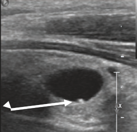
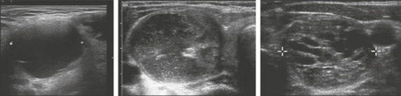
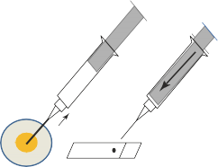
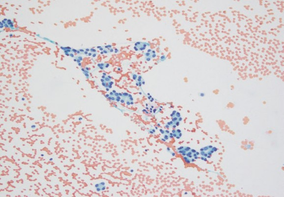
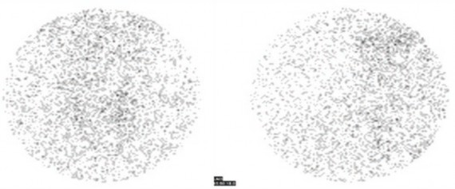
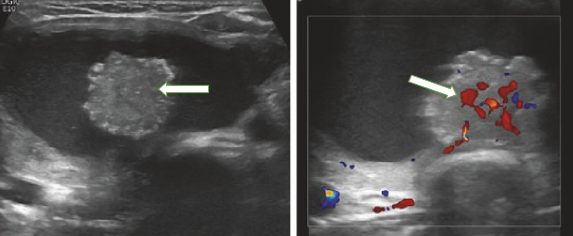

Handbook of Thyroid and Neck Ultrasonography
An Illustrated Case Compendium with Clinical and Pathologic Correlation

Hospital
Boston, MA, USA
Jeffrey R. Garber
Department of Endocrinology Harvard Vanguard Medical Associates/Atrius Health and Harvard Medical School Boston, MA, USA
Boston, MA, USA
ISSN 2523-3785 ISSN 2523-3793
Contemporary Endocrinology
ISBN 978-3-031-18447-5 ISBN 978-3-031-18448-2
https://doi.org/10.1007/978-3-031-18448-2
© The Editor(s) (if applicable) and The Author(s), under exclusive license to Springer Nature Switzerland AG 2023
This work is subject to copyright. All rights are solely and exclusively licensed by the Publisher, whether the whole or part of the material is concerned, specifically the rights of translation, reprinting, reuse of illustrations, recitation, broadcasting, reproduction on microfilms or in any other physical way, and transmission or information storage and retrieval, electronic adaptation, computer software, or by similar or dissimilar methodology now known or hereafter developed.
The use of general descriptive names, registered names, trademarks, service marks, etc. in this publication does not imply, even in the absence of a specific statement, that such names are exempt from the relevant protective laws and regulations and therefore free for general use.
The publisher, the authors, and the editors are safe to assume that the advice and information in this book are believed to be true and accurate at the date of publication. Neither the publisher nor the authors or the editors give a warranty, expressed or implied, with respect to the material contained herein or for any errors or omissions that may have been made. The publisher remains neutral with regard to jurisdictional claims in published maps and institutional affiliations.
This Springer imprint is published by the registered company Springer Nature Switzerland AG
The registered company address is: Gewerbestrasse 11, 6330 Cham, Switzerland
Solly, Sarah, Bram, and Pierce for their support
—Jeffrey R. Garber
To my dad Dr. Orlando Vitale, who embraced and supported my interests in medicine, and to my loving husband Roberto Laver, Esq, a staunch supporter of my career
—Nora M. V. Laver
To our patients
—Gregory W. Randolph
To my wife, Yvonne, who patiently tolerated the hours in front of my computer

Neck ultrasonography plays a key role in the evaluation of thyroid nodules and parathyroid disease. This handbook arose from regu lar multidisciplinary clinical-pathological medical education con ferences centering on patients with thyroid and parathyroid disease that the editors participated in over a number of years. Our goal was to make it a clinically anchored, case-based, easy to use, concise volume that covers key points that endocrinologists, radi ologists, surgeons, and pathologists feel are most important to know about neck ultrasonography.
Chapters cover major types of thyroid nodule ultrasound fea tures: composition, echogenicity, shape, margins, rim calcifica tions, echogenic foci, and vascularity; parathyroid, lymph node, and non-thyroid neck masses. Characteristic ultrasound images, cytology and histopathology images along with representative cases and key clinical data are presented. Differential diagnoses are reviewed, and suggested references are provided.
Our intended audience is the clinician wishing to become pro ficient in the evaluation of patients with thyroid and parathyroid disease, who may also be interested in performing thyroid and neck ultrasound exams. We welcome our readers’ feedback and suggestions for improving and updating our first edition.
Boston, MA, USA Boston, MA, USA Boston, MA, USA Boston, MA, USA Boston, MA, USA

Point of care (or, using the regular English, bedside) ultrasound is rapidly becoming a widely used tool in many medical and surgical specialties. Endocrinologists have been using ultrasonography for assessing thyroid anatomy for several decades, since its introduc tion in the 1960s. More recently, training in thyroid and neck ultrasound, including its use in the course of fine needle aspiration (FNA) biopsy of thyroid nodules, has become a universal feature in endocrine fellowship training programs. Although ultrasonog raphy used by endocrinologists is primarily directed toward the assessment of thyroid anatomy, other structures in the neck, such as parathyroid glands, lymph nodes, large vessels, and inciden tally discovered lesions, can be also observed and assessed.
All of these issues, as well as many other aspects of thyroid and neck ultrasonography, are covered comprehensively yet con cisely in the current volume of the Contemporary Endocrinology series. A multidisciplinary writing crew is comprised of endocri nologists, surgeons, pathologists, and radiologists with extraordi nary depth of expertise (full disclosure: one of the editors, Dr. Jeffrey Garber, was my mentor when I was an endocrine fellow almost 40 years ago).
This guide for students and practitioners in all relevant special ties is highly recommended and, in my opinion, is destined to become a classic.
New York, NY, USA

As editor-in-chief, I would like to express my sincere gratitude to my colleagues for all of their contributions and insights toward this project: Dr. Jeffrey R. Garber, for first proposing the concept of a clinical, case-based handbook for ultrasound education and providing much support throughout all stages of this project; Dr. Barry Sacks, for providing invaluable contributions not only to chapters he authored, but also supplying images and feedback related to all of the images in the Handbook, and for keeping me on my toes; Dr. Nora M. V. Laver, for providing her expertise for all of the pathology images in the Handbook, and for her moral support; and finally, Dr. Gregory W. Randolph, for collaborating with our surgical and radiology colleagues as well as providing razor-sharp feedback to improve our design and final product. It was a pleasure working with each of you.
Leslie S. Eldeiry

The Basics of Thyroid and Neck Ultrasound
Nora S. Call, Alison M. Savicke, and Barry Sacks
Ultrasound Scoring Systems, Clinical Risk Calculators, and Emerging Tools Priyanka Majety and Jeffrey R. Garber
Thyroid Fine Needle Aspiration and Biopsy Techniques for Lesions in the Neck . . . . . . . . . . . . . . . Barry Sacks
Overview of the Bethesda System for
Reporting Thyroid Cytopathology . . . . . . . . . . . . . . . Teresa H. Kim and Jeffrey F. Krane
Fine Needle Aspiration: Role of Molecular
Testing . . . . . . . . . . . . . . . . . . . . . . . . . . . . . . . . . . . . . .
James V. Hennessey
Thyroid Gland Ultrasonography: Hashimoto’s, Graves’, Thyroiditis,
Toxic Multinodular Goiter . . . . . . . . . . . . . . . . . . . . . . Preethika S. Ekanayake, Omonigho Aisagbonhi,
and Karen C. McCowen
Thyroid Nodule Composition. . . . . . . . . . . . . . . . . . . . Leslie S. Eldeiry
Echogenicity of the Thyroid . . . . . . . . . . . . . . . . . . . . . Pamela L. Mok

Parathyroid Imaging. . . . . . . . . . . . . . . . . . . . . . . . . . . Barry Sacks
Cervical Lymph Nodes . . . . . . . . . . . . . . . . . . . . . . . . . Hien Tierney
Neck Findings . . . . . . . . . . . . . . . . . . . . . . . . . . . . . . . .
Mary Beth Cunnane, Greg Randolph, and Amy Juliano
Index. . . . . . . . . . . . . . . . . . . . . . . . . . . . . . . . . . . . . . . . . . . .

Omonigho Aisagbonhi, MD, PhD Department of Pathology, University of California, San Diego, San Diego, CA, USA
Chelsey Baldwin, MD Division of Endocrinology and Metabo lism, The George Washington University, Washington, DC, USA
Nora S. Call, BS, RDMS, RT(R) Department of Ultrasound, Beth Israel Deaconess Medical Center and Harvard Medical School, Boston, MA, USA
Mary Beth Cunnane, MD Department of Radiology, Massa chusetts Eye and Ear Institute, Boston, MA, USA
Preethika S. Ekanayake, MD Division of Endocrinology, Dia betes and Metabolism, University of California, San Diego, San Diego, CA, USA
Leslie S. Eldeiry, MD Department of Endocrinology, Harvard Vanguard Medical Associates/Atrius Health and Harvard Medical School, Boston, MA, USA
Jeffrey R. Garber, MD Department of Endocrinology, Atrius Health/Harvard Vanguard Medical Associates and Harvard Medi cal School, Boston, MA, USA
Chia A. Haddad, MD Harvard Vanguard Medical Associates, Massachusetts Eye and Ear, Harvard Medical School, Boston, MA, USA

Angeles, CA, USA
Matthew J. Levine, MD Division of Diabetes and Endocrinol ogy, Scripps Clinic, La Jolla, CA, USA
Priyanka Majety, MD Beth Israel Deaconess Medical Center, Boston, MA, USA
Karen C. McCowen, MD Division of Endocrinology, Diabetes and Metabolism, University of California, San Diego, San Diego, CA, USA
Pamela L. Mok, MD Department of Radiology, Atrius Health, Boston, MA, USA
Michael D. Otremba, MD Department of Otolaryngology-Head and Neck Surgery, Massachusetts Eye and Ear, Harvard Medical School, Boston, MA, USA
Rachel Pessah-Pollack, MD Division of Endocrinology, Diabe tes and Metabolism, NYU School of Medicine, New York, NY, USA
Greg Randolph, MD Department of Otorhinolaryngology, Head and Neck Surgery, Massachusetts Eye and Ear Institute, Boston, MA, USA

cal School, Boston, MA, USA
Hien Tierney, MD Atrius Health/Harvard Medical School, Bos ton, MA, USA

Key Points
Ultrasound is entirely operator-dependent. As a result, it is critical for the operator to be thorough, identify, and document both normal structures and abnormalities while obtaining high quality images.
Knowledge about the clinical presentation, past exams, and labs will result in a more insightful imaging study.
Thyroid nodules should be carefully evaluated for suspi cious features. This is particularly important for each nodule in a multinodular goiter.


N. S. Call · A. M. Savicke
Department of Ultrasound, Beth Israel Deaconess Medical Center and Harvard Medical School, Boston, MA, USA
e-mail: nasulliv@bidmc.harvard.edu; asavicke@bidmc.harvard.edu
B. Sacks (*)
Department of Radiology, Beth Israel Deaconess Medical Center,
Boston, MA, USA
e-mail: bsacks@bidmc.harvard.edu
© The Author(s), under exclusive license to Springer Nature Switzerland AG 2023
L. S. Eldeiry et al. (eds.), Handbook of Thyroid and Neck Ultrasonography, Contemporary Endocrinology, https://doi.org/10.1007/978-3-031-18448-2_1


ing structures in the neck, including the thyroid, lymph nodes, salivary glands, arteries/veins, and musculature, due to their superficiality and the ability to obtain image clarity. Ultrasound is entirely operator-dependent. As a result, it is critical for the opera tor to optimize images, understand the patient’s clinical presenta tion, and know what additional information should be sought based on the findings.
Ultrasound is a medical imaging modality utilizing sound waves at a frequency of over 20 KHz (beyond/higher than the audible range), to create high resolution images of anatomical structures.
US is cost-effective, noninvasive, with no known detrimental bioeffects.
With the proper equipment, transducers, and settings, the diag nostic capabilities are invaluable.

Basic Ultrasound Physics
Almost all clinical ultrasound is performed using a B-mode (bright ness) scanner, producing real time, two-dimensional images.
Each transducer contains numerous piezoelectric crystals, which emit brief sequential pulses of energy into the underly ing tissue.
A liquid medium, or gel, is necessary to attain contact between the transducer and skin.


Usually the word “artifact” has a negative connotation. However, many ultrasound artifacts can actually be helpful.
Posterior Acoustic Enhancement: In fluid-filled structures (anechoic) the speed of the pulse accelerates causing the deeper structures to increase in echogenicity (posterior enhancement).
Acoustic Shadowing: A calcification, bone, or surgical clip will entirely reflect the sound beam, and the result is a “shadow,” deep to the structure. Air also disperses the beam, which nearly completely obscures the image.
Reverberation Artifact: Occurs when the sound beam encoun ters a highly reflective surface and reflects multiple times. This can occur when structures are very close to the transducer, as an example, the trachea during a thyroid study.
Reverberation is also seen in the setting of a colloid crystal/ inspissated colloid within a cyst. The punctate echogenic foci within produce a “ring-down” or “comet-tail” artifact.

Equipment
There are several high quality, sophisticated ultrasound machines, providing a large selection of transducer options and image optimization functions (Image 1.1
– Produced by a number of companies including General Electric, Philips, Samsung, and Siemens.
They are expensive, require regular servicing, and each has
strengths and weaknesses, depending on the specific ultra sound study being performed (small parts, abdomen, obstet

Image 1.1 Two examples of top-of-the-line ultrasound units
rics, etc.). Selection of equipment should be based on optimizing the quality of images for the majority of exams being performed at the operator’s site.
For offices or departments with limited budgets, refurbished or leasing machines are viable options.
Point-of-care handheld ultrasound system technology is rap idly evolving (Image 1.2).
Advantages: Images display on a smartphone or tablet, pro
viding convenience, transportability, and lower cost.
Disadvantages: Small display size, reduced image quality, limited transducer versatility and hardware options.


Transducer Selection
Transducers used in ultrasound differ in frequency, footprint size, and shape.
Transducer frequency is directly related to image quality, as it determines image resolution. The higher the frequency, the better the resolution, but at the expense of limited deep pene tration.
For imaging of the neck, high-frequency transducers are opti mal, preferably a 12-18 MHz linear array, providing both opti mal image quality and adequate penetration. Linear transducers provide a rectangular image, but some have the ability to widen the field of view to a trapezoidal shape, which is helpful in cases of thyromegaly.
In cases with suboptimal penetration, such as a thick neck or large multinodular goiter, a linear 7–9 MHz transducer can provide acceptable image quality. The lower frequency allows for greater penetration to visualize the deeper tissue.
Alternatively, a lower frequency 5 MHz curved transducer will provide a larger field by emitting a fan-shaped beam, but at the expense of reduction in resolution.
It is important to have a variety of transducers available to fully assess each individual’s anatomy (Images
Bottom row: Curved transducers for deeper penetration and larger field of view.


Image 1.3 Top row: Linear array transducers for superficial structures

Image 1.4 Enlarged thyroid gland. Left: Linear array transducer utilizing a wide angle beam to increase the field of view; Right: Curved C-5 probe which has a naturally divergent beam was used to produce a wider, complete image

Image 1.5 Top row: Transverse (left) and sagittal (right) ultrasound images of a large gland extending into the thoracic inlet, requiring a C-5 curved trans ducer to measure the entire sagittal length of the lobe; Bottom row: CT show ing axial and sagittal images of the same large, right-sided goiter

Patient Positioning and Scanning Techniques (Image 1.6)
The patient is placed in a supine position with a towel or pillow behind the shoulders to extend the neck, creating a large imag ing window.
As indicated in the diagram below, transverse scans are ini tially obtained from superior to inferior bilaterally with the transducer notch facing the patient’s right side, first with the head in neutral position, and repeated rotating the head to left for the right lobe and to the right for the left lobe.
Sagittal scans are obtained bilaterally, medial to lateral, with the transducer notch pointed superiorly.
Color Doppler images should be documented to determine vascularity of the gland.

All pathologic lesions should be documented in transverse and sagittal planes and color Doppler included.
If available, cine loops should be obtained. These are extremely valuable, allowing review of the entire study during reporting.
Two additional techniques can be helpful in adding specificity to the ultrasound assessment of thyroid nodules. These include elastography and ultrasound contrast enhancement
Tissue or nodule firmness has always been considered a bio marker of tissue pathology. Thyroid elastography is a method that evaluates the stiffness of the tissue, a capability available on most new US machines. Since all firm thyroid nodules on palpation are suspicious for malignancy, the ability to assess whether a nodule is firm on US adds diagnostic value in determining that malig nancy potential. Having this capability provides an additional technique to evaluate thyroid nodules, particularly those deep within the thyroid substance, not easily palpable. During the stan dard US exam, after documenting the normal ultrasound and color Doppler images, the elastography is activated and provides color images of the nodule. Depending on the color profile, the degree of softness or firmness of the nodule can be determined. This technology has also been referred to as “electronic palpation.” There are two types, strain elastography (SE) and shear wave elas tography (SWE), essentially two different mechanisms to evalu

SonoVue consists of sulfur hexafluoride microbubbles (2–10 which is injected intravenously as a small bolus. The microbub bles stay in circulation for a limited period. Immediately follow ing the injection continuous real time scanning is performed over the lesion of interest. The microbubbles in the blood flow reach the lesion, reflecting unique prominent echoes very different to the surrounding tissue. There is a pattern of increased echo genicity into a contrast-enhanced image of the region of interest (ROI) that represents the bubbles in the microvasculature. The microbubbles last only 5–10 min in circulation because they are taken up either by immune system cells, liver, or spleen. Previous studies have shown enhancement patterns that were different in benign and malignant lesions. Ring enhancement was predictive of benign lesions, whereas heterogeneous enhancement was help ful in suggesting the possibility of malignant lesions.
Although both of these technical advancements have provided additional ways of improving nodule assessment, they have thus far not caught on for routine use in the day-to-day evaluation of thyroid or neck lesions.

Potential Scanning Pitfalls
Air and bone attenuate the ultrasound waves; as a result, a vari ety of maneuvers may be necessary to obtain adequate diag nostic images. These include angling the transducer from an unusual direction or opposite side, rotating the patient’s head

for those exams, to provide the referring clinician all the necessary information to make therapeutic decisions or determine the need for additional studies. For in-depth discussions of the specific find ings, please refer to the chapters dedicated to each subject.
Thyroid Anatomy (Image 1.7)
A normal thyroid gland has a homogenous texture and is typically more echogenic than surrounding musculature. It is important to recognize that images from various manufacturers will have slight
Image 1.7 Important anatomic structures (see diagram below)

The recurrent laryngeal nerves are extremely important struc tures, not identifiable on ultrasound, but their approximate location is labeled with the blue circles.
The carotid arteries and internal jugular veins are lateral to the thyroid bilaterally.
Normal Thyroid Texture (Image 1.8)
Image 1.8 Different presentations of a normal thyroid appearance—slightly different settings, contrast levels, and image presentation. Left images are transverse; right images are sagittal views. Note the difference in contrast between the thyroid gland and muscles above it between the top and bottom images

mus (arrows), common in Hashimoto’s
Image 1.10 Later stages of Hashimoto’s. Patchy heterogeneity of the gland. Middle panel: More severe and diffusely enlarged gland; Right panel: A fibrotic, atrophic gland, often representing the end stage
Image 1.11 Color Doppler is useful in evaluating the thyroid parenchyma. Increased vascularity is usually indicative of a diffuse process, such as Hashi moto’s thyroiditis or Graves’ disease, or drug effect, particularly lithium therapy

Image 1.12 Left: US showing a transverse (top) and sagittal (bottom) view of a left pyramidal lobe. Right: 3D reconstruction of CT in a patient with a parathyroid adenoma (red arrow). The patient has an incidental left pyramidal lobe (white arrow)
Image 1.13 Classic thyroglossal duct cysts. Left and middle panels: Trans verse and sagittal views of the lesion located at the midline superior to the thyroid; it is anechoic and avascular (arrows); Right: Color Doppler of a separate thyroglossal duct cyst with a septation (arrow)

Thyroid Nodules
Thyroid nodules vary in composition, from simple cysts, to spon giform, complex solid/cystic, and solid lesions.
Simple Cysts (Image 1.14)
Thin-walled, fluid filled, avascular, and completely anechoic.
Low level internal echoes may be due to debris or old hemor rhage.

Image 1.14 Simple thyroid cyst with a dependent colloid crystal/inspis sated colloid (left panel transverse, right panel sagittal). Also note acoustic enhancement posterior to the cyst (arrows)

the appearance of the cross section of a sponge (but the spaces are fluid filled).
Highly reflective echoes are commonly found within the cysts, often in the dependent portions.
Demonstration of a comet-tail artifact projecting behind the echo differentiates colloid from microcalcification.

Image 1.15 Spongiform nodules with microcysts (left); middle panel dem onstrates macro-cysts; right panel shows dependent colloid crystals with a “comet tail” (arrows)

Any concerning features warrant a lymph node evaluation and biopsy.

Image 1.16 Examples of predominantly solid nodules. Left panel: Isoechoic, benign nodule with small cystic component; Middle panel: Hypoechoic nodule for which FNA is warranted; Right panel: Small, hypoechoic nodule, taller than wide with calcification—FNA is warranted to rule out papillary thyroid cancer (PTC)
Image 1.17 Vascularity. Left: Isoechoic nodule with minimal vascularity, mostly peripheral; Right: Hypoechoic nodule with hypervascularity. Both require FNA

Image 1.19 Two images of the same nodule. Well-defined hypoechoic nod ule with dense calcification (usually dystrophic—secondary to either necrosis or old hemorrhage), which showed benign cytology
Image 1.20 Focal thyroid nodule with anterior extrathyroidal extension (white arrows) into the strap muscles (yellow stars). Red arrows indicate thy roid capsule, which is disrupted at site of extrathyroidal extension

should always be performed.
Image 1.21 Diagrammatic demonstration of the cervical lymph node levels

(increased vascularity) may also be an important indicator of underlying pathology (but is not specific—can also be inflammatory).
Image 1.22 Normal lymph nodes. Left, longitudinal, long and thin lymph nodes with echogenic hila (arrows). Right, larger node but morphologically normal with well-defined hilar line
Image 1.23 Abnormal lymph nodes: Variable appearance in metastatic pap illary thyroid carcinoma. Left panel: Cystic lymph node; Middle panel Mostly solid lymph node with microcalcifications; Right panel
cystic with microcalcifications


Image 1.24 Pathologic lymph nodes. Above left
Above right: Metastatic medullary thyroid carcinoma node; Lower left
tiple lymphoma nodes. Lower right: Lymphoma with intralesional vascularity

Other Neck Masses
Ultrasound is usually the initial imaging study of choice for other neck masses, including parathyroid glands, salivary glands, bran chial cleft cysts, carotid body tumors, and a variety of soft tissue tumors.

Parathyroid Glands
Normal parathyroid glands are not typically visualized on ultrasound, due to their small size. When they are identified, this usually implies enlargement, either due to hyperplasia or parathyroid adenoma.

Parathyroid adenomas vary in size and shape (Image
are almost always hypoechoic and hypervascular on color Doppler imaging.
Please see the dedicated Parathyroid chapter for detailed information and ultrasound localization techniques.

Salivary Glands (Image 1.26)
The parotid and submandibular glands are commonly seen on ultrasound and may contain intra-glandular lymph nodes, cal culi, or masses, such as cystic or solid tumors.
On ultrasound, the glands should appear homogeneous, mini mally vascular, and symmetric in size. Side to side comparison is essential. Heterogeneity, hyperemia, and/or asymmetrical enlargement may indicate signs of an inflammatory process.


Branchial Cleft Cyst
Congenital cysts arising from the head and neck.
Second branch cleft cysts are most common, accounting for 90-95% of branchial cleft cysts, and are found between the angle of the mandible and the carotid bifurcation.

Carotid Body Tumor
A carotid body tumor (also called a chemodectoma or paragan glioma, Image 1.27) is usually benign, unilateral, and lying in the carotid artery bifurcation separating the internal and external carotid arteries.

responding computed tomography angiography (CTA) imaging, confirming the enhancing carotid body tumor within the carotid bifurcation (arrow)

Further Reading
AIUM practice guideline for the performance of ultrasound examinations of the head and neck. J Ultrasound Med. 2014;33(2):366–82.
Baskin HJ, Duick DS, Levine RA. Thyroid ultrasound and ultrasound-guided FNA. New York, NY: Springer; 2013.
Jiang H, Tan Q, He F, Yang W, Liu J, Zhou F, Zhang M. Ultrasound in patients with treated head and neck carcinomas: a retrospective analysis for effec tiveness of follow-up care. Medicine. 2021;100(16):e25496.
Kotecha S, Bhatia P, Rout PG. Diagnostic ultrasound in the head and neck region. Dent Update. 2008;35(8):529–30, 533–4.
denu.2008.35.8.529. PMID: 19055089.
Rumack CM, Levine D. Diagnostic ultrasound. Elsevier; 2018.

Key Points
Currently available tools to risk stratify thyroid nodules include clinical practice guidelines, scoring systems (qualitative or quantitative), web-based calculators, and an interactive algorithm.
Web-based tools provide an easy-to-use and easily mod ifiable approach in evaluating risk of malignancy for thy roid nodules.
Many web-based tools generally do not include clinical considerations.
TNAPP is a novel attempt to convert a comprehensive clinical practice guideline to a web-based tool that employs clinical and radiologic characteristics.
The application of AI to evaluate thyroid nodules holds promise for the future.


P. Majety (*)
Beth Israel Deaconess Medical Center, Boston, MA, USA
J. R. Garber
Department of Endocrinology, Atrius Health/Harvard Vanguard Medical Associates and Harvard Medical School, Boston, MA, USA
e-mail: jgarber@bidmc.harvard.edu
© The Author(s), under exclusive license to Springer Nature Switzerland AG 2023
L. S. Eldeiry et al. (eds.), Handbook of Thyroid and Neck Ultrasonography, Contemporary Endocrinology, https://doi.org/10.1007/978-3-031-18448-2_2

The evaluation of patients with a suspected or known thyroid nodule should include a careful medical history, physical exami nation, TSH level, followed generally by ultrasound (US) evalua tion. Sonographic characteristics of thyroid nodules have been used to better assess the risk of malignancy (RoM). Currently, the principal tools available to clinicians are: (1) clinical practice guidelines (CPG) from professional societies, (2) scoring systems (qualitative or quantitative), (3) web-based calculators, and (4) an interactive algorithm. Guidelines are large documents with exten sive information. The latter tools are easier to use, interactive, trackable, can be integrated into electronic health records, estab lish the sequence of clinical steps, and generate patient-specific recommendations. To date these tools have been retrospectively, but not prospectively, studied. Artificial intelligence (AI) is emerging as a promising approach to evaluating thyroid ultra sound, but is beyond the scope of this chapter.
Case Presentation
A 51-year-old woman with a past medical history of breast cancer in remission (after treatment with chemotherapy, surgery, and XRT), on anastrozole, was referred for osteopenia management. Her physical exam was notable for an approximately 1 cm right mid-pole thyroid nodule with no lymph nodes of significance. Her TSH was 2.27 mIU/L.
Her mother was diagnosed with papillary thyroid cancer at age 30 and died of complications of advanced disease. Thyroid ultra sound showed a 0.9 × 0.7 × 0.9 cm hypoechoic, posterior right

a
b
Fig. 2.1 (a–d) US demonstrated a 0.9 × 0.7 × 0.9 cm hypoechoic, posterior right mid-pole nodule with a coarse calcification (arrow in panel
ular borders (all panels)
mid-pole nodule with irregular margins and a coarse calcification (Fig. 2.1, below). Inferior and adjacent to this, there was a patchy hypoechoic region that was well defined. No abnormal cervical lymph nodes were identified.
Given her history of breast cancer and family history of lethal thyroid cancer, she requested a fine-needle aspiration (FNA) of the nodule.

Risk Calculators Versus Clinical Practice Guidelines
CPGs are important evidence-based, narrative tools that aid clini cians in managing various medical conditions and are used as a basis for medical decision-making in both clinical and adminis

bring guidelines to “point of care.” Unambiguous, sequential rec ommendations are made. They are easier to use, interactive, not very time-consuming and can be used as a tool to engage patients and track data about use and outcomes by being integrated into electronic health records. Unlike CPGs, these are not static docu ments that take substantial effort and time to update. They facili tate testing and validating recommendations prospectively and retrospectively. Expert users’ feedback can continually guide revisions that can be readily and rapidly implemented.
Calculators can be used in a variety of clinical settings, e.g., in solo-practice, large multi-specialty delivery systems, regional and national databases, or research consortiums. There are limitations, however. Features that are key to clinical decision-making (for example, patient anxiety, cosmetic concerns, etc.) are usually omitted from these tools. They are typically introduced in a com panion publication, e.g., an American College of Radiology “white paper” for TI-RADS. They are not as comprehensive and therefore not as instructive as CPGs.
CIGs have been shown to be effective in additional clinical domains, such as chronic diseases, diabetes, stroke, and hyperten sion. Examples of some of the widely used risk calculators include the fracture risk assessment tool, FRAX (
ac.uk/FRAX/), and the ASCVD (atherosclerotic cardiovascular disease) risk estimator (https://tools.acc.org/ascvd- plus/#!/calculate/estimate/). Since the latter employs standardized data, it serves as a prototype calculator to automatically generate cardiovascular risk in electronic health record systems.

The 2016 American Association of Clinical Endocrinologists/ American College of Endocrinology/Associazione Medici Endocrinologi (AACE/ACE/AME) guidelines were updated in 2021 as a novel interactive electronic algorithmic tool entitled, The Thyroid Nodule App (termed TNAPP). This tool classifies thyroid nodules into 3 categories based on US features: US 1 (low-risk), US 2 (intermediate-risk), and US 3 (high-risk). Tables 2.1, 2.2, and 2.3 and Figs. 2.2, 2.3, and 2.4
these categories and FNA recommendations.
Table 2.1 2021 AACE/ACE-AME risk stratification based on clinical fea tures
Clinical 1 | Clinical 2 |
One or more of the following clinical factors are against performing FNA: | One or more of the following clinical factors favor FNA: |
|
|

2021AACE/ACE-AME risk stra fica on | ||
is present and |
| |
Either solid or mixed and marked hyperechoic nodule-described as | ||
none of the | "white knight", is o en seen in a gland with clear features of | |
intermediate or | Hashimotos thyroidi s | |
high-risk features | ||
Comet tail echogenic foci and its variants are present on ultrasound | ||
is present | ||
Either solid or mixed and hyperechoic | ||
Either solid or mixed and isoechoic nodule and | ||
none of the US 2/3 features such as microcalcifica ons, intranodular | ||
macrocalcifica ons, peripheral rim calcifica ons, echogenic foci | ||
difficult to characterize, spiculated or irregular margin, extra- | ||
thyroidal extension | ||
Mixed solid cys c nodule thathas reverbera ng ar facts, which is low-riskfeature compared with eccentric mural component (excluded from scoring) | ||
Peripheral vascularity (excluded from scoring) | ||
Mixed solid cys c nodule has a solid concentric/spongiform like component (excluded from scoring) | ||
US 2 (intermediate) | Intermediate risk ultrasound features | |
Margin on ultrasound is irregular with protrusion into adjacent thyroid ssue | ||
One or more of the corresponding intermediate-risk features is present and none of the high- risk features is present | Echogenic foci include either intra-nodular macrocalcifica ons or foci that are difficult to characterize or peripheral rim calcifica ons include either interrupted rim calcifica on or uninterrupted rim calcifica ons | |
Composi on is either solid or mixed and the echogenicity of solid part is either slightly hypoechoic or hypoechoic | ||
Either solid or mixed nodule and isoechoic and or at least one more US 2 feature such as irregular margin or intranodular macrocalcifica ons or foci that are difficult to characterize or peripheral rim calcifica ons and | ||

characteris cs such as microcalcifica ons, extrathyroidal extension,
| ||
One or more of | ||
Echogenicity is profoundly hypoechoic | ||
the | Microcalcifica ons within the nodule | |
corresponding | ||
Shape is taller than wide | ||
high-risk features | ||
Solid and hypoechoic and either intranodularmacrocalcifica ons or | ||
present | nonspecific echogenic foci or peripheral rim calcifica ons present | |
(excluded from scoring) | ||
Extrathyroidal extension is noted (excluded from scoring) | ||
Nodule size
< 5 mm
Ultrasound 1
Ultrasound 2
Ultrasound 3
5 – 10 mm
Ultrasound 1
Ultrasound 2
Clinical 1
Clinical 2
Ultrasound 3
>10 – 20 mm
Ultrasound 1
Ultrasound 2
Ultrasound 3
>20 – 40 mm
Ultrasound 1
Ultrasound 2
Ultrasound 3
> 40 mm
Ultrasound 1
Ultrasound 2
Ultrasound 3
Table 2.3 2021 AACE/ACE-AME (TNAPP) guidelines regarding FNA. Adapted from 2021 American Association of Clinical Endocrinologists and Associazione Medici Endocrinologi thyroid nodule algorithmic tool by Garber et al.
No follow up No follow up |
No follow up No follow up |
Monitor at 18-24 months then stop Monitor at 18-24 months then stop |
No follow up | No follow up |
Monitor at 18-24 months | Either Consider FN If no FNA then Monitor at 12-24 months |
Either Consider FNA If no FNA then Monitor at 18-24 months | Either Consider FN If no FNA then Monitor at 12-24 months |
Monitor at 12-24 months Monitor at 12 months |
Either Recommend FN Consider FNA If no FNA then Monitor at 12 months |
Recommend FNA Recommend FN |
Either Either Consider FNA Consider FN If no FNA then Monitor at 12 months If no FNA then Monitor at 12 months |
Recommend FNA Recommend FN |
Recommend FNA Recommend FN |
Recommend FNA Recommend FN |
Recommend FNA Recommend FN |
Recommend FNA Recommend FNA |


a
c
berating artifacts (b), isoechoic spongiform nodule (
a
b
c
d
Fig. 2.3 US 2 (Intermediate-risk) features: Isoechoic nodules with: central vascularity* (a), elevated stiffness on elastography (
(c), and indeterminate hyperechoic spots (d). *Not assigned a score
TNAPP provides guidance in the initial evaluation of ambula tory patients with thyroid nodules that are not extremely likely to be malignant. Thus, nodules in those who presented with elevated calcitonin levels, multiple endocrine neoplasia type 2 syndromes, previously documented thyroid cancer, and suspicious lymphade nopathy were excluded.
Clinical factors (Table 2.1) were comprised of features in favor of performing FNA, termed Clinical 2, and those with

Fig. 2.4 US 3 (High-risk) features: Marked hypoechogenicity ( (spiculated) margins (b), extracapsular growth (c
taller than wide shape (e), and a suspicious regional lymph node (
features against performing FNA, termed Clinical 1. When fac tors for and against doing an FNA are present, clinical judg ment becomes the default decision-making factor (e.g., consideration of other medical conditions that take precedence at the time).
Management recommendations are informed by nodule size,
US, and clinical characteristics (Table 2.3
these guidelines, nodules with a major diameter <5 mm should only be monitored with US if they have high-risk ultrasound fea tures (US 3). Nodules with a major diameter 5–10 mm with inter mediate- or high-risk ultrasound features (US 2/US 3) can either be monitored or aspirated. All nodules with a major diameter
>10 mm require monitoring or FNA regardless of ultrasound characterization (US 1/US 2/US 3).
American Thyroid Association (ATA)
The 2015 ATA guidelines (update is in progress) categorize nodules based on ultrasound features into 5 categories: benign, very low, low, intermediate, or high suspicion (Table 2.4
are informed by nodule size and ultrasound characteristics.

Very low suspicion Spongiform or partially cystic nodules without any of the sonographic features described in low, intermediate, or high suspicion patterns | ||
Low suspicion Isoechoic or hyperechoic solid nodule, or partially cystic nodule with eccentric solid areas, without:
| 5–10 | |
Intermediate suspicion Hypoechoic solid nodule with smooth margins without:
| 10–20 | |
High suspicion Solid hypoechoic nodule or solid hypoechoic component of a partially cystic nodule with 1 or more of the following features:
| >70–90 | |

which evaluated a total of 3422 nodules concluded that the aggre gate risk levels for TR1, TR2, TR3, TR4, and TR5 nodules were 0.3%, 1.5%, 4.8%, 9.1%, and 35.0%, respectively.
Assessing a nodule with TI-RADS involves evaluation of its composition, echogenicity, shape, margin, and echogenic foci. Points are assigned to each US feature, with higher values indicat ing greater degrees of suspicion (Fig. 2.5). Recommendations for FNA or ultrasound follow-up are based on a nodule’s ACR TI- RADS level and its maximum diameter.
Overall, TI-RADS has a higher size threshold for recommend ing biopsy compared with other systems. In a study of 2847 patients with biopsy results proven by pathology data, ACR TI- RADS classification had a specificity of 98.8% for diagnosing benign nodules at the cost of missing a small number of papillary cancers in TR2 and TR3 nodules that were smaller than 2.5 cm (i.e., lower sensitivity for nodules <2.5 cm).
More recently, artificial intelligence (AI) has been used to update ACR TI-RADS, though its use is not yet as widespread as ACR-TIRADS. AI TI-RADS assigned new point values for eight ACR TI-RADS features (Fig. 2.6). The five imaging characteristic categories were maintained with the following changes in each:
Composition—only solid nodules receive points
Mixed cystic/solid nodules receive 0 points instead of 1 point
Solid or near-completely solid nodules receive 3 points instead of 2 points
Nodules that cannot be classified receive 0 points instead of 2 points
Spongiform: Composed predomi- nantly (>50%) of small cystic spaces. Do not add further points for other categories.
Anechoic: Applies to cystic or almost completely cystic nodules.
Hyperechoic/isoechoic/hypoechoic:
Compared to adjacent parenchyma.
Taller-than-wide: Should be assessed on a transverse image with measure- ments parallel to sound beam for height and perpendicular to sound beam for width.
Lobulated:
tissue.
Irregular:
angles.
Mixed cystic and solid: Assign points for predominant solid component.
Very hypoechoic: More hypoechoic than strap muscles.
This can usually be assessed by visual inspection.
Extrathyroidal extension:
invasion = malignanc
Assign 2 points if composition cannot be determined because of calicification.
Assign 1 point if echogenicity cannot be determined
Assign 0 points if margin cannot be determined
COMPOSITION
(Choose 1)
Cystic or almost completely cystic*
Spongiform*
Mixed cystic/solid
Solid or almost completely solid
Can’t classify
0
0
0
3
0
SHAPE
(Choose 1)
Wider-than-tall Taller-than-wide
0
1
Smoot
III-defined
Lo irregular Extra-th ex
Can’t classify
0
*Refer to discussion fo papillary microcarcinomas for 5-9 mm TR% nodules.
AI TI-RADS
0
ECHOGENICITY
(Choose 1)
Anechoic 0
Hyperechoic 0
Isoechoic 0
Hypoechoic 2
Very hypoechoic 3
Can’t classify 0
Add Points From All Categories to Determine TI-RADS Level
*Cystic and spongiform nodules receive 0 points in total without adding furt


1 Point or Less
TR1
Benign
No FNA

2 Points
TR2
Not Suspicious
No FNA

3 Points
TR3
Mildly Suspicious FNA if 2.5 cm Follow if 1.5 cm
Fig. 2.5 Scoring systems: ACR Thyroid Imaging, Reporting and Data Sys tem (TI-RADS) lexicon, TR levels, and criteria for fine-needle aspiration or follow-up ultrasound and Artificial Intelligence-optimized Thyroid Imag ing, Reporting and Data System (AI TIRADS). Adapted from ACR: TI- RADS: White paper of the ACR TI-RADS committee by Franklin N Tessler et al., 2017

0
0


0
0

Can’t classify
0
* Could not be evaluated due to small sample size. Points adapted from ACR TI-RADS.
Fig. 2.6 Comparison of ACR TI-RADS and AI TI-RADS
Echogenicity—only hypoechoic nodules receive points
Iso/hyperechoic and nodules that cannot be classified receive 0 points instead of 1 point
Shape
Taller than wide nodules receive only 1 point instead of 3 points
Margins
No change
Echogenic foci
Macrocalcifications receive 0 points instead of 1 point
EU-TIRADS
The European Thyroid Association (ETA), namely EU-TIRADS, categorizes nodules into five classes from TR1 (no nodules) to TR5, which is the highest risk level (Table 2.5
risk stratification system that considers tumor composition, echo genicity, and suspicious US features with recommendations for FNA informed by size cut-offs.

TR3 | Ovoid, smooth, iso/ hyperechoic No features of high suspicion | Low-risk | >2.0 cm | |
TR4 | Ovoid, smooth, mildly hypoechoic No features of high suspicion | Intermediate- risk | >1.5 cm | |
TR5 | At least 1 of the following features of high suspicion:
| High-risk | >1.0 cm | |
K-TIRADS
The Korean Thyroid Imaging Reporting and Data System (K-TIRADS) is an ultrasound-based risk stratification system for thyroid nodules that was endorsed by the Korean Society of Thyroid Radiology (KSThR) and Korean Thyroid Association (KTA) in 2016. Risk stratification is based on tumor composition, echogenicity, and suspicious US features with FNA informed by size cut-offs (Table 2.6).

(3) Pure cyst | |||
Low suspicion (K-TIRADS 3) | Partially cystic or iso/ hyperechoic nodule without any of three suspicious US features | ||
Intermediate suspicion (K-TIRADS 4) | (1) Solid hypoechoic nodule without any of three suspicious US features (microcalcification, nonparallel orientation, spiculated/microlobulated margin) or (2) partially cystic or isohyperechoic nodule with any of three suspicious US features | ||
High suspicion (K-TIRADS 5) | Solid hypoechoic nodule with any of three suspicious US features | ||
aNot routinely indicated, but may be selectively considered for a spongiform nodule when the nodule size is ≥2 cm and indicated for the therapeutic drain age of the cystic content as well as for diagnosis prior to ablation therapy
C-TIRADS
The Chinese Thyroid Imaging Reporting and Data System (C-TIRADS) is an ultrasound-based risk stratification system for thyroid nodules that was developed by the Superficial Organ and Vascular Ultrasound Group of the Society of Ultrasound in Medi

Multiple studies have been done to compare various risk stratifi cation tools, with no one system being demonstrated consistently superior to the others, which may be due to different inclusion criteria, patient populations, and analytic methods.
In a study that looked at a total of 2000 consecutive thyroid nodules (≥1 cm) in 1802 patients, comparing seven society guide lines, ACR TI-RADS recommended the fewest “unnecessary” (benign) thyroid nodule FNAs at 25.3%, followed by the 2016 AACE/ACE/AME guidelines (32.5%), ATA (51.7%), and
K-TIRADS (56.9%). K-TIRADS (94.5%) and ATA (89.6%)
guidelines were more sensitive than those of the AACE/ACE/ AME (80.4%) and ACR (74.7%), while the latter guidelines were more specific (ACR 67.3%, AACE/ACE/AME 58%, and ATA 33.2%). Table 2.7 summarizes 2 meta-analyses comparing vari ous risk stratification systems (RSS).
An important question that remains is: What is an acceptable rate of missing or postponing the diagnosis of relatively small thyroid cancers between 10 and 15 mm in size? ACR TI-RADS does not recommend FNA for TR4 nodules between 10 and 15 mm. For example, in one study, 17% of nodules with histol ogy proven cancer of size >10 mm, FNA was not recommended by ACR TI-RADS.

AACE/ACE-AME | 17% (4–30) | 93% (87–98) | |
EU TI-RADS | 29% (7–52) | 81% (60–100) | |
K TI-RADS | 25% (12–39) | 87% (75–99) | |
Comments: 5 head-to-head studies: ACR TI-RADS had higher relative diagnostic odds ratio (DOR) than ATA To avoid the bias that arises from the different methodologies of the published reports in a meta-analysis, summary operating measures assumed to be independent of the disease prevalence were used such as DOR, which is the odds of a positive test in those with disease relative to the odds of a positive test in those without disease | |||
29 studies; 33,748 nodules with pathological or imaging follow-up Kim PH., et al., Diagnostic performance of four ultrasound risk stratification systems: a systematic review and meta-analysis 2020 Aug;30(8):1159–1168 | |||
RSS | Median unnecessary FNA (%) | ||
ACR TI-RADS | 25 | ||
ATA | 52 | ||
EU TI-RADS | 39 | ||
K TI-RADS | 59 | ||
Comments: When high-risk categories (categories 4–5) were evaluated, no difference was found between RSS. Unnecessary FNA was defined as biopsy-proven benign nodules | |||

RADS category along with recommendations for FNA.
The Artificial Intelligence-optimized Thyroid Imaging Reporting and Data System (AI TI-RADS) was developed in 2019 (https://deckard.duhs.duke.edu/~ai-
using a data set of 1425 thyroid nodules. This revised AI TI-RADS assigned new point values for eight features, including a simpli fied scheme for some categories (Fig. 2.6). AI TI-RADS resulted in slightly higher specificity for identifying malignant nodules and recommending fine-needle aspiration (mean increase of 7.6% across eight radiologist readers; P < 0.001).
Malignancy Risk Estimation of Lesions with AUS/ FLUS
A web-based malignancy risk stratification system using a combi nation of ultrasound characteristics and subcategorized biopsy results for Bethesda III, atypia of undetermined significance/fol licular lesion of undetermined significance (AUS/FLUS) thyroid nodules was developed in 2018 (http://www.gap.kr/thyroidnod ule_b3.php). This was based on patients enrolled in the Korean Thyroid Study Group multicenter retrospective study and on the cytology reporting system developed by the Korean Endocrine Pathology Thyroid Core Needle Biopsy Study Group. US images from 672 thyroid nodules and biopsy results according to nuclear atypia and architectural atypia were analyzed and a 13-point risk scoring system was developed.

malignancy were demonstrated for patient age <52 years, male sex, nodule size, cystic content (lower odds ratio with higher cystic content), and the presence of additional nodules
The tool is easy-to-use and reproducible; however, the only US characteristics it employs are size and composition. Thus, it is best for assigning risk to patient populations rather than indi viduals.
Thyroid Nodule Malignancy Risk Calculator: Spain
A predictive model for the individual risk of malignancy of thy roid nodules was developed and validated using clinical, analyti cal, and ultrasound variables in 2020 (https://obgynreference. shinyapps.io/calccdt/). A retrospective case-control study was carried out in 542 patients with thyroid nodules that underwent thyroidectomy and a predictive model for thyroid cancer risk was devised. In the final model, the independent predictors of risk of malignancy were: male gender, very young or old age, a family history of thyroid cancer, TSH level >4.7 mcU/L, presence of autoimmune thyroiditis, solid composition, hypoechogenicity, irregular or microlobed borders, taller than wide shape, microcal cifications, and suspicious adenopathy. This tool requires exten sive data input and employs features such as anti-thyroid antibodies which are not always available nor required when eval uating nodules.

Clinical records of all patients with thyroid nodules who underwent ultrasound-guided FNA and operative resection at Cleveland Clinic during 2007–2008 were analyzed. The eight variables with the greatest predictive value were biochemical (thyroid-stimulating hormone), ultrasonographic (shape, echotex ture, and vascularity), and cytologic (nuclear grooves, pseudo- inclusions, cellularity, and presence of colloid). The tool employs vascularity as one of its inputs which is no longer generally used for nodule risk stratification.
The Thyroid Nodule App: TNAPP
TNAPP was developed in 2021 and is an update of the 2016 AACE/AME guidelines (https://aace- dwe/int/public/welcome.jsp). It is a novel interactive web-based tool based on a comprehensive narrative clinical practice guide line that uses clinical, imaging, cytologic, and molecular marker data to guide sequential clinical decision-making
and manage thyroid nodules. Simultaneously, it calculates malignancy probability ranges based on published data, as well as ACR TI-RADS risk category, when sufficient data is pro vided.

Recommending surgery
Considering the use of molecular markers
Repeating FNA
Duration of follow-up, if any
The inputs used in this tool are: clinical features (a total of 26 clinical features, optional); US features (a total of 36 fea tures). Size, composition, and echogenicity are the only data that must be provided for TNAPP to categorize the US as US 1 [low-risk], US 2 [intermediate-risk], or US 3 [high risk]); cytol ogy features (a combined total of 45 options from which to select). These are comprised of required Bethesda categories (I-VI) (6), optional subcategories (33), or a combination of a main category and a subcategory (6) and molecular marker data can be used.
Table 2.8 summarizes the features of the risk calculators dis cussed above, along with delineating their strengths and weaknesses. Apart from the BWH thyroid nodule risk estima tor, which does not utilize cytology data, other calculators are subject to the variability in interpretation of US or cytologic features.

Table 2.8 Thyroid nodule risk calculators
Inputs | Outputs | Link | Comments |
ACR TI-RADS and AI TI-RADS:
|
| https:// tiradscalculator. com/ https://deckard. duhs.duke. edu/~ai-ti-rads/ | Most widely used US risk calculator, particularly among radiologists Is restricted to thyroid US features and size (does not consider clinical factors) |
Malignancy risk estimation of lesions with AUS/FLUS:
|
| It is restricted to nodules with AUS/FLUS It provides statistics about the risk of malignancy but not guidance about whether to perform FNA |

Table 2.8 (continued)
Inputs | Outputs | Link | Comments |
The BWH thyroid nodule risk estimator:
| Risk of malignancy in % | Strengths: Simple, reproducible (due to relatively objective data used as inputs), and best suited for populations Weaknesses: By only employing a limited amount of reproducible data, it is best suited for evaluating risk of malignancy in populations rather than individual patients |
Thethyroidnodulemalignancyrisk calculator—Spain |
recommendations | Requires data such as anti-thyroid antibodies which are not routinely performed in the evaluation of thyroid nodules | ||
Patient characteristics:
| Nodule characteristics:
| |||


Inputs | Outputs | Link | Comments | |
Cleveland Clinic calculat:or | Probability of thyroid cancer (%) | Employs vascularity, which is no long recognized as a key determinant of thyroid malignancy | ||
|
| |||
Table 2.8 (continued)
er
TNAPP: |
| Strengths: | |
(a) Clinical features | TNAPP | Interactive, comprehensive, paralleling | |
(b) US features |
| CPG guidance | |
(c) Cytology features |
| Integrates clinical, sonographic, and | |
category | cytologic variables together to assess risk | ||
| Limited data required for each | ||
recommendations | recommendation | ||
| Guides the clinician at various stages: | ||
category | Eligibility to use the application, FNA and | ||
| follow-up advice, post-FNA advice | ||
biopsy advice | Modifies recommendations as more | ||
| information is provided | ||
cancer (%) | Weaknesses: | ||
| Requires familiarity with the user | ||
recommendations on | interface | ||
molecular testing, | Creation of an account login is necessary | ||
surgery, follow-up | but is easy to do |


highly suspicious | (as it is | |
AI TI-RADS | Score 7 (3 for composition + 2 for echogenicity + 2 for borders); highly suspicious | No FNA (as it is consider FNA after shared decision-making; if no FNA, follow annually for 5 years (as it is |
EU TI-RADS | TR 5; high risk | Consider FNA or active surveillance |
K TI-RADS | K TI-RADS 5; high suspicion | No FNA (as it is |
Case Conclusion:
FNA of the patient’s 0.9 × 0.7 × 0.9 cm posterior right mid- nodule was performed, and cytology was consistent with papillary thyroid carcinoma (Bethesda category VI). She then underwent right hemithyroidectomy and pathology showed a 1.2 cm, unifocal, conventional papillary thyroid carcinoma with focal lymphovascu lar invasion and positive BRAF-V600E mutation.
This case highlights the discrepancy between recommenda tions, based on inclusion or exclusion of clinical features and vari ability in US size cut-offs informing guidance regarding FNA (Table 2.9).

RG, Tessler FN, Mazurowski MA. Using artificial intelligence to revise ACR TI-RADS risk stratification of thyroid nodules: diagnostic accuracy and utility. Radiology. 2019;292(1):112–9. PMID: 31112088.

Key Points
Biopsy of neck masses is safe, can be done on an outpa tient basis, and provides valuable diagnostic informa tion.
Thyroid FNA is best performed with 25G or 27G needles using capillary action, rather than active aspiration. Aspiration is only necessary when limited specimens are obtained with the capillary technique.
In a heterogeneous thyroid nodule, aspirates should be obtained from different regions. In particular, hypoechoic areas should be specifically targeted.
Core biopsies may be necessary for indeterminate lymph nodes, or unusual head, neck, and salivary gland masses.


B. Sacks (*)
Department of Radiology, Beth Israel Deaconess Medical Center,
Boston, MA, USA
e-mail: bsacks@bidmc.harvard.edu
© The Author(s), under exclusive license to Springer Nature Switzerland AG 2023
L. S. Eldeiry et al. (eds.), Handbook of Thyroid and Neck Ultrasonography, Contemporary Endocrinology, https://doi.org/10.1007/978-3-031-18448-2_3


Introduction
This chapter discusses the practical aspects of fine needle aspira tion (FNA) and core biopsies of a spectrum of neck lesions, including thyroid nodules, technical suggestions to obtain optimal samples, and several miscellaneous tips. A successful FNA alone will frequently establish the diagnosis in the majority of cervical lesions, is simple and safe to perform. For some lesions, perform ing both FNA and core biopsy at the initial procedure provides the most expeditious diagnosis and management.
Recommendations in the following sections dealing with spe cific organs or disease processes will include:
When to pursue FNA alone versus when core biopsies are war ranted.
The number and type of specimens to be collected based on the potential diagnoses.
The various media or fluids in which specimens should be sub mitted.
Biopsy pitfalls and complications.
Case Presentation
A 52-year-old woman underwent total thyroidectomy for multifo cal, bilateral papillary thyroid carcinoma (PTC), and parathyroid exploration for primary hyperparathyroidism. Four glands were

showed normal thyroid tissue. The PTH level was 4270 pg/mL from the left thyroid bed lesion. This confirmed a diagnosis of right thyroid remnant and a left-sided parathyroid adenoma. She
Fig. 3.1 4DCT demonstrating 2 enhancing lesions, one on each side (arrows), possibly representing 2 parathyroid adenomas

Fig. 3.2 Ultrasound confirmed the lesions: The left-sided lesion was well- defined, hypoechoic and vascular, consistent with a parathyroid adenoma (right panel, arrow). The right-sided lesion was less well-defined and had low-level internal echoes (left panel, arrow), but also vascular, consistent with either a parathyroid adenoma or thyroid remnant. The differential diagnosis of these lesions is indicated in Table 3.1. FNA of both lesions was performed


Fig. 3.3 Arrows indicating needle shaft in the right-sided lesion (right panel) and left-sided lesion (right panel)

Fig. 3.4 Left panel: Parathyroid adenoma. There is a well-circumscribed lesion comprised predominantly of chief cells and oxyphilic cells with reduced stromal adipocytes (H&E, 4×). Right panel: Higher magnification of chief cells and scattered adipocytes at one of the edges of the adenoma (H&E, 10×)
underwent a unilateral neck exploration and successful left para thyroidectomy (Fig. 3.4), which cured the hyperparathyroidism. She continues routine ultrasound (US) follow-up for the papillary thyroid cancer.

able that allow single handed aspiration (Fig.
a
b
Fig. 3.5 Example of an aspiration device used single handed. (
placed in device, in neutral position. Needle attached and introduced into lesion. (b) By pulling on the trigger, the plunger is withdrawn, creating suction. Device/syringe removed and specimen expressed into Cytolyt or a smear made


outer metallic sheath is fired, slicing off the specimen (red arrows). The nee dles vary in caliber (13G–21G) and the notch varies from 11 to 22 mm in length. As expected, the larger the needle and the longer the notch, the larger the specimen
Multiple companies supply core biopsy devices with needle gauges from 11G to 21G. For neck lesions, 18G-21G needles are adequate. Most core biopsy devices have 2 important compo nents: a sharp inner core containing a notch and a spring-loaded outer sleeve. The inner core is initially advanced into the lesion (manually or automatically). The tissue specimen prolapses into the notch. The outer core is then fired, slicing off the specimen. The notch size varies in depth and length. There are several designs (Fig. 3.6).

Solutions and Media
The FNA and core biopsy specimens are submitted in different solutions and media for optimal specimen preservation (Fig.

Fig. 3.7 Standard solutions for FNA and core biopsy specimens

Thyroid Nodule Biopsy
FNA specimens are submitted in Cytolyt solution (methanol- based solution, Cytyc Corporation). If separate smears are made, the slides are placed in 95% alcohol for PAP stain or are air-dried for Wright-Giemsa stain. When molecular markers are needed, the specimen is submitted in a special medium provided by the company (ThyroSeq, Afirma, etc.). Core biop sies are infrequently indicated.

Lymph Node
Specimens required will depend on lymph node location and suspected pathology.
For thyroid cancer: Cytology is collected in CytoLyt solution, and needle washings in 1 cc (mL) of normal saline (N/S) are sent for Thyroglobulin measurement.
For head and neck tumor: Cytology is collected in CytoLyt solution; core biopsy specimen in 10% buffered formalin may be necessary.


Suspected lymphoma: Cytology is collected in CytoLyt solu tion and flow cytometry in RPMI medium (Roswell Park Memorial Institute).
If core biopsies are obtained (18G or larger), specimens are collected in 10% buffered formalin for pathology and addi tional samples in RPMI for cytogenetics.
For suspected parathyroid adenoma: PTH sample is collected in ½ to 1 cc N/S. If the lesion is intrathyroidal, add cytology in Cytolyt solution (in case the PTH is negative, cytology will establish the nature of the intrathyroidal nodule) (Fig.

Biopsy Techniques
Preparation
Protocols vary from institution to institution and between inpa tient and outpatient sites. Teaching institutions usually require gown, mask, gloves, and the transducer in a sterile sheath. However, for outpatient sites, simple protocols may be more prac tical. After standard skin preparation with a sterile solution, the ultrasound probe is wiped with absolute alcohol to prevent infec tion. This measure has been proven safe and effective.

lesions, particularly core biopsies, standard local anesthesia is generously used.
US Guidance Techniques (Fig. 3.9)
a
b
c
d
Fig. 3.9 The diagrams above demonstrate two optional approaches to ultrasound-guided FNA. (a) Demonstrates the needle approach from the side of the transducer, allowing continuous visualization of the needle from skin, through the subcutaneous tissue, and into the nodule (US field between the two thin vertical lines). This also allows accurate targeting of specific areas within the nodule. (b) Demonstrates the puncture from a site in the middle of the transducer. (c) Is a view from the narrow side, also demonstrated in image
(d) With this approach, the needle cannot be seen until the tip enters the ultra sound beam path within the target, usually as a single high reflective echo. Many clinicians prefer this approach but its main value is in ultrasound- guided vascular access

bruising.
Sometimes the lateral approach is necessary, particularly when the target nodule is in the posterior and medial aspect of the lobe, limiting adequate access from the opposite side.

Fig. 3.10 Left, middle panels: Large, hypoechoic and hypervascular left thy roid nodule. Right: Trans-isthmic FNA performed, with the entire length of the needle visible (arrows)
Fig. 3.11 Left and middle panels: Suspicious lesion in the right thyroid lobe, taller than wide (arrow, left), with microcalcifications. Trans-isthmic FNA was performed. Right panel: Posterior lesion on the left thyroid. FNA access is better from a lateral approach


plunger is reintroduced (A2) and the specimen is ejected onto a slide or into CytoLyt solution. Standard aspiration technique. B1: The needle, attached to a syringe, is advanced into the lesion, suction is applied during a forward and back movement. B2: The specimen is then ejected onto a slide or irrigated into CytoLyt solution

Fig. 3.13 Left, middle panels: Patient with hyperparathyroidism and a suspi cious intrathyroidal nodule that may represent either thyroid vs parathyroid. Right panel: FNA (arrow) done with specimens sent for cytology and PTH. The PTH was >5000 pg/mL (measurement of thyroglobulin is not help ful in this case because the needle has to pass through thyroid tissue to access the lesion)
It is advisable to obtain 3–4 separate samples for thyroid FNA using new 25G needles for each pass and to target different regions within the same nodule. Sampling the most heteroge neous and/or hypoechoic area is advised, as it is likely to be the most de-differentiated.
Capillary action vs active aspiration: For the capillary tech nique, the syringe plunger is removed and a 25G needle is attached only to the syringe barrel. On entering the nodule, the


Right panel: FNA of the lesion (arrow) with PTH measurement demonstrated marked PTH elevation, confirming a parathyroid adenoma
needle/syringe barrel combination is moved back and forth a few times, then removed. The plunger is reinserted and the specimen is either smeared on a slide or irrigated into ThinPrep CytoLyt solution. In active aspiration compared to capillary action, the likelihood of a moderately bloody specimen is increased, diluting the cellular component. Aspiration is neces sary when the initial passes yield limited material.

FNA Specimens
Some institutions have the benefit of having a cytologist on hand to immediately prepare and review the adequacy of the specimen. At most non-academic sites, this service is not avail able and samples need to be transported to the laboratory. As a result, excellent technique and specimen handling are impera tive to getting a diagnostic specimen.

Molecular Markers
When the cytology is indeterminate, repeat FNA for molecular markers may be performed (see indications in the chapter ded icated to this topic).

FNA will miss the targeted area.

Thyroid Cyst Aspiration and Sclerosis
Patients with large thyroid cysts may require aspiration to relieve pressure symptoms or treat a prominent visible nodule. The cysts may be simple or complex (solid and cystic). The cystic component often originates from spontaneous (often painless) hemorrhage into a spongiform nodule, with the fluid containing low-level echoes on US or dependent echogenic material (usu ally due to debris, proteinaceous or blood). The reason for spon giform lesions spontaneously bleeding is still unclear.
The presence of a solid component requires FNA for cytologic evaluation before contemplating sclerosis of the cyst.
Recurrence rates after cyst aspiration alone are about 70%.
Lastly, if acute or subacute hemorrhage is detected, aspiration/ sclerosis should be delayed for 6–12 weeks to allow the original bleeding site to heal. Premature aspiration often results in re-bleeding and re-accumulation into the cyst.

Procedure
Aspiration: The initial setup is identical to thyroid nodule FNA. Following administration of local anesthesia, a 21G needle is advanced into the cyst and aspiration is performed. If the fluid is too viscous, a larger (18G) needle may be required. If the fluid is still too viscous, gentle repeated irrigation with small volumes

that a repeat procedure may be required.

Lymph Node Aspiration
FNA/biopsy technique for lymph nodes is strongly influenced by the patient’s clinical presentation. If there is a known his tory of or current thyroid malignancy, nodal FNA is done to exclude metastatic disease, or during pre-operative assess ment, to guide the surgical approach.
Confirmed pathologic lateral neck lymph nodes warrant a lat eral neck dissection, in addition to total thyroidectomy. Elevated thyroglobulin post-thyroidectomy demands a careful search for nodal metastases.
Lymph node biopsy involves 25–27G US-guided active FNA (1–2 passes), with samples submitted for cytology and thyro globulin washout (needle irrigated into 1–2 cc saline and sub mitted in a red top tube).
Suspicious nodes in the absence of a thyroid cancer history are submitted for cytology (to exclude thyroid or other neck malig nancy), thyroglobulin, and flow cytometry (in RPMI solution), to exclude lymphoma.

FNA vs Core Biopsy
In general, in most neck lesions, FNA alone is performed as the first step, with the decision to perform core biopsy depend ing on cytology results.

If lymphoma is suspected based on initial cytology and flow cytometry results, core biopsies will be needed for pathology and cytogenetics, to more accurately characterize the lesion for treatment purposes.
Surgical excision may occasionally be required to obtain ade quate tissue for more sophisticated molecular studies.
For salivary gland masses, both FNA and core biopsies can be performed at the initial biopsy procedure. An acceptable alter native would be to perform the FNA for cytology and follow- up core only if indicated based on the cytology result (Fig. 3.15).

Parathyroid Adenomas
The combination of ultrasound and 4DCT can diagnose and localize a single parathyroid adenoma or multi-gland disease in the vast majority of patients with hyperparathyroidism, whether the glands are in an orthotopic (eutopic) or ectopic location. As a result, the need for parathyroid FNA for parathy roid hormone (PTH) is limited to complex cases, including postoperative recurrent or persistent disease that remains unre solved after performing the usual imaging techniques. Additional examples include intrathyroidal parathyroid (Fig. 3.8), or patients with hyperparathyroidism and Hashimoto’s thyroiditis, in whom the presence of reactive lymph nodes near the thyroid gland makes it difficult to dif ferentiate lymph nodes from parathyroid.


The biopsy approach to these lesions will vary depending on the specific circumstances. In some situations, FNA may ade quately establish the diagnosis, while in others it may be nec essary to obtain a larger core biopsy specimen for pathology (or consider core biopsy if the initial cytology is indeterminate or warrants a larger specimen for diagnosis).

Further Reading
Chen C-N, Yang T-L. Review Article: Application of ultrasound-guided core biop head and neck. J Med Ultras. 2014;22(3):133–9.
Haugen BR, et al. The American Thyroid Association guidelines task force on thyroid nodules and differentiated thyroid cancer. Thyroid. 2016;26(1):1– 133.
Learned KO, Lev-Toaff AS, Brake BJ, Wu RI, Langer JE, Loevner LA. US- guided biopsy of neck lesions: the head and neck neuroradiologist’s per spective. Radiographics. 2016;36(1):226–43.
Pynnonen MA, Gillespie MB, Roman B, Rosenfeld RM, Tunkel DE, Bontempo L, et al. Clinical practice guideline: evaluation of the neck mass in adults executive summary. Otolaryngol Head Neck Surg. 2017;157(3):355–71.
Singh Nanda KD, Mehta A, Nanda J. Fine-needle aspiration cytology: a reli able tool in the diagnosis of salivary gland lesions. J Oral Pathol Med. 2012;41(1):106–12.
Tessler FN, et al. ACR thyroid imaging, reporting and data system (TI- RADS): white paper of the ACR TIRADS committee. J Am Coll Radiol. 2017;14(5):587–95.

Key Points
Fine needle aspiration (FNA) is the most valuable screen ing and diagnostic test for thyroid nodules and plays a crucial role in managing patients with thyroid cancer.
The Bethesda System for Reporting Thyroid Cytopathology classifies aspirates of thyroid nodules into six diagnostic categories.
Each diagnostic category is associated with an evidence- based cancer risk and clinical management guidelines, which are endorsed by the American Thyroid Association.
Incorporating the clinical and radiologic findings, thy roid FNA allows for a standardized, team-based approach to managing patients with thyroid nodules.


T. H. Kim · J. F. Krane (*)
Department of Pathology and Laboratory Medicine, David Geffen School of Medicine at UCLA, Los Angeles, CA, USA
e-mail: TeresaKim@mednet.ucla.edu; jkrane@mednet.ucla.edu
© The Author(s), under exclusive license to Springer Nature Switzerland AG 2023
L. S. Eldeiry et al. (eds.), Handbook of Thyroid and Neck Ultrasonography, Contemporary Endocrinology, https://doi.org/10.1007/978-3-031-18448-2_4

duction, FNA has become the most valuable screening and diag nostic test for thyroid nodules. Many are now performed under ultrasound guidance, with optional rapid on-site evaluation to ensure proper placement of the needle, which improves accuracy and decreases the number of nondiagnostic specimens. The results are then reported using The Bethesda System for Reporting Thyroid Cytopathology (TBSRTC).
TBSRTC is the most widely used standardized system for reporting thyroid fine needle aspiration biopsy results. TBSRTC is a six-tiered scheme with evidence-based anticipated risk of malignancy (ROM) and standard treatment approaches associated with each diagnostic category.
Since its introduction, TBSRTC has been widely adopted worldwide and endorsed by the American Thyroid Association. It outlines six distinct diagnostic categories and provides a standard ized, well-defined approach to reporting thyroid cytopathology. Each category is associated with an anticipated risk of malignancy (ROM) and linked to evidence-based clinical management guide lines (Table 4.1). As a result, TBSRTC not only allows for improved communication within a healthcare team, but also pro vides guidance for appropriate clinical management. A brief dis cussion of each diagnostic category within TBSRTC follows.

Atypia of undetermined significance or follicular lesion of undetermined significance | 6–18 | ~10–30 | |
Follicular neoplasm or suspicious for a follicular neoplasm | 10–40 | 25–40 | |
Suspicious for malignancy | 45–60 | 50–75 | |
Malignant | 94–96 | 97–99 |
NIFTP noninvasive follicular thyroid neoplasm with papillary-like nuclear features
Table adapted from: Cibas ES, Ali SZ. The 2017 Bethesda System for Report ing Thyroid Cytopathology. Thyroid. 2017;27(11):1341–1346. doi:10.1089/ thy.2017.0500

Discussion
Nondiagnostic
This category includes specimens that are unsatisfactory for inter pretation due to scant cellularity or are compromised by obscur ing blood, air-drying artifact, or overly thick smears (Fig.

a
b
the follicular cells and distorts architecture, precluding evaluation. (
ules with cystic degeneration often contain abundant hemosiderin-laden mac rophages and cyst lining cells (arrow). If insufficient follicular cells are present, cystic aspirates are classified as nondiagnostic
Normal thyroid aspirates consist of follicular cells and colloid. A thyroid FNA requires six or more groups of well-visualized fol licular cells, with at least ten cells in each group, to be considered adequate for evaluation. Specimens that fail to meet the criteria for adequacy, including cystic lesions (Fig.
nondiagnostic.
The three exceptions to this rule include cases with any atypia, abundant colloid indicative of a benign colloid nodule, or specific diagnostic conditions such as chronic lymphocytic (Hashimoto) thyroiditis. The precise ROM for nondiagnostic nodules varies but is estimated as 5–10%. Nondiagnostic nodules are generally man aged with a repeat FNA under ultrasound guidance with rapid on- site evaluation. In up to 60% of cases, a subsequent FNA results in a diagnostic interpretation, with a majority proving to be benign. However, FNAs that are repeatedly nondiagnostic may require surgery depending on other clinical and radiologic factors.
Benign
Since most thyroid nodules are benign, the most common FNA interpretation is a benign result. This category comprises approxi mately 60–70% of all cases and may be subclassified further into

a
b
appear as flat, monolayered sheets of evenly spaced follicular cells on cyto logic preparations. Benign follicular cells have round to oval nuclei, finely granular chromatin, smooth nuclear contours, inconspicuous nucleoli, and scant amounts of delicate cytoplasm. (b) Colloid may have a watery or dense appearance staining pink or green-blue on alcohol-fixed Papanicolaou-stained slides. Abundant colloid favors a benign process and, if sufficiently plentiful, may be called benign even if follicular cells are absent
specific entities. A diagnosis of “benign follicular nodule” on cytology encompasses a group of histologic entities with identical cytologic features, including nodular hyperplasia in multinodular goiter, adenomatoid nodules, and colloid nodules. These are all predominantly composed of macrofollicles that once aspirated rupture to release luminal colloid and appear as flat sheets of unremarkable follicular cells (Fig. 4.2).
Benign follicular cells have small and round nuclei, smooth nuclear contours, uniformly granular chromatin, and scant to moderate amounts of delicate cytoplasm. Mild nuclear size varia tion and oncocytic (Hürthle cell) or cystic degenerative changes with hemosiderin-laden macrophages are acceptable. A colloid nodule may be sparsely cellular, but is considered benign as it also consists of macrofollicles with abundant colloid.
Hashimoto thyroiditis aspirates are characterized by numerous lymphoid cells admixed with normal follicular cells and occa sional Hürthle cells (Fig. 4.3). Although generally straight for ward on cytology, the diagnosis should be confirmed clinically by serologic tests. Examples of other less common benign conditions

Fig. 4.3 Chronic lymphocytic (Hashimoto) thyroiditis. A group of Hürthle cells (arrow) with abundant granular cytoplasm is present in a background of abundant polymorphous lymphocytes
encountered in FNA specimens include subacute (de Quervain) thyroiditis, amyloid goiter, and black or pigmented thyroid.
A benign interpretation is associated with a very low ROM (<3%). These patients are managed conservatively, and follow-up intervals are determined by risk stratification algorithms based on ultrasound patterns.
Atypia of Undetermined Significance (AUS)/ Follicular Lesion of Undetermined Significance (FLUS)
This category encompasses a heterogeneous group of aspirates demonstrating a degree of atypia that is greater than normally attributable to benign, reactive changes, but insufficient for a malignant or suspicious diagnosis. Since “AUS” and “FLUS” are synonymous, one term should be selected for use by a laboratory

cinoma (PTC) (Fig. ). In contrast,
atypia may be appropriate when the possibility of a follicular neoplasm cannot be ruled out, due to the diffuse presence of microfollicles (defined as 6 to 15 follicular cells arranged in a circular pattern around a central portion of colloid) in a scantly cellular specimen (Fig. 4.4b).
A combination of both cytologic and architectural atypia can be observed in the same specimen as these patterns are not mutually exclusive. Scantly cellular specimens may contain a pure population of Hürthle cells (AUS, Hürthle cell type
ing it impossible to rule out the chance of a Hürthle cell neoplasm. Hürthle cells refer to oncocytic cells with enlarged, often eccentri
a
b
Fig. 4.4 AUS/FLUS. (a) Follicular cells show mild cytologic atypia associ ated with Hürthle cell change. Nuclear enlargement, pallor, pinpoint nucleoli, and occasional nuclear grooves (arrow) are seen. Intranuclear pseudoinclu sions are absent. (b) High power image of a microfollicle. When predominant in a modestly cellular specimen, a diagnosis of AUS/FLUS with architectural atypia is warranted

Molecular testing helps triage patients with AUS/FLUS or FN/ SFN results and is recognized by TBSRTC and the ATA as a valid approach to further inform clinical management. Most classic and tall cell variants of PTC harbor a BRAF V600E mutation, while many follicular variants of PTC and follicular neoplasms have RAS or RAS-like mutations. Enhanced understanding of the genetic alterations underlying thyroid tumorigenesis has created a potential role for the routine use of commercially available molec ular tests, such as the Afirma Genomic Sequencing Classifier and ThyroSeq v.3. The high negative predictive values of the most recent iterations of these tests make it appropriate to triage patients with negative results to conservative management.
Follicular Neoplasm (FN)/Suspicious for a Follicular Neoplasm (SFN) (Specify if Oncocytic/Hürthle Cell Type)
The FN/SFN category identifies nodules with significant architec tural abnormalities that raise the possibility of a follicular carci noma. On histologic evaluation, follicular carcinoma is distinguished from an adenoma by the presence of capsular and/ or vascular invasion. However, these criteria cannot be reliably assessed on cytology. Therefore, FNA of follicular neoplasms is considered a screening, rather than a diagnostic test.
In contrast to benign follicular nodules that are comprised of predominantly macrofollicles with abundant colloid, FN/SFN lesions demonstrate follicular cells arranged in crowded, overlap


Fig. 4.5 FN/SFN. This cellular aspirate shows crowded, uniform follicular cells predominantly in microfollicular arrangements
ping groups, microfollicles, or trabeculae, with scant to absent colloid (Fig. 4.5).
Most cases diagnosed as FN/SFN are ultimately benign, but 25–40% of cases prove to be malignant. As a result, the differen tial diagnosis includes benign follicular nodules, a subset of which can have prominent microfollicles without clinical significance, as well as other follicular-patterned lesions, such as noninvasive follicular thyroid neoplasm with papillary-like nuclear features (NIFTP). Strict histologic criteria preclude a definitive diagnosis of NIFTP on FNA, but cytologic preparations often show a pre dominance of microfollicles in addition to mild nuclear changes that are abnormal enough to fall within the indeterminate catego ries (Fig. 4.6).
These lesions are classified as FN/SFN when nuclear changes are mild and intranuclear pseudoinclusions, papillae, or psammoma bodies are absent. When nuclear changes are more pronounced and these suspicious features are present, a diagnosis of at least suspi


and enlargement. (b) At high power, powdery chromatin and nuclear grooves are seen. The diagnosis of NIFTP requires histologic examination, but FNA specimens are usually classified as AUS/FLUS, FN/SFN, or suspicious for PTC. An explanatory note suggesting the possibility of NIFTP is recom mended when the diagnosis is suspected
cious for malignancy is warranted. If NIFTP is suspected on FNA, TBSRTC suggests adding an explanatory note to encourage limited surgical management (typically diagnostic lobectomy).
The interpretation “suspicious for a follicular neoplasm/ fol licular neoplasm, Hürthle cell type (FNHCT/SFNHCT)” refers to a subset of aspirates within the FN/SFN category that consists (almost) exclusively of Hürthle cells and raises the possibility of a Hürthle cell carcinoma (Fig. 4.7).
As with its conventional follicular counterpart, it is impossible to identify the presence of invasion to confirm malignancy on cytology. However, the mere presence of Hürthle cells is not diag nostic of FNHCT/SFNHCT. For example, Hashimoto thyroiditis often shows Hürthle cells admixed with numerous lymphoid cells. Similarly, Hürthle cell change is a common focal finding in benign follicular nodules. In addition to extensive Hürthle cell change, the most concerning lesions in the FNHCT/SFNHCT category also show the following worrisome cytologic or architectural fea tures: small cell or large cell dysplasia, dyscohesion (loosened inter-cellular connections), or crowding. The background con tains little to no colloid and transgressing blood vessels may also be seen.


Fig. 4.7 FNHCT/SFNHCT. Cellular smears show a pure population of Hürthle cells arranged in loosely cohesive groups. Colloid and lymphocytes are absent from the background
As a minority of FN/SFN cases are malignant, they are typi cally managed conservatively with diagnostic lobectomy or molecular testing with the potential to avoid surgery.
Suspicious for Malignancy (SFM)
“Suspicious for malignancy” (SFM) is the last indeterminate cat egory in TBSRTC and is indicated for cases with cytomorpho logic features that are strongly suspicious for malignancy but are quantitatively and/or qualitatively insufficient for a conclusive diagnosis. SFM includes a variety of potential malignancies, although most cases are suspicious for PTC (Fig.
As with AUS/FLUS, this interpretation should be used judi ciously to ensure that patients are managed appropriately. Often the sample may lack cellularity or the characteristic features are

Fig. 4.8 Suspicious for papillary thyroid carcinoma. Sheets of follicular cells demonstrate nuclear enlargement, crowding, powdery chromatin, and nuclear grooves (arrows). Intranuclear pseudoinclusions, psammoma bodies, and papillary architecture are absent
patchy and incomplete. A SFM interpretation still conveys a degree of uncertainty but suggests that malignancy is considered more likely than not. Given the relatively high ROM (50–75%), ancillary molecular studies are not utilized for risk stratification. Instead, these cases are managed surgically, and the clinical and radiologic findings are crucial for determining the extent of surgery.
Malignant
PTC is the most common cancer of the thyroid, accounting for approximately 85% of malignancies. Its characteristic nuclear features are readily identified on cytology, making FNA biopsy an ideal diagnostic test for PTC (Fig. 4.9). Common features are


of malignant cells with a syncytial-like appearance. At low power, nuclear enlargement, pallor, and crowding are appreciated. A papillary structure with a fibrovascular core is present (arrow). (b) At high power, the nuclear features of papillary thyroid carcinoma, including nuclear membrane irregularities, grooves, and numerous pseudoinclusions (highlighted with arrows), are read ily identified
nuclear grooves and pseudoinclusions, membrane irregularities, chromatin pallor, crowding, or overlapping. Classical PTC is the most common type and has papillary architecture, which is appreciable on FNA as fibrovascular cores lined by malignant cells. Other helpful features include psammomatous calcifica tions and multinucleated giant cells. In most cases, it is difficult and unnecessary to identify the specific subtype of PTC. However, some variants can demonstrate more focal or subtle nuclear changes. Patients with low-risk PTC up to 4 cm in size may be treated with lobectomy, according to current ATA guidelines, otherwise with near-total thyroidectomy, and prognosis is excel lent overall.
Poorly differentiated (insular) thyroid carcinoma has an inter mediate degree of cytomorphologic atypia and clinical behavior between a well-differentiated and an undifferentiated thyroid car cinoma. The diagnosis is difficult to make on FNA and rests on histologic evaluation. However, cytologic preparations are usu ally hypercellular and demonstrate nuclear overlapping, with nested, trabecular, or solid architectural patterns (Fig.
Tumor cells are typically uniform, but more pronounced atypia may also be appreciated. The presence of increased mitotic activ


a
b
image shows abundant groups of monotonous follicular cells arranged in crowded insulae. (b) Tumor cells show mild nuclear atypia with granular chromatin and overlapping nuclei. Scattered isolated tumor cells are present in the background
ity, apoptosis, and necrosis further suggests the diagnosis. Poorly differentiated thyroid carcinoma can resemble other entities, such as follicular neoplasms, medullary thyroid carcinoma, or anaplas tic carcinoma. Immunohistochemical stains may help with the distinction on FNA, but surgical pathology evaluation is often necessary for definitive classification.
Undifferentiated (anaplastic) thyroid carcinoma is even more unfavorable than poorly differentiated thyroid carcinoma. This disease behaves aggressively and clinically presents as a rapidly enlarging mass, which has often already spread to adjacent struc tures or distant sites. The cytologic appearance is variable, com prised of large, markedly pleomorphic tumor cells that can demonstrate epithelioid, spindled, rhabdoid, or giant-cell mor phology (Fig. 4.11). The nuclear features are undoubtedly malig nant, and necrosis and abundant mitoses are also present. A proportion of cases focally demonstrate features of a well-differ entiated precursor lesion, either PTC or follicular carcinoma. Prognosis is extremely poor, and the diagnosis relies on clinical and radiologic correlation.
In contrast to the previously described thyroid neoplasms which are derived from follicular cells, medullary thyroid carci noma (MTC) arises from the parafollicular (C) cells of the thy roid. MTC is rare, accounting for 1–2% of all thyroid carcinomas.

a
b
abundant tumor necrosis (left portion of image) with well-preserved, malig nant cells (highlighted with arrows in right portion of image). ( pleomorphism is seen with enlarged, eccentrically located nuclei, irregular nuclear contours, coarse chromatin, prominent nucleoli, and abundant dense cytoplasm. Increased mitotic activity is present (arrow)
a
b
Fig. 4.12 Medullary thyroid carcinoma. (a) Hypercellular preparations are composed of abundant, loosely cohesive, and variably shaped (epithelioid, plasmacytoid, and spindled) cells. The background contains scattered amor phous material, consistent with amyloid (arrows). The malignant cells show stippled “salt and pepper” chromatin, anisonucleosis, small nucleoli, and scant to abundant amounts of delicate to granular cytoplasm. (
preparations show tumor cells that are immunoreactive for calcitonin (brown cytoplasmic staining)
They are often sporadic in adults but may be associated with germline RET mutations and multiple endocrine neoplasia (MEN) syndromes. Aspirates show loose aggregates or singly dispersed cells with coarsely granular, “salt and pepper” chromatin, typical of neuroendocrine tumors (Fig. 4.12a). The cells are plasmacytoid

is diagnostic of MTC and measurement of this marker generally plays a first line role in confirmation of the diagnosis, particularly when immunohistochemical stains, which are not universally available, cannot be performed. MTC is usually treated with total thyroidectomy and regional lymphadenectomy.
Primary thyroid lymphomas are rare, comprising 1–5% of all thyroid malignancies, with up to 5% reported at some referral centers. These tumors usually occur in older-aged females with a longstanding history of Hashimoto thyroiditis. Patients present with an enlarging thyroid mass, often accompanied by compres sive symptoms and involvement of cervical lymph nodes. Aspirates are highly cellular and consist of isolated lymphoid cells (Fig. 4.13). A majority are B-cell lymphomas, most com monly extranodal marginal zone B-cell lymphoma of mucosa-

a
b
Fig. 4.13 Lymphoma. (a) MALT lymphoma of the thyroid showing a monotonous population of intermediate-sized lymphoid cells. (
large B-cell lymphoma (DLBCL) of the thyroid with large, atypical lymphoid cells with nuclear enlargement and prominent nucleoli


Further Reading
Ali SZ, Cibas ES, editors. The Bethesda system for reporting thyroid cytopa thology. Definitions, criteria, and explanatory notes. 2nd ed. New York: Wiley; 2017.
Haugen BR, Alexander EK, Bible KC, et al. 2015 American Thyroid Association Management guidelines for adult patients with thyroid nod ules and differentiated thyroid cancer: the American Thyroid Association guidelines task force on thyroid nodules and differentiated thyroid cancer. Thyroid. 2016;26:1–133.
Krane JF, Alexander EK, Cibas ES, Barletta JA. Coming to terms with NIFTP: a provisional approach for cytologists. Cancer Cytopathol. 2016;124:767–72.
Patel KN, Angell TE, Babiarz J, et al. Performance of a genomic sequencing classifier for the preoperative diagnosis of cytologically indeterminate thyroid nodules. JAMA Surg. 2018;153(9):817–24.
Steward DL, Carty SE, Sippel RS, et al. Performance of a multigene genomic classifier in thyroid nodules with indeterminate cytology: a prospective blinded multicenter study [published correction appears in JAMA Oncol. 2019 Feb 1;5(2):271]. JAMA Oncol. 2019;5(2):204–12.

Key Points
The malignant potential of thyroid nodules is determined through consideration of clinical risk, clinical findings, ultrasonographic features, and cytopathologic results, as classified by the Bethesda System of Reporting Thyroid Cytopathology.
Cytologically indeterminate lesions yield a wide range of malignant outcomes on histopathology, which can be more precisely predicted using molecular information obtained by FNA.
Clinically available methods of assessing the genetic profile of indeterminate thyroid nodules have been devel oped and include immunochemical staining for markers of thyroid cancer, identification of specific molecular


J. V. Hennessey (*)
Harvard Medical School, Beth Israel Deaconess Medical Center,
Boston, MA, USA
e-mail: jhenness@bidmc.harvard.edu
© The Author(s), under exclusive license to Springer Nature Switzerland AG 2023
L. S. Eldeiry et al. (eds.), Handbook of Thyroid and Neck Ultrasonography, Contemporary Endocrinology, https://doi.org/10.1007/978-3-031-18448-2_5

The identification of benign pathology among BSRTC indeterminate nodules is accomplished through a system which provides a high level of accuracy to rule out malignancy, avoiding the need for surgery, while the ability to predict the presence of malignancy is more modest.

Introduction
Fine needle aspiration (FNA) findings are interpreted considering the pretest probability of malignancy. The Bethesda System of Reporting Thyroid Cytopathology (BSRTC [Bethesda will be referred to as B in this chapter]) was introduced to standardize reporting of results and associate an evidence-based risk of malig nancy (ROM) for each category. Clinical action is taken based on ROM projections in 70–80% of BSRTC results. Surgical inter vention is indicated for B VI lesions and follow-up is generally suggested for B II nodules; however, management is less certain for the 20–30% of cases that are B III (atypia of unknown signifi cance [AUS] or follicular lesion of unknown significance [FLUS], with an estimated ROM 5–47%) and B IV lesions (follicular/ Hürthle cell neoplasm [FN] or suspicious for follicular/Hürthle cell neoplasm [SFN], with an estimated ROM of 15–40%). Surgery has usually been carried out in B V lesions (suspicious for malignancy), due to the high ROM (60–75%). When originally


The pretest probably of malignancy is established by considering individual clinical risk factors, ultrasound and cytology findings (which may lead to adjustment of pretest malignancy risk rates from those originally reported in the BSRTC). To better define the ROM posed by a cytologically indeterminate thyroid nodule, a good test should be accurate, accessible, affordable, and have impact on patient management to “rule out” or “rule in” the pres ence of thyroid malignancy. A useful additional investigation would then predict the ROM to below 5% or well above the 30 + % range represented by the B III or B IV finding when risk factors are otherwise reassuring. In this context, a “rule-in” test would provide a positive predictive value (PPV) similar to a B VI diagnosis (≅ 96%) and an ideal “rule-out” test would generate a negative predictive value (NPV) of about 3–5%. The American Thyroid Association (ATA) recommends that patients be coun seled regarding the potential benefits and limitations of molecular marker testing (no test will be 100%). Current ATA guidelines also recommend that these tests be performed in established, CLIA-certified molecular laboratories for the most consistent clinical reliability.
Several approaches have been investigated to further define the ROM of indeterminate nodules. One technique has used immuno chemistry staining of prepared cytopathology specimens using markers of thyroid malignancy (“rule-in” tests with high PPV) such as galectin-3, cytokeratin-19, Hector Battifora mesothelial- 1(HBME1), and trophoblast cell surface antigen 2 (TROP2).

γ).
An alternative approach uses molecular techniques designed to identify benign thyroid tissue and provides a high NPV. Such a technique analyzes the mRNA expression of 167 genes in a gene expression classifier (GEC) and its current form, the gene sequenc ing classifier (GSC).

Immunohistochemical Staining
Immunohistochemical stains for galectin-3 and HBME-1 done on cell block specimens from material obtained by FNA using vari ous methodologies have been reported. Using reverse transcriptase- PCR (RT-PCR), a small study of FNA samples classified as indeterminate was analyzed for the expression of galectin-3 and/ or CD44v6 and resulted in a 100% sensitivity and 60% specificity for thyroid cancer. While potentially representing a good “rule- out test,” the low specificity, technical difficulty in performing these tests, lack of widespread availability, and small series repre sent limitations of the clinical utility of this type of testing. Cytokeratin-19 and HBME1 (usually negative in normal thyroid cells) were assessed in a series of 150 FNAs from indeterminate nodules and were reported to be 100% sensitive and 85% specific for the presence of thyroid cancer. Overall, the accuracy of immu nohistochemical staining has been limited in follicular cell lesions, particularly for distinguishing benign follicular adenomas from follicular thyroid cancer (FTC) and the follicular variant of papillary thyroid cancer (FVPTC).

past, BRAF positivity was viewed as an indication to perform a total thyroidectomy, as it confirms the presence of PTC. This mutation is not or is infrequently found in FTC, FVPTC, and Hürthle cell carcinoma (HCC). The prevalence of this mutation in cytologically indeterminate cases ranges from 0 to 48% (lower rates in Western countries). The MAPK pathway drives several human cancers and is strongly activated by the B-type RAF kinase (BRAF). The sensitivity of the BRAFV600E point mutation is too low, however, to reliably exclude the presence of thyroid malig nancy in the assessment of indeterminate thyroid nodules.
Retrovirus-associated DNA sequences (RAS) point mutations constitute the second most frequently encountered (0–36%) find ing in thyroid malignancy discovered among indeterminate BSRTC results. The 3 RAS subtypes are associated with follicular- patterned histology such as follicular adenoma (FA), FTC, FVPTC, and non-invasive follicular thyroid neoplasm with papillary-like nuclear features (NIFTP). Gene mutations identi fied in the oncogenic Harvey rat sarcoma (HRAS) predict the presence of malignancy in 56% of cases, while mutations of the Kirsten murine sarcoma virus (KRAS) and neuroblastoma cells (NRAS) have been reported to be 100% and 74% predictive, respectively. Each encodes for RAS proteins that are involved in signaling in the MAPK/ERK pathway. Mutations in the RAS genes result in overactive RAS signaling, inducing malignant growth. In general, the presence of RAS mutations predicts thy roid cancer in more than 80% of cases, though generally with favorable clinical features, such as encapsulation and a paucity of lymph node metastases, for which hemithyroidectomy may be


Genetic Translocations
Genetic translocation products, such as the Ret proto-oncogene rearrangements (RET/PTC), activate the MAPK and PI3K/AKT pathways through BRAF signaling, resulting in malignant trans formation. Of the 12+ fusion variants identified, RET/PTC1 and RET/PTC3 are the most common. RET/PTC3 occurs in PTC in children and those exposed to irradiation and is associated with lymph node metastases. Benign adenomas that are positive for RET/PTC and occur after irradiation are considered pre- cancerous. RET/PTC rearrangements are seldom reported in most series of indeterminate nodules; however, one Italian series reported a 36% incidence in this setting. As such RET/PTC has low utility as a stand-alone test, but is most useful when included in a panel of molecular tests.
Rearrangements of the PAX8 and PPAR
genetic material have been detected in up to 45% of FTC, 33% of FA’s, and up to 38% of FVPTC, but have not been routinely observed in Hürthle cell lesions. Some have reported that the presence of this fusion is associated with malignancy. In general, the PAX8/PPARγ fusion predicts encapsulated, indolent lesions and does not activate the MAPK pathway. PAX8/PPAR
occur frequently in cytologically indeterminate nodules. Approximately 2/3 of PAX8/PPARγ-positive nodules are malig nant (FVPTC, FTC). Benign lesions known to be PAX8/PPAR positive are also considered pre-malignant.

more aggressive variants of thyroid cancer, such as poorly differ entiated and anaplastic (70%) cancers. The presence of the TERT promoter mutation is highly correlated with mortality in differen tiated thyroid cancer, especially when present in conjunction with BRAFV600E. TERT is potentially useful in the preoperative identification of differentiated thyroid cancer (DTC), with reported sensitivity and specificity rates of 57–88% and 75–85%, respectively.
Other genetic alterations observed in thyroid cancers include the eukaryotic translation initiation factor 1A, X chromosomal (EIF1AX), found in low percentages of PTC and FTC. The pres ence of this mutation in poorly differentiated thyroid cancers, however, is associated with poorer clinical outcomes. A gene nor mally encoding endoribonucleases (DICER1) has been found to be mutated in germline and somatic pediatric thyroid cancers (FTC and PTC). This mutation is usually reported in the context of a hereditary pediatric cancer predisposition syndrome, which includes pleuro-pulmonary blastoma, ovarian sex cord-stromal tumors, lung cysts, cystic nephroma, renal sarcoma and Wilms’ tumor, and other lesions. In adults, the presence of a germline DICER1 mutation seems to be a risk factor for renal sarcoma, Wilms tumor, and other lesions and is associated with having had a thyroidectomy for reasons other than thyroid cancer or goiter.
Alterations in a gene encoding adenylate cyclase-stimulating G α-protein at codon 201 (GNAS) may result in activation of the cyclic AMP process affecting cell proliferation and function. GNAS alterations are more frequently found in hyperfunctioning adenomas of the thyroid, but may also be present in FTC. Long


γ gene rearrangements, is designed to assess the malignant potential of indeterminate nodules more comprehen sively (including newly described pre-malignant lesions such as NIFTP [see below]). This approach enhances the power of detec tion, given that these mutations are generally mutually exclusive. Usually, the presence of one characteristic mutation among those in the panel is a significant indicator of malignancy. In B III cases that are positive for BRAF, RET/PTC, or PAX8/PPAR
nancy has been reported in all cases, while some RAS mutations may point to cancer in 84% of cases in this same series. In studies of B IV lesions, where a 15–30% risk of malignancy is assumed to exist, this seven-gene mutational panel was demonstrated to have a 57–75% sensitivity for malignancy, a specificity of 97–100%, PPV of 87–100% (highlighting its usefulness as a “rule-in” test), and a NPV of 79–86%. However, nodules lacking all 7 of these markers still harbored a significant risk of malig nancy, limiting its utility as a “rule-out” test. In one study of these panels, only 1 of 18 nodules with Hürthle cell cytology tested positive, likely providing early evidence that the genetic basis of Hürthle cell lesions differs from that of other types of DTC. Additionally, the PPV of these panels is unlikely to ever exceed 90%, as RAS mutations trigger positive results and the prevalence of malignancy of populations studied has been 15–40%. A limitation to the accuracy of PPV and NPV calcula tions is the fact that histology data is not available for all nodules characterized as “not malignant” in these panels, rendering a pre cise calculation of false negatives impossible. Extending a 7-gene panel to include additional markers observed in thyroid cancer

v3 was assessed in a multi-institutional study of 286 indetermi nate nodules: 72% were classified as benign, and a total of 28% (including NIFTP: 14% of the total, which likely impacted clini cal management and calculation of PPV) were classified as malig nant. A sensitivity of 94%, specificity of 82%, and NPV of 97% were observed, while the PPV for malignancy was 66%. ROM of positive tests ranged from 50 to 100% depending on the pattern of genetic abnormalities identified. An independent assessment of ThyroSeq v3 performance in 415 B III and B IV qualifying nod ules resulted in a total of 121 positive (29%) and 294 negative (71%) results. Of ThyroSeq v3-positive cases with histopatho
Table 5.1 Methods employed in molecular testing of indeterminate thyroid nodules
Method | Diagnostic utility | Markers of malignancy |
Immunocytochemistry | “Rule-in” tests with high PPV | |
Molecular marker (mutation panel) testing | “Rule-in” tests with high PPV and in the absence of markers, good NPV | Mutations—BRAF, EIF1AX, DICER1, proto-oncogene, hTERT |
GEC (no longer available), GSC | Identification of benign thyroid tissue | rearrangment expression |
See text for detail. NPV negative predictive value,
value, GEC gene expression classifier, GSC gene sequencing classifier

>4 cm: PPV 50%; NPV 89%).

MicroRNA (miRNA) Analysis
MicroRNA (miRNA) markers have been evaluated in nodules with indeterminate cytology. MicroRNAs are small, endogenous non-coding RNAs about 22 nucleotides in length that play a role in the regulation of posttranscriptional protein synthesis. Human cancers are associated with dysregulation of miRNA expression and these miRNAs appear as a pre-malignant event before dereg ulating tumor suppressor and oncogenes. These miRNAs are more stable than mRNA, may be detected in the circulation, and maintain their expression in formalin-fixed tissue and FNA sam ples, making retrieval from cytopathology slides possible. Studies have found that different miRNAs and levels of expression are of clinical utility in the identification of malignancy. For example, in PTC, there is a reported up-regulation of miR-146b, miR-221, miR-222, and miR-187 and a down-regulation of miR-1 and miR-
138. Additionally, FTC, poorly differentiated, and anaplastic thy roid cancers are also associated with up-regulation of miR-221, miR-222, and miR-187. The degree of overexpression may also be of utility, as FVPTC appears to have twice the expression of miR-221 and miR-222 than PTC and FTC. Based on these and further characteristic variances in expression, diagnostic panels of miRNAs have been combined to evaluate the malignant potential of thyroid nodules with variable degrees of success. A commer cial product evaluating 24 up- and down-regulated miRNAs


promising results for both “rule in” and “rule out” purposes. A commercial product combining the sequencing of 8 genes (ThyGenX®) and 10 miRNAs (ThyraMIR®
of 94%, specificity of 85%, PPV of 68%, and a NPV of 97% in B III lesions. The most recent configuration includes an expanded gene panel (ThyGeNEXT®) with the ThyraMIR panel and has been reported to have a PPV of 75% and NPV of 97%.

Identification of Benign Nodule Characteristics
When first introduced, the 167 Afirma® gene expression classifier (GEC [a historical term, as this version is no longer in clinical use]) used quantification of messenger RNA (mRNA) run through a proprietary algorithm to differentiate benign from potentially malignant (“suspicious”) thyroid nodules. The GEC was processed on material obtained by 2 additional FNA passes and was intro duced as a “rule-out” test based on an initial reported 92% sensitiv ity and NPV of 93%. In one study, this resulted in a reduction of malignancy risk from 24% in AUS/FLUS lesions to 5%. In cases where surgical pathology was available, the relatively low specific ity for predicting the presence of malignancy in indeterminate nod ules (48–53%), however, was acknowledged to be a limitation to use as a “rule-in” test. The reporting protocol indicated that the results were either “likely benign,” as reflected by the high NPV or designated as “suspicious.” Some misinterpreted these reports to equate to the 7-gene mutation panel reporting nomenclature, which was reported as “positive” (for malignancy), an indication for total

sequencing, and genomic copy number analysis. This version is designated as the gene sequencing classifier (GSC) and incorpo rates BRAFV600E, RET/PTC fusion, parathyroid tissue, and med ullary thyroid cancer (MCT) markers. The GSC was validated on a subset of the original pivotal GEC data set and demonstrated a sensitivity of 91% and specificity of 68% in a population with a 24% cancer prevalence. The NPV was 96% and PPV was 47%. Independent, real world evaluation from several institutions com paring the GSC performance with that of the original GEC con figuration has led to a decrease in suspicious results by 21–54%, classification of more Hürthle cell lesions as benign, and a higher PPV of 57.1–61.5% (with a higher PPV in B IV vs. B III). Currently, the Afirma® system also offers optional testing for a lim ited number of specific driver mutations (as included in the muta tion panels described above) when overall results are designated as suspicious. Use of this optional marker panel has enhanced preop erative PPV and surgical planning when specific markers are pres ent. Meta-analysis of 4 independent studies evaluating the clinical performance of the GSC indicates an overall sensitivity of 95%, specificity of 51%, PPV of 60%, and NPV of 91%.

Genetic Testing and NIFTP Lesions
The performance of genetic testing in the identification of lesions diagnosed as NIFTP, an entity considered to have low malignant potential, is limited. Although the initial series of 109 cases of NIFTP reported no adverse clinical outcomes, subsequent studies have

a false positive. Although surgical removal of NIFTP lesions is appro priate due to NIFTP’s potential pre-malignant nature, some have (ret rospectively) opined that surgery may be overly aggressive for this final diagnosis. In the past, a total rather than limited (hemi) thyroid ectomy was recommended for confirmed malignancy. Currently, as aggressive surgery or I-131 therapy is not indicated for NIFTP, exces sive surgical intervention is generally to be avoided, though given the limitations of preoperative diagnosis and some challenges in making this pathology diagnosis, for example, in the distinction from FVPTC, an individualized management approach is needed, particularly in the case of larger nodules (>4 cm).
Genetic alterations detected in the evaluation of the indetermi nate thyroid nodule differ depending on the approach taken. The presence of BRAF or RET/PTC would not generally support the diagnosis of NIFTP preoperatively (in fact the presence of BRAFV600E mutation is an exclusion criterion for the diagnosis of NIFTP). Other “positive” indicators of cancer, such as RAS mutations, occur more frequently in NIFTP. In addition, PAX8- PPARγ, THADA fusions and EIF1AX mutations may be found in NIFTP. In a similar way, a proportion of indeterminate nodules labeled as “suspicious” in the Afirma® GEC as well as GSC sys tem have been found to be NIFTP.
Given these findings, repeat FNA of cytologically indetermi nate nodules prior to molecular testing and following a conserva tive pathway to initial surgical intervention or, alternatively, clinical observation, seems prudent.
Table 5.2 summarizes the currently available commercial pan els, their performance and method of collection.

Table 5.2 Comparison of commercial panels, their performance and the method of collection
Commercial panel | Sensitivity | Specificity | PPV | NPV | ||
ThyroSeq v3™ (genomic classifier) | 94% | 82% | 66% | 97% | ||
NGS, 112 genes, point mutations | 93% | 90% | 68% | 98% | ||
Gene fusions, copy # alterations | 99% | 64% | 78% | 96% | ||
Gene expression alterations | ||||||
ThyGenX/ThyraMIR® | 57% | 92% | 74% | 94% | ||
NGS, 7 gene mutations | Due to limited data no meta-analysis estimation | |||||
3 Gene fusions and 10 miRNAs | ||||||

Silaghi CA, Lozovanu V, Silaghi H, Georgescu RD, Pop C, Dobrean A, et al. The Prognostic value of microRNAs in thyroid cancers—a systematic review and meta-analysis. Cancers (Basel). 2020;12(9).
Ullmann TM, Gray KD, Moore MD, Zarnegar R, Fahey TJ 3rd. Current controversies and future directions in the diagnosis and management of differentiated thyroid cancers. Gland Surg. 2018;7(5):473–86.
de Koster EJ, de Geus-Oei LF, Dekkers OM, van Engen-van Grunsven I, Hamming J, Corssmit EPM, et al. Diagnostic utility of molecular and imaging biomarkers in cytological indeterminate thyroid nodules. Endocr Rev 2018;39(2):154–191.
Patel KN, Angell TE, Babiarz J, Barth NM, Blevins T, Duh QY, et al. Performance of a genomic sequencing classifier for the preoperative diagnosis of cytologically indeterminate thyroid nodules. JAMA Surg. 2018;153(9):817–24.
Endo M, Nabhan F, Porter K, Roll K, Shirley LA, Azaryan I, et al. Afirma gene sequencing classifier compared with gene expres sion classifier in indeterminate thyroid nodules. Thyroid. 2019;29(8):1115–24.
Gortakowski M, Feghali K, Osakwe IN. Single institution experience with Afirma and Thyroseq testing in indeterminate thyroid nodules. Thyroid. 2021;31:1376.
aReal world confirmation
bMeta-analysis
NGS next generation sequencing, GSC gene sequencing classifier

than 4 cm with no clinical or ultrasound evidence of local invasion or metastases that are suspected of being malignant. This is based on the observation that specific tumor types (including minimally invasive FTC, FVPTC, and NIFTP, which may be molecularly identified as positive by these methods) have an observed clinical course that does not justify aggressive surgery and post-operative 131-I ablation, given a less favorable risk-benefit profile for total thyroidectomy. Any decision to recommend surgery, including hemithyroidectomy, however, is not without long-term conse quences, as up to 43% of patients may develop hypothyroidism post-operatively. Ongoing investigation into how molecular infor mation may guide preoperative planning and modify the subse quent clinical course of DTC is expected to further enhance the management of patients with indeterminate thyroid nodules (with the potential exception of finding a clinically unexpected medul lary thyroid cancer). Figure 5.1 shows a suggested management approach for the incorporation of molecular testing in the evalua tion of indeterminate thyroid nodules.


Surgical interven on: Hemithyroidectomy if clinically uncomplicated (no clinical or US evidence of local invasion or metastases)
Clinical observa on with appropriate follow up
associated muta on = high NPV
a thyroid cancer = high PPV
Fig. 5.1 Molecular testing of the indeterminate thyroid nodule

Further Reading
de Koster EJ, de Geus-Oei LF, Dekkers OM, van Grunsven IVE, Hamming J, Corssmit EPM, et al. Diagnostic utility of molecular and imaging bio markers in cytological indeterminate thyroid nodules. Endocr Rev. 2018;39(2):154–91.
Desai D, Lepe M, Baloch ZW, Mandel SJ. ThyroSeq v3 for Bethesda III and IV: an institutional experience. Cancer Cytopathol. 2021;129(2):164–70. Endo M, Nabhan F, Porter K, Roll K, Shirley LA, Azaryan I, et al. Afirma gene sequencing classifier compared with gene expression classifier in
indeterminate thyroid nodules. Thyroid. 2019;29(8):1115–24.
Gortakowski M, Feghali K, Osakwe IN. Single institution experience with Afirma and Thyroseq testing in indeterminate thyroid nodules. Thyroid. 2021;31:1376.

nodules: a systematic review and meta-analysis. Front Endocrinol. 2021;12(649522):19.
Steward DL, Carty SE, Sippel RS, Yang SP, Sosa JA, Sipos JA, et al. Performance of a multigene genomic classifier in thyroid nodules with indeterminate cytology: a prospective blinded multicenter study. JAMA Oncol. 2019;5(2):204–12.
Ullmann TM, Gray KD, Moore MD, Zarnegar R, Fahey TJ 3rd. Current con troversies and future directions in the diagnosis and management of dif ferentiated thyroid cancers. Gland Surg. 2018;7(5):473–86.


and Karen C. McCowen
Key Points
Hashimotos’ and Graves’ disease glands exhibit hypoechogenicity on ultrasound (US).
“Thyroid inferno” has a high positive predictive value (PPV) for diagnosing and monitoring relapse of Graves’ disease.
Hashimoto’s glands are characterized by hypoecho genicity, micronodules, “white knight” and “giraffe pat

P. S. Ekanayake (*) · K. C. McCowen
Division of Endocrinology, Diabetes and Metabolism, University of California, San Diego, San Diego, CA, USA
e-mail: pekanayake@health.ucsd.edu; kmccowen@ucsd.edu
O. Aisagbonhi
Department of Pathology, University of California, San Diego,
San Diego, CA, USA
e-mail: oaisagbonhi@health.ucsd.edu
© The Author(s), under exclusive license to Springer Nature Switzerland AG 2023
L. S. Eldeiry et al. (eds.), Handbook of Thyroid and Neck Ultrasonography, Contemporary Endocrinology, https://doi.org/10.1007/978-3-031-18448-2_6


Introduction
Apart from history, physical examination, and laboratory work- up, ultrasound (US) characteristics may be useful in distinguish ing between various diffuse thyroid conditions such as Hashimoto’s thyroiditis, Graves’ disease, acute/subacute thy roiditis, and toxic multinodular goiter (TMNG). For example, the gland usually appears heterogeneous, enlarged, and hypervascu lar in Graves’ disease, whereas a heterogeneous, hypoechoic thy roid with pseudonodules is suggestive of Hashimoto’s. Thyroiditis can be characterized by early reduced vascularity followed by a hypervascular phase as the thyroid recovers. The diagnosis of TMNG often requires additional imaging such as a radioactive iodine uptake and scan.
Case Presentation 1
A 29-year-old woman was referred for abnormal lab tests and a several month history of severe fatigue, worsening depression, menorrhagia, and weight gain of 30 lbs. There was a strong family history of hypothyroidism. Physical exam was pertinent for an enlarged thyroid without any palpable nodules. Neck ultrasound was performed (see Image 6.1). Table 6.1 shows the potential dif ferential diagnosis for this ultrasound image.

Image 6.1 Sagittal view of the left lobe. Thyroid parenchyma is hypoechoic with a heterogeneous echotexture. There are micronodules with internal col loid and irregular “puff pastry” or “honeycomb” appearance, with thin sur rounding echogenic walls. The gland is also enlarged
1. Hashimoto’s thyroiditis |
2. Subacute thyroiditis |
3. Graves’ disease |
Table 6.1 Differential diagnosis of ultrasound
Laboratory tests showed significantly elevated TSH of 296 uIU/L (ref 0.49–4.67), undetectable free T4 < 0.25 ng/dL (ref 0.7–1.9), and total T3 < 20 ng/dL (60–181). Thyroid peroxidase (TPO) antibody titer was elevated at 420 U/mL (ref <60), con firming the diagnosis of Hashimoto’s thyroiditis with severe hypothyroidism. While the ultrasound was consistent with this diagnosis, it is worth noting that appearance on sonography is variable and in no way predicts the severity of thyroid dysfunc tion. The gland may vary from greatly enlarged to atrophic. She was treated with thyroid hormone replacement and subsequently had shrinkage of the goiter, although ultrasound was not repeated. Additional imaging as well as pathology examples of Hashimoto’s thyroiditis are seen on Images 6.2, 6.3, 6.4
6.9.
Additional Imaging Examples of Hashimoto’s Thyroiditis

Image 6.2 Sagittal view of the left lobe shows a hypoechoic, very heteroge neous thyroid lobe. Borders of the gland have a lobular and irregular contour.
a
b
Image 6.3 Transverse (a) and sagittal (b) views showing a “giraffe hide” pat tern of Hashimoto’s, which is characterized by globular hyperechogenic (bright) areas surrounded by linear, thin hypoechoic (dark) areas similar to the two-color patterns seen on a giraffe. Margins of the Hashimoto’s gland are also lobulated
Case Presentation 2
A 26-year-old female with a history of refractory acute lympho cytic leukemia and allogenic stem cell transplant was referred to endocrinology for weight loss, palpitations, proximal muscle weakness, tremors, and dry eyes. Physical exam was notable for sinus tachycardia, proptosis, and a firm, diffusely enlarged thyroid without palpable nodules.

Image 6.4 The classic “white knight” (arrow), which is a well-demarcated, hyperechoic nodule with a dark/hypoechoic halo. This is sometimes referred to as “nodular Hashimoto’s.” These lesions are composed of hyperplastic islands surrounded by hypoechoic tissue. Some patients with long-standing Hashimoto’s have sonographic findings of a “hypoechoic triangle” (HET) sign, which is a 10 mm triangular hypoechoic region between the lateral wall of the atrophic thyroid lobe and the medial wall of the carotid (not shown)
Her mother had hypothyroidism. Images
her initial ultrasonography. Table 6.2 shows the correct differen tial diagnosis based on this ultrasonography pattern.
Bloodwork revealed a suppressed TSH of <0.01 uIU/mL (ref
<0.3 uIU/mL), elevated free T4 of 4.15 ng/dL (ref 0.9-2.3 ng/dL) and total T3 of 3.5 ng/mL (ref 0.8-2 ng/mL). Thyroid stimulating immunoglobulins (TSI) were elevated at 5.49 IU/L (ref <0.54) and TSH receptor antibodies (TRAB) were 8.61 IU/L (ref <1.75). She was diagnosed with Graves’ disease and started on methima zole 10 mg twice a day. After two doses, she had a severe anaphy lactic reaction requiring epinephrine. Given the severity of the thyrotoxicosis and inability to tolerate thionamides, she under

Image 6.5 The thyroid parenchyma can have increased vascularity in the early stages of Hashimoto’s (sagittal image above shows slight textural patch iness; color Doppler below). In later, atrophic stages, thyroid vascularity can be decreased, due to extensive fibrosis. The hypervascularity of Hashimoto’s is not as impressive as that in Graves’ disease

Image 6.6 Chronic lymphocytic thyroiditis (Hashimoto’s) classically shows diffuse involvement of the thyroid gland by a prominent lymphoid infiltrate with associated germinal centers (arrows) (×4 H&E)

Image 6.7 Hashimoto’s may be associated with reactive adenopathy (arrow) that is especially common around the inferior thyroid lobes
Image 6.8 Occasionally noted in cases of Hashimoto’s are Delphian lymph nodes, located superior to the isthmus, giving the appearance of one or two “eyes” (arrows)
Image 6.9 Since the echotexture can be so heterogeneous, identification of papillary thyroid carcinoma (arrow) in a Hashimoto’s gland may be difficult and delayed. In this case, a nodule with irregular margins and microcalcifica tions can be seen in sagittal (left panel) and transverse views (right panel)

of Hashimoto’s) and a hypoechogenic, coarse parenchyma
Image 6.11 The thyroid parenchyma is markedly hypervascular on color flow Doppler
1. Graves’ disease |
2. Hashimoto’s thyroiditis |
3. Silent thyroiditis |
Table 6.2 Differential diagnosis of the Ultra- sound Image 6.10
went total thyroidectomy. Image 6.12a, b shows the pathology of the resected thyroid. Images 6.13 and 6.14
logical images for Graves’ disease.
Additional Imaging Examples of Graves’ Disease
In qualitative color flow Doppler (CFD), pattern 0 is blood flow limited to the peripheral thyroid arteries, while parenchymal flow is absent (i.e., normal thyroid); pattern I is mildly increased parenchymal flow; pattern II is clearly increased flow with a dif fuse distribution; and pattern III is markedly increased color flow with a homogenous distribution. The cutoff for the quantitative

hyperplasia with reduced colloid and follicles that exhibit non-branching pap illary projections (asterisk*) into the lumen (a; ×20 H&E). Treated Graves may exhibit some colloid; thyroid follicles have papillary projections (aster isks*) that are often associated with prominent colloid scalloping (
H&E)
Image 6.13 A different example of “thyroid inferno” sign, which is a marked increase in parenchymal thyroid blood flow, pathognomonic of untreated and/or uncontrolled Graves’ disease. The thyroid blood flow can be measured qualitatively by color flow Doppler (CFD) (as above), or quantita tively by peak systolic velocity (PSV) at the inferior thyroid artery (not shown). Graves’ disease patients who become euthyroid have low or normal CFD and PSV compared to uncontrolled Graves’ patients. Therefore, an increase in CFD can be an early marker for identifying a euthyroid patient that is progressing to hyperthyroidism during a thionamide hiatus

Image 6.14 The patient in Image 6.13 had an I-123 radioiodine uptake and scan. Uptake at 6 h was 46.1% (normal, 5–15%) and at 24 h was 67.6% (nor mal, 15–35%). There are also multiple, bilateral small cold nodules (arrows demonstrate darker areas within the thyroid). The cold nodules were biopsied and showed benign (Bethesda II) cytology
measurement, the PSV, differentiating Graves’ disease from thy roiditis is ~40 to 50 cm/s. Image 6.13 shows pattern III CFD.
Case Presentation 3
A 59-year-old woman with a history of atrial fibrillation presented with worsening palpitations, dyspnea on exertion, peripheral edema, and tremor. She was treated with amiodarone for many years. She denied neck pain, but reported new anterior neck full ness. On physical examination, she was in no apparent distress, but had signs of congestive heart failure, including tachycardia, peripheral edema, and jugular venous distension. Thyroid gland had an irregular texture and was marginally enlarged. Laboratory values showed a suppressed TSH of <0.01 uIU/mL (ref <0.3 uIU/ mL), high free T4 of >7.77 ng/dL (ref 0.9-2.3 ng/dL), and total T3 of 3.1 ng/mL (0.8-2 ng/mL). Images 6.15
tial ultrasound. Table 6.3 shows the differential diagnosis based on image findings.

there are no nodules
Image 6.16 Sagittal view of the right lobe shows very low parenchymal vascularity
1. Hashimoto’s thyroiditis |
2. Subacute thyroiditis |
3. Graves’ disease |
Table 6.3 Differential diagnosis of the ultrasound

Destructive thyroiditis may respond well to glucocorticoids. This patient was started on high doses of prednisone, but due to worsening heart failure and inability to effectively control the thy rotoxicosis, she required thyroidectomy. The resected thyroid appeared edematous and enlarged, due to acute inflammation. Image 6.17 shows a pathology slide of the patient’s resected thy
*
Image 6.17 Light microscopy of the above patient’s resected thyroid with thyroiditis. The thyroid has colloid-rich, denuded thyroid follicles, and vacu olated cytoplasm (white arrow) with surrounding areas infiltrated by foamy histiocytes (black asterisk). (×10 H&E)


Image 6.18 I-123 uptake and scan of another patient with destructive thy roiditis. Uptake at 6 h is 0.8% and at 24 h is 0.4%, which is very low
roid. Image 6.18 shows I-123 uptake and scan of a different patient with destructive thyroiditis.
Additional Imaging Examples of Non-Autoimmune, Destructive Thyroiditis:
Case Presentation 4
A 70-year-old female smoker with atrial fibrillation, osteoporosis, and a goiter presented with long-standing fatigue, weight loss, proximal muscle weakness, palpitations, and tremors. She denied a family history of thyroid disease. Exam was notable for a visible goiter with bilateral thyroid nodules, an irregularly irregular heart rhythm, and fine hand tremor. Lab work demonstrated a sup pressed TSH of <0.16 uIU/mL (ref <0.3 uIU/mL) and normal free T4 of 1.4 ng/dL (ref 0.9-2.3 ng/dL). Images
her initial ultrasound. Table 6.4 shows the differential diagnosis in this case based on the image findings.
Thyroid autoantibodies were negative. Given the patient’s age and comorbidities, methimazole was prescribed for subclinical hyperthyroidism. Subsequent I-123 uptake and scan showed both “hot” and “cold” nodules. Diagnosis of TMNG was made, based on the presence of palpable and sonographically localized thyroid nodules, increased radioiodine uptake in the nodules with a low uptake in surrounding thyroid tissue, and excess thyroid hormone

Image 6.19 Multiple nodules were demonstrated bilaterally. The nodule in the right inferior lobe is solid and hypoechoic, with peripheral rim calcifica tions (arrow)
Image 6.20 In contrast to the inferior lobe nodules, the superior lobe nod ules are solid and hyperechoic. Glands with multiple overlapping or confluent nodules/lobules should be distinguished from those with distinct nodules, as often in the former case, biopsy is not required and observation is sufficient


(darker areas) are in the right inferior lobe (left panel, bottom arrow)
production leading to TSH suppression. TMNG results from autonomously functioning thyrocytes.
On ultrasound, “hot” (autonomous) nodules may appear hyper echoic compared to “cold” nodules. But a hyperechoic nodule on US does not exclude the presence of thyroid cancer since follicu lar thyroid cancer may present this way. I-123 scan with increased iodine uptake corresponding to the hyperechoic nodules generally excludes thyroid cancer within these nodules. “Cold” nodules (with reduced iodine uptake) meeting fine needle aspiration (FNA) size criteria should be biopsied. This patient had FNAs of the cold nodules, which showed benign cytology. Images
6.22 show two different patients with toxic multinodular goiter with hot and cold nodules. Image 6.23 is the pathology slide of the resected thyroid of the patient on image 6.22
pressive multinodular goiter.
Other Imaging Examples of Diffuse Thyroid Disease: Subacute Thyroiditis Sonography of subacute (also known as painful or granulomatous) thyroiditis can be misleading when nodular areas are evident. In this condition, thyroid parenchyma can be patchy, with hypoechoic, focal areas. Vascularity is gener ally decreased. Over time, these abnormalities resolve, thus care

Image 6.22 A severe case of TMNG with a suppressed TSH of 0.015, nega tive thyroid autoantibodies, and symptoms of compression. Contrast- enhanced coronal (a) and axial (b) CT images of the neck show a large, exophytic mass (arrows) projecting along the inferior aspect of the left thy roid gland, measuring approximately 5 × 4.4 × 4.6 cm, compressing the esophagus, and deviating the trachea. Note: iodinated contrast commonly used in radiologic examinations and interventional procedures results in a huge iodide exposure to the thyroid, which, in individucals with pre-existing thyroid disease, can result in thyrotoxicosis
Image 6.23 The above patient with TMNG had a thyroidectomy for mechanical compression symptoms. Histologic sections show adenomatoid nodules that are circumscribed, unencapsulated nodules (arrow) comprised of benign thyroid follicles benign thyroid follicles (×4 H&E)

a
b
with subacute thyroiditis. Irregular echotexture is common and hypoechoic areas can sometimes resemble nodules (arrow)
ful consideration should be given before pursuing fine needle aspiration. Image 6.24 shows this additional example.

Discussion
In general, ultrasonography is not a major component of the diag nosis of autoimmune thyroid disease (AITD), which is primarily driven by clinical and biochemical findings. However, due to the finding of thyromegaly on physical exam, ultrasound is often per formed to rule out the presence of nodules that may require biopsy.
Hashimoto’s and Graves’ disease, as well as non-immune thy roid diseases (such as destructive thyroiditis and TMNG) have some defining characteristics on US. Reduced thyroid echo genicity is a strong predictor of AITD. This finding can occur early in the disease course, even before the onset of thyroid dys function. Although the sensitivity of this finding is high, hypoecho genicity is not specific to AITD, as thyroiditis can also present with this feature. However, micronodularity has a positive predic tive value (PPV) of 95% for Hashimoto’s thyroiditis. Large pseudonodules (which often appear as nodular regions surrounded by white, fibrous bands) are relatively common in Hashimoto’s and a less experienced operator may not recognize that such


Further Reading
Chung J, et al. Clinical applications of Doppler ultrasonography for thyroid disease: consensus statement by the Korean Society of Thyroid Radiology. Ultrasonography. 2020;39:315–30.
Pedersen OM, et al. The value of ultrasonography in predicting autoimmune thyroid disease. Thyroid. 2000;10(3):251–9.
Scappaticcio L, et al. Diagnostic testing for Graves’ or non-Graves’ hyperthy roidism: a comparison of two thyrotropin receptor antibody immunoas says with thyroid scintigraphy and ultrasonography. Clin Endocrinol (Oxf). 2020;92(2):169–78.
Solivetti FM, et al. “Hypoechoic triangle”: a new sonographic sign or marker of advanced autoimmune thyroiditis. Thyroid. 2011;21(3):285–9.
Vitti P, et al. Thyroid blood flow evaluation by color-flow Doppler sonogra phy distinguishes graves’ disease from Hashimoto’s thyroiditis. J Endocrinol Invest. 1995;18:857–61.

Key Points
Thyroid nodule composition can be described as solid, cystic, or complex, with >50% of the nodule contents determining the overall composition.
Spongiform nodules contain numerous tiny cysts in
>50% of the nodule. The presence of colloid artifact must be distinguished from microcalcifications, as both can appear as tiny echogenic foci.
Fine needle aspiration (FNA) is recommended for solid nodules >1–1.5 cm, and some smaller nodules, depend ing on other ultrasound characteristics.
FNA can be considered for spongiform nodules >2 cm, though these nodules may also be observed clinically.


L. S. Eldeiry (*)
Department of Endocrinology, Harvard Vanguard Medical Associates/ Atrius Health and Harvard Medical School, Boston, MA, USA
e-mail: Leslie_eldeiry@atriushealth.org
© The Author(s), under exclusive license to Springer Nature Switzerland AG 2023
L. S. Eldeiry et al. (eds.), Handbook of Thyroid and Neck Ultrasonography, Contemporary Endocrinology, https://doi.org/10.1007/978-3-031-18448-2_7


is based on the ratio of cystic to solid components nodules have no solid components, while solid nodules have no cystic components.
Complex nodules: have both solid and cystic components, with predominantly cystic lesions comprised of
fluid and predominantly solid lesions comprised of solid components.
Spongiform nodules: are comprised of numerous tiny micro- and macro-cysts in >50% of the nodule. Examples are pre sented later in the chapter (Images 7.8 and
Case Presentation
A 29-year-old woman with no significant medical history or fam ily history of thyroid disease presented with a large midline neck mass. The mass was painless and non-tender, located in the mid line and lower neck, measured 4 × 6 cm on physical exam, elevated with swallowing, and was not associated with cervical adenopathy. Laryngoscopic examination was normal. TSH was
1.43 mIU/L. Neck ultrasound demonstrated a 6.3 × 6.2 × 3.3 cm midline complex neck nodule (Image
obtained for further evaluation and showed a 6.7 cm large cystic mass probably arising from the inferior thyroid containing a
2.1 cm enhancing nodule (Images 7.2 and 7.3
The differential diagnosis of the neck mass is presented in Table 7.1.


Image 7.1 A complex, predominantly cystic nodule. Left: A cystic isthmic nodule extending into the right lobe of the thyroid. The solid component is pedunculated, irregular, with calcifications around the border and some inter nal echogenic foci (arrow). Right: Hypervascular solid component on color Doppler
Image 7.2 Axial MRI. Left: Axial T1 fat-saturated precontrast image. Right: Axial T1 fat-saturated postcontrast image. This image shows the nodu lar enhancement of the solid component of the cystic lesion (arrows)
Ultrasound-guided FNA of the solid portion of the nodule was performed. Several mL’s of gelatinous, hemorrhagic fluid was drained from the cystic portion. Cytology evaluation was chal lenging because of the cystic changes in the lesion. Cytology showed groups of vacuolated plasmacytoid cells with basophilic cytoplasm (Image 7.4a, b). Cellblock preparation demonstrated

Image 7.3 Sagittal MRI T1 and T2 sequences demonstrate the solid (arrows indicate solid component) and cystic components. Left: Coronal T1 fat-satu rated postcontrast image. Right: Sagittal T2 image without contrast
1. Thyroglossal duct cyst |
2. Benign cystic thyroid nodule |
3. Cystic papillary thyroid carcinoma |
4. Cystic parathyroid adenoma |
5. Metastasis from e malignancy |
Table 7.1 Differential diagnosis
papillary architecture with single detached vacuolated cells, pseudonuclear inclusions, and psammoma bodies. Positive immu nohistochemistry for CK7 stain highlighted the papillary frag ments (Image 7.5a, b). The overall findings were interpreted as consistent with papillary thyroid carcinoma (PTC).
The patient underwent total thyroidectomy. Histopathology showed a 6.7 cm cystic PTC in the isthmus and inferior right lobe, classical subtype with a 2.0 cm solid portion (Image
sub-centimeter metastatic paratracheal lymph nodes. Staining for BRAFV600E mutation was positive. She was subsequently treated with radioactive iodine. Post-therapy whole body imaging and subsequent surveillance testing indicated no distant metasta sis or persistent disease.
Thyroid Nodule Composition: Additional Examples
See Images 7.7, 7.8, 7.9, 7.10 and 7.11

a
b
Image 7.4 (a) Follicular cells arranged in clusters (arrow) with hyperchro matic, enlarged nuclei and prominent nucleoli (Thin-prep cytology, PAP stain,
×40). (b) Cluster of follicular cells with enlarged, hyperchromatic nuclei and thick inspissated colloid (arrow) (Thin-prep cytology, PAP stain, ×40)
a
b
Image 7.5 (a) Cellblock preparation demonstrated papillary architecture with single detached vacuolated cells (a, arrow, H&E, ×40), pseudonuclear inclusions, and psammoma bodies (a insert, asterisk, H&E, ×60). Positive immunohistochemistry for CK7 stain highlighted the papillary fragments ( CK7 immunohistochemical stain, ×20).

Image 7.6 Papillary thyroid carcinoma (H&E, ×2); insert shows typical psammoma bodies (arrow, H&E ×4)
Image 7.7 Left, sagittal and Right, transverse views of the left mid thyroid. Predominantly cystic 3.5 cm, benign left lobe nodule with peripheral soft tissue elements (arrows). Cystic lesions of this type are often initially spongi form nodules in which a macro-cystic component predominates. The fluid may contain low reflective echoes, representing either debris or recent or old spontaneous hemorrhage


Classic spongiform nodule containing scattered tiny echogenic foci in the posterior portion of the cysts that most likely represent colloid. FNA is not recommended but may be considered for larger nodules. Observa tion and follow-up imaging in 1 year is another aproach
Image 7.9 Microcystic components may contain bright reflective echoes with comet tail artifact. These represent colloid crystals/inspissated colloid rather than microcalcifications. They are often located in the dependent por tion of the cysts (arrows)

composition
Image 7.11 Transverse image of a 2.5 cm solid, heterogeneous
nodule (arrow). FNA is recommended, with targeting of the heterogeneous, hypoechoic components of the nodule

Discussion
A purely cystic nodule is highly unlikely to be malignant. These nodules are either simple colloid cysts or may result from cystic degeneration or hemorrhage into a benign, hyperplastic nodule. The majority of predominantly cystic thyroid nodules are benign.

Sometimes the determination of composition of a thyroid nodule on ultrasound can be challenging. For example, in spongiform nod ules, which are essentially a cluster of numerous micro- and various sized macro-cysts, there are often high reflective echoes. Differentiating microcalcifications from colloid crystals/inspis sated colloid can sometimes be difficult. Colloid is classically iden tified either by a comet tail projecting posteriorly from the high reflective echo or by the presence of the high reflective echo in the most dependent portion of the micro- or macro-cyst (see Images and 7.9). When it is not possible to differentiate colloid artifact from microcalcifications, FNA may be necessary to confirm benign cytology. Spongiform nodules, which are often a feature of colloid nodules or goiter, can be avascular or hypervascular. Doppler evalu ation to assess vascularity may therefore not be helpful.
Another difficult distinction in the assessment of nodule com position is distinguishing cysts from pseudocystic nodules. Cysts usually contain homogeneous fluid, are anechoic, have smooth margins, and remain relatively stable or enlarge very slowly. Pseudocystic nodules often contain heterogeneous-appearing fluid with low level reflective echoes, sometimes with dependent debris. These lesions may appear suddenly, most commonly due to spontaneous bleeding in a spongiform nodule. They either slowly resolve on their own or the blood may be slowly resorbed, ultimately resulting in a remnant pure cyst.
Approximately 5–10% of solid thyroid nodules are malignant and depending on the size and ultrasound characteristics, evalua tion with FNA for cytology is usually necessary. FNA of the solid

FNA should be considered to resolve any uncertainties. When cytology is indeterminate, repeat sampling and molecular marker testing may be useful.

Further Reading
Chung R, Kim D. Imaging of thyroid nodules. Appl Radiol. appliedradiology.com/Communities/Pediatric-
Haugen BR, et al. Management guidelines for adult patients with thyroid nodules and differentiated thyroid cancer. Thyroid. 2016;26(1):1–133.
Kim JY, Kim E-K, Lee HS, Kwak JY. Conventional papillary thyroid carci noma: effects of cystic changes visible on ultrasonography on disease prognosis. Ultrasonography. 2014;33(4):291–7.
Mokhtari M, Kumar PV, Hayati K. Fine-needle aspiration study of cystic pap illary thyroid carcinoma: rare cytological findings. J Cytol. 2016;33(3):120–4.
Yang GCH, Stern CM, Messina AV. Cystic papillary thyroid carcinoma in fine needle aspiration may represent a subset of the encapsulated variant in WHO classification. Diagn Cytopathol. 2009;38(10):721–6.

Key Points
The echogenicity of the thyroid is an important indicator of underlying thyroid disorders and/or the presence of focal thyroid masses.
Technical factors can affect the classification of echo genicity and may alter risk assessment. Settings may need to be adjusted carefully during real-time scanning to properly characterize lesions.
Recognition of certain patterns of echogenicity may pre vent unnecessary tissue sampling of common benign conditions.
Anechoic cysts and classic spongiform nodules are highly likely to be benign.
Hashimoto’s thyroiditis commonly has a diffuse hypoechoic, micronodular echotexture or a variegated pattern of hypoechoic bands and interspersed echogenic areas, similar to a giraffe hide.


P. L. Mok (*)
Department of Radiology, Atrius Health, Boston, MA, USA e-mail: Pamela_Mok@AtriusHealth.org
© The Author(s), under exclusive license to Springer Nature Switzerland AG 2023
L. S. Eldeiry et al. (eds.), Handbook of Thyroid and Neck Ultrasonography, Contemporary Endocrinology, https://doi.org/10.1007/978-3-031-18448-2_8

ation.

Introduction
Echogenicity refers to the grayscale appearance of an organ or structure on ultrasound based on the acoustic impedance of sound waves through the tissue. When sound waves are introduced into the body, they are both transmitted deeper into tissue and reflected back to the transducer to a variable degree, depending on the den sity of each tissue. Assessment of the echogenicity of the thyroid gland and of thyroid nodules is an important factor in thyroid evaluation.
Anechoic: Anechoic refers to a fluid-filled structure that appears black on ultrasound. Fluid-filled structures allow sound waves to pass through easily, with no sound waves reflected back to the transducer. Examples include the urinary bladder, gallbladder, cysts, or blood vessels.
Hypoechoic: Hypoechoic structures transmit some sound waves and have a relatively dark appearance, but not to the same degree as simple cysts or other fluid-containing struc tures. Examples of hypoechoic tissue include muscle, kidney, or complicated cysts containing either protein (e.g. colloid) or hemorrhage.

bright areas that reflect sound waves. The term “punctate echo genic foci” is often used to describe small areas within nodules that can represent microcalcifications or inspissated colloid (sometimes referred to as colloid crystals).
Case Presentation
A 64-year-old woman with hypertension and atrial fibrillation on anticoagulation presented with a rapidly enlarging left neck mass that was determined to be within the left thyroid lobe. She was asked to stop the anticoagulation pending a biopsy of the lesion and was admitted to the hospital for airway management. Thyroid ultrasound (Image 8.1) showed a diffusely enlarged, hypoechoic, and nodular thyroid gland with a very large 8 cm left thyroid mass. A contrast-enhanced neck CT scan (Image
marked deviation of the trachea to the right of midline by the large left thyroid mass and lateral displacement of the left carotid artery
Image 8.1 Transverse (left) and sagittal (right) US images demonstrate dif fuse thyroid enlargement with a large lobulated hypoechoic mass

Image 8.2 Axial (left) and coronal (right) contrast-enhanced neck CT scan images show the large thyroid mass markedly displacing the trachea to the right of midline (arrow) and the left carotid artery to the left
Table 8.1 Differential diagnosis
1. Hashimoto’s thyroiditis |
2. Thyroid malignancy, such as anaplastic carcinoma |
3. Thyroid lymphoma |
4. Hemorrhage into the thyroid gland related to anticoagulation |
to the left. Table 8.1 lists potential differential diagnoses in this case, including possible thyroiditis, thyroid malignancy, and hem orrhage related to anticoagulation.
FNA and core biopsy done under ultrasound guidance revealed a B-cell lymphoma of the germinal cell type (Images
CD20 immunostain was positive (Image
diagnosis of high-grade B-cell lymphoma. Based on additional immunohistochemical and cytogenetic studies, the lymphoma was classified as diffuse large B-cell lymphoma with a germinal center phenotype.
The patient was treated with 3 cycles of combination chemo therapy (R-EPOCH/Filgrastim/Neupogen) and responded well. Positron emission tomography (PET) scan obtained 4 months later revealed a dramatic response of the thyroid mass with return of the thyroid gland back to midline (Image
imaging of the mediastinum showed a PET-positive lymph node in the subcarinal region of the chest (Image

Image 8.3 Low magnification slide from the thyroid core biopsy shows a densely cellular lymphoid infiltrate that effaces the thyroid parenchyma
Image 8.4 High magnification pathology slide shows high-grade lymphoma with large, irregular nuclei and numerous apoptotic bodies

Image 8.5 Positive CD20 immunostain, supporting the diagnosis of high- grade B-cell lymphoma
Image 8.6 Axial PET CT scan of the neck after treatment shows marked reduction in size of the thyroid with return of the trachea back to midline

Image 8.7 Axial PET CT scan of the mediastinum shows a positive subcari nal lymph node (arrow)
fore classified as a stage II B-cell lymphoma and was treated with three additional cycles of R-CHOP chemotherapy and Filgrastim/Neupogen and has subsequently been rendered free of disease. A small lung nodule has been followed and has remained stable.
Additional examples of different thyroid echogenicity pat terns from a variety of conditions are presented in
8.9, 8.10, 8.11, 8.12, 8.13, 8.14, 8.15, 8.16,
8.21, 8.22, 8.23, 8.24, 8.25 and 8.26.

Image 8.8 Sagittal (left) and transverse (right) views of a benign anechoic cyst
Image 8.9 Sagittal (left) and transverse (right) images show a typical benign anechoic colloid cyst containing a punctate hyperechoic focus which demon strates characteristic echogenic comet tail artifact. The comet tail artifact is attributed to reverberation of sound waves within inspissated colloid and is rec ognized by the tapering attenuated V-shaped echoes beyond the echogenic focus
Image 8.10 Sagittal (left) and transverse (right) views of a hypoechoic nod ule. Pathology showed a benign follicular adenoma

Image 8.11 Transverse view demonstrates a slightly hypoechoic mass. Pathology showed a follicular carcinoma
Image 8.12 Transverse view demonstrates a hypoechoic mass that was con firmed to be a papillary carcinoma. Note the anterior extrathyroidal extension of the mass (long white arrow)


Image 8.13 Transverse view demonstrates a hyperechoic mass in the left lobe. Pathology showed benign follicular cells
Image 8.14 Sagittal view demonstrating an isoechoic nodule. The nodule is the same echogenicity as the surrounding thyroid gland and is only visible due to the hypoechoic rim

Image 8.16 Sagittal (left) and transverse (right) views of a hyperechoic cal cification (arrow, left) demonstrating posterior hypoechoic shadowing (arrow, right)
Image 8.17 Transverse (left) and sagittal (right) images showing a multi nodular goiter with multiple hypoechoic nodules throughout the gland

Image 8.18 Thyroiditis. Top: Transverse and sagittal images during an epi sode of acute thyroiditis show a heterogeneous right lobe with an incidental simple cyst. Bottom, transverse and sagittal images: Exactly 1 year later, after complete resolution of the thyroiditis
Image 8.19 Transverse view showing chronic thyroiditis. The thyroid is dif fusely and markedly hypoechoic, similar to the adjacent muscle. This appear ance can be seen in chronic, end-stage Hashimoto’s thyroiditis or as a result of radioactive iodine therapy

resembling a giraffe hide. Sagittal (left) and transverse (right) views show a diffuse, “giraffe hide” appearance of thyroiditis
Image 8.21 Pair of giraffes with distinctive reticulated hide

ing heterogeneous, patchy hypoechoic echotexture. These echogenic areas are termed “white knight” lesions and are essentially benign regenerative nodules superimposed on the background of thyroiditis. Sagittal (left) and transverse (right) views of a “white knight” nodule, representing a regenera tive nodule in Hashimoto’s thyroiditis
Image 8.23 Sagittal (left) and transverse (right) images of a hypoechoic mass with layering echoes and no central vascularity that was found to be a thyroglossal duct cyst containing proteinaceous debris

Image 8.24 Sagittal (left) and transverse (right) images show a mixed echo genicity mass with hyperechoic, hypoechoic, and anechoic areas as well as central calcification. Fine needle aspiration showed benign follicular cells, many macrophages, and colloid, consistent with a benign follicular nodule with cystic degeneration
Image 8.25 Sagittal view showing a slightly hypoechoic mass containing small echogenic foci without posterior shadowing consistent with microcalci fications. Pathology showed papillary thyroid carcinoma


Discussion
During thyroid ultrasound, the initial task is to assess the thyroid echogenicity, which is normally homogeneous and hyperechoic. If the texture is heterogeneous, determine whether the process is diffuse, involving the entire gland as in multinodular goiter, or whether normal thyroid tissue is interspersed with patchy areas, such as in Hashimoto’s thyroiditis.
Whenever possible, the interpreting clinician should person ally scan the patient; however, when this is not feasible, review of cine images in addition to static images is preferable. Scanning in person or viewing cine images in multiple planes has several advantages, including more thorough assessment of the underly ing thyroid echogenicity and borders of an entire mass, differentiation of a true mass from a less-defined area of heteroge neity or “pseudonodule,” and discrimination of microcalcifica tions from other types of echogenic foci, including those associated with inspissated colloid (colloid crystals).
Technical details, such as overall gain, frequency, focal zones, tissue harmonics, and spatial compound imaging are important factors to consider when assessing echogenicity and image qual ity. For example, an overall gain that is too low may make it dif ficult to distinguish a benign anechoic cyst from a very hypoechoic nodule, which has a higher risk of malignancy. Tissue harmonic imaging and spatial compound imaging help reduce reverberation and artifactual echoes, allowing differentiation of a benign cyst

assess. Isoechoic and hyperechoic masses are usually benign nod ules such as follicular adenomas; however, 5–10% of isoechoic or hyperechoic solid masses are malignant, such as follicular carci nomas. The presence of a well-defined hypoechoic sonographic halo surrounding an isoechoic or hyperechoic nodule increases the likelihood of benignity.
Hypoechoic masses harbor a higher risk of malignancy, espe cially if the mass is very hypoechoic relative to adjacent neck musculature, or if other suspicious findings are present. A single mass may also have mixed echogenicity with hyperechoic, hypoechoic, and anechoic cystic components, and the dominant echotexture should be considered along with other characteristics such as shape, borders, and presence of calcifications.

Further Reading
Grant EG, et al. Thyroid Ultrasound Reporting Lexicon. White paper of the ACR Thyroid Imaging, Reporting and Data System (TIRADS) Committee. J Am Coll Radiol. 2015;12(12 Pt A):1272.
Haugen BR, et al. 2015 American Thyroid Association Management Guidelines for adult patients with thyroid nodules and differentiated thy roid cancer. Thyroid. 2016;26(1):1–133.
Lee JY, et al. Ultrasound malignancy risk stratification of thyroid nodules based on the degree of hypoechogenicity and echotexture. Eur Radiol. 2020 Mar;30(3):1653–63.
Tessler FN, et al. Thyroid Imaging Reporting and Data System (TI-RADS): a user’s guide. Radiology. 2018;287:29.
Xie C, et al. Ultrasonography of thyroid nodules: a pictorial review. Insights Imaging. 2016;7(1):77–86.

Key Points
Thyroid nodule margins are based on the sonographic border between the nodule and surrounding parenchyma and can help distinguish between benign and malignant nodules.
Infiltrative, irregular, and lobulated margins are associ ated with malignancy.


M. D. Otremba (*)
Department of Otolaryngology-Head and Neck Surgery, Massachusetts Eye and Ear, Harvard Medical School, Boston, MA, USA
e-mail: Michael_Otremba@meei.harvard.edu
C. A. Haddad
Harvard Vanguard Medical Associates, Massachusetts Eye and Ear,
Harvard Medical School, Boston, MA, USA e-mail: Chia_Haddad@atriushealth.org
G. W. Randolph
Massachusetts Eye and Ear Infirmary, Boston, MA, USA
Massachusetts General Hospital, Boston, MA, USA e-mail: Gregory_Randolph@meei.harvard.edu
© The Author(s), under exclusive license to Springer Nature Switzerland AG 2023
L. S. Eldeiry et al. (eds.), Handbook of Thyroid and Neck Ultrasonography, Contemporary Endocrinology, https://doi.org/10.1007/978-3-031-18448-2_9

Interobserver variability for nodule margin is common.

Introduction
This chapter deals with two specific ultrasound characteristics of thyroid nodules and their influence in determining whether the nodule is of concern and a biopsy is indicated.
Margins: The description of the margins of a thyroid nodule is based on the sonographic border between the nodule and sur rounding thyroid parenchyma. While a given nodule may have a variable margin along its entire circumference, nodule mar gins can be categorized as:
Smooth: a clear, continuous, rounded border between nod ule and parenchyma (Image 9.4).
Irregular/Infiltrative: a non-uniform, jagged, or spicu lated border between nodule and parenchyma (Image
Lobulated: focal areas of bulging along the border between the nodule and parenchyma (Image
Poorly (ill)-defined: a poorly defined border between the nodule and parenchyma where more than 50% of the border is not clearly demarcated (Image 9.6
Extrathyroidal Extension: Describes the border of the
nodule extending beyond the thyroid capsule into surround

require a biopsy (Image 9.9).
Case Presentation
A 68-year-old man with no significant past medical history was found to have an enlarged right-sided thyroid mass on annual physical exam by his primary care physician and was referred for further evaluation. There was no family history of thyroid disease and he had no swallowing or voice complaints. TSH was 3.75 uIU/ mL (0.5–4.5 uIU/mL). On physical exam, there was an approxi mately 4 cm nontender, firm nodule within the right thyroid lobe that elevated with swallowing. Laryngoscopic examination was normal. Ultrasound demonstrated a 2.3 × 2.8 × 4.3 cm, hypoechoic solid, lobular nodule (Images 9.1a, b) occupying the majority of the right thyroid lobe. No suspicious adenopathy or contralateral nodules were present.
Ultrasound-guided fine needle aspiration (FNA) of the lobu lated nodule was performed. Cytology showed sheets and clusters of atypical oncocytic cells (Hurthle cells) with scattered psam moma bodies, favoring a malignant oncocytic neoplasm, includ ing in the differential diagnosis, papillary carcinoma with Hurthle cell differentiation. The patient subsequently underwent a total thyroidectomy. Histopathology showed a 4.3 cm invasive onco cytic thyroid carcinoma (Hurthle cell) with extensive capsular and angioinvasion (Image 9.2).
Postoperatively, serum thyroglobulin level was 38 ng/mL. computed tomography (CT) chest imaging revealed multiple bilateral “small lung nodules, with the largest measuring 8 mm,

b
Image 9.1 Lobulated Margins. Transverse (a) and sagittal (
hypoechoic solid nodule with lobulated borders (Arrows) within the inferior pole of the right thyroid. The nodule was found to be an aggressive Hürthle cell carcinoma on surgical pathology

a
b
c
d
Image 9.2 Histopathology (H&E) showing invasive oncocytic thyroid car cinoma (Hurthle cell) (a, 400x) with extensive capsular involvement ( arrows) and angioinvasion (c, 100x, arrows; and d
concerning for metastatic disease. He was subsequently treated with radioactive iodine. Post-treatment, follow-up imaging with whole body positron emission tomography (PET)/CT scan and surveillance thyroglobulin testing remained suspicious for active pulmonary metastases (Image 9.3a, b). Biopsy of a lung nodule confirmed metastatic Hürthle cell carcinoma. Two years after ini tial therapy, he remains asymptomatic with slow-growing, low volume pulmonary disease that is being managed with active sur veillance.
Thyroid Nodule Margins and Shape: Additional Examples
See Images 9.4, 9.5, 9.6, 9.7, 9.8 and 9.9

b
Image 9.3 CT scan of the chest showing a suspicious nodule in the left lower lung lobe (a, arrow) that was also FDG-PET-avid (
sistent with metastatic Hürthle cell carcinoma on biopsy


Image 9.4 A solid nodule with smooth margins . A solid, hypoechoic nod ule in the superior pole of the right thyroid lobe with smooth margins, trans verse view. In addition to smooth margins, this nodule also features a hypoechoic “halo” (arrows), which is often found in benign lesions. The halo is thought to result from the nodule compressing the vasculature within the adjacent thyroid parenchyma.

b
Image 9.5 Irregular/infiltrative margins. A nodule with irregular margins located in the mid pole of the right thyroid lobe on transverse (
(b) views. Irregular margins (arrows) suggest malignant infiltration of adja cent thyroid parenchyma. This nodule was found to be diffuse sclerosing vari ant of papillary thyroid carcinoma on surgical pathology

b
Image 9.6 Poorly defined margins. Transverse (a
a large, heterogeneous solid nodule within the left thyroid lobe with a poorly defined border between the nodule and the surrounding thyroid parenchyma. The nodule was confirmed to be benign on surgical pathology

b
Image 9.7 Extrathyroidal extension. A right superior pole nodule with infil tration into the neighboring strap muscles (white arrows) on transverse ( and sagittal views (b). The red arrows show discontinuity of the thyroid cap sule. Papillary thyroid carcinoma with extrathyroidal invasion was confirmed on surgical pathology

Image 9.8 Wider than tall. A large, complex cystic nodule in the mid pole of the left thyroid lobe with greater transverse diameter than antero-posterior diameter. The nodule contains echogenic foci that most likely represent comet tail artifact. The nodule was benign on surgical pathology

Image 9.9 Taller than wide. A heterogeneous, solid nodule with a greater antero-posterior diameter than transverse diameter within the inferior pole of the left thyroid

Discussion
Sonographic analysis of the shape and margins of a thyroid nod ule can help differentiate benign from malignant nodules. Infiltrative, irregular, and lobulated margins have been associated with malignancy. The presence of any of these characteristics should raise the possibility of a malignant lesion for which further evaluation with ultrasound-directed needle biopsy is indicated.
Several challenges in describing a nodule margin on ultra sound should be kept in mind. If the background thyroid tissue is heterogeneous, as in Hashimoto’s thyroiditis, margin characteris tics may be more difficult to accurately visualize. Also, determin ing the difference between an infiltrative and indistinct border, particularly for small heterogeneous nodules, can be difficult.

the border of a nodule interrupts this well-defined plane, malig nancy should be suspected. Malignant tumor can also be visual ized extending outside of the gland into surrounding structures, such as the strap musculature or carotid sheath. Intratracheal growth is difficult to appreciate on ultrasound. When present, extension beyond the gland suggests more advanced or aggressive disease and additional axial CT imaging with contrast will help to formulate an optimal surgical plan.
The shape of a thyroid nodule can also provide valuable infor mation. It is important to consider the relationship between the antero-posterior diameter and transverse diameter. Several studies associate malignancy with a “taller than wide” shape, in which the antero-posterior to transverse ratio, as measured in the transverse plane, is greater than 1. This finding is not highly sensitive, but can be quite specific, particularly for smaller cancers.

Further Reading
Chan BK, Desser TS, McDougall IR, Weigel RJ, Jeffrey RB Jr. Common and uncommon sonographic features of papillary thyroid carcinoma. Ultrasound Med. 2003;22(10):1083–90.
Hoang JK, Lee WK, Lee M, Johnson D, Farrell S. US features of thyroid malignancy: pearls and pitfalls. Radiographics. 2007;27:847–65.
Kim E-K, Park CS, Chung WY, Oh KK, Kim DI, Lee JT, Yoo HS. New sono graphic criteria for recommending fine-needle aspiration biopsy of non palpable solid nodules of the thyroid. AJR Am J Roentgenol. 2002;178(3):687–91.


Key Points
“Hyperechoic foci” is a nonspecific term referring to focal, bright echogenic structures.
Sonographic pattern and distribution of calcification in a nodule can aid in estimating the risk of malignancy and determine whether a biopsy is needed.
Distinguishing ultrasound features is operator depen dent. Their negative or positive predictive value is influ enced by the presence or absence of other suspicious or reassuring features.
Correct identification of echogenic foci due to colloid (comet tail and dependency of the focus within a micro cyst) will suggest a benign lesion and can prevent unnec essary biopsies.


C. Baldwin
Division of Endocrinology and Metabolism, The George Washington University, Washington, DC, USA
R. Pessah-Pollack (*)
Division of Endocrinology, Diabetes and Metabolism, NYU School of Medicine, New York, NY, USA
© The Author(s), under exclusive license to Springer Nature Switzerland AG 2023
L. S. Eldeiry et al. (eds.), Handbook of Thyroid and Neck Ultrasonography, Contemporary Endocrinology, https://doi.org/10.1007/978-3-031-18448-2_10

History of prior ablative procedures including radiofre quency ablation (RFA) and radioactive iodine therapy can represent benign causes of both micro- and macro calcifications.

Introduction
The sonographic appearance of a thyroid nodule may be used to estimate the risk of malignancy and to decide whether a biopsy is indicated. While individual features are suggestive, combining fea tures and pattern recognition are key to ultrasound (US) risk strati fication of thyroid nodules. The specificity of a single ultrasound feature for identifying malignancy can partially depend on the pres ence or absence of other ultrasound features. The sensitivity, speci ficity, and diagnostic accuracy of ultrasound features associated with thyroid malignancy are variable in different series and appear to be partially operator-dependent. Real time
reliable, especially with nodules that may have ambiguous features (e.g. irregular borders versus infiltrative margins.) This chapter focuses specifically on the significance of calcifications and echo genic foci in the evaluation of thyroid nodules.
Echogenic foci: The term echogenic foci is a nonspecific descrip tor of hyperechoic foci within or surrounding a thyroid nodule. Ultrasound waves are distorted as they traverse tissues of differ ent densities or encounter impenetrable structures or calcifica tions. The pattern and location of the structures, and whether the

Microcalcifications are punctate (1 mm or less in size) hyperechoic spots without acoustic shadowing that may represent psammoma bodies. These are associated with a higher likelihood of PTC.
Case Presentation 1
A 30-year-old female presented after a bystander at a public event pointed out a visible lump in her neck. She had no significant past medical history; however, her mother had a history of PTC. Physical exam revealed a 3 cm firm nodule to the right of the midline that moved with swallowing. No cervical lymphadenopathy was palpated on exam. TSH was normal at 1.36 mIU/L. Neck ultrasound demon strated a 2.7 × 1.2 × 2.4 cm nodule in the right lobe (Image
Image 10.1 Sagittal image of a solid, hypoechoic nodule located within the right thyroid lobe that contains scattered non-shadowing hyperechoic foci consistent with microcalcifications (note macrocalcifications present as well)


Image 10.2 Cytological examination demonstrated enlarged, overlapping nuclei with powdery chromatin with intranuclear cytoplasmic inclusions (arrow), consistent with papillary thyroid carcinoma (Bethesda VI). (Wright Giemsa stain, ×10)
Biopsy was indicated based on the size and ultrasound appear ance of the nodule. Differential diagnosis is listed in Table Ultrasound-guided fine needle aspiration (FNA) of the right thy roid nodule was performed. Cytology demonstrated atypical fol licular cells arranged in papillary groups with enlarged oval, irregular nuclei with fine chromatin, intranuclear grooves, and intranuclear pseudo-inclusions, consistent with a diagnosis of PTC (Bethesda category VI) (Image 10.2).
The patient subsequently underwent a total thyroidectomy. Histopathology showed a 3.7 cm tall cell variant PTC (Image 10.3a, b). Thirteen examined central lymph nodes were positive for metastatic disease, with the largest metastatic deposit measur ing 6 mm. She was treated with radioactive iodine and currently remains disease free.

Image 10.3 (a) Histopathology demonstrates features of classic PTC: crowded follicular cells with enlarged, overlapping nuclei forming papillae (H&E, ×4). (b) At higher magnification, crowded follicular cells with enlarged nuclei and powdery chromatin can be appreciated next to psam moma bodies (arrowheads) (H&E, ×20)

Image 10.4 Macrocalcifications (arrows) are noted in this sub-centimeter thyroid nodule in both the inside of the nodule and the periphery (left: sagit tal, right: transverse)
Image 10.5 Sagittal view of another small nodule with macrocalcifications

Image 10.6 Three examples of benign calcification: Macrocalcification (left and middle). Large, benign nodule with dense rim calcification (right)

Image 10.7 Echogenic foci within an anechoic nodule may be found within a colloid nodule and may demonstrate classic “comet tail” artifact (red arrows), which represents inspissated colloid. Echogenic foci with comet tail artifact freely distributed in a cystic component predict a benign nodule. Pos terior acoustic enhancement is a linear hyperechoic artifact, due to an increase in ultrasound wave reverberation against the normal thyroid parenchyma, that occurs at the posterior edge of a cyst (blue arrow) or even within a mixed solid and cystic nodule, posterior to cystic spaces (yellow arrow)

shadowing (blue bracket) and limiting further characterization of the nodule.
(b) Slightly irregular calcification with shadowing (yellow arrow), limiting evaluation of the deep component of the lesion
Image 10.9 Benign peripheral calcifications

Image 10.10 Discontinuous rim calcifications. Interruptions in eggshell calcifications are indeterminate. As a result, the finding warrants FNA. Biopsy of this nodule was consistent with PTC
Image 10.11 Microcalcifications are seen diffusely scattered throughout the right lobe (left transverse, right sagittal) of a patient with underlying Hashimoto’s disease. Pathology showed the diffuse sclerosing variant of PTC. The appearance indicates diffuse infiltration of the lobe or possibly local lymphatic spread

ule ablative procedures, e.g. ethanol ablation or radiofrequency ablation (RFA), can cause necrosis and subsequent calcification. Familiarity with these typical consequences and imaging appearance of nodule ablation can prevent unnecessary clinical concern and FNAs. Left: Pre-RFA right thyroid nodule (sagittal image). Right: 4 weeks post-RFA, scattered calcifications are noted due to radiofrequency-induced coagulative necrosis with both micro- and macrocalcification deposition

Discussion
Echogenic foci are hyperechoic or bright echoes on B-mode ultra sound. Accurate interpretation of hyperechoic foci in addition to the other characteristics of a nodule is required to determine the risk of malignancy.
Hyperechoic foci are created by focal dense structures that cause a strong reflection of the ultrasound waves, represented as a bright echo on the image. Near-complete reflection of ultrasound waves with acoustic shadowing beyond the structure is caused by larger, macrocalcifications or densely concentrated microcalcifi cations, leading to posterior acoustic shadowing.
Macrocalcifications are large flecks of calcium (larger than 1 mm at the longest diameter) that can be either within the thyroid nodule or on the periphery. These shadowing, hyper echoic foci are usually seen as large bright echoes on ultra sound. In addition to calcification, they can be caused by dense fibrosis. Macrocalcifications have a nonspecific clinical sig nificance. They are generally dystrophic, secondary to central necrosis or old hemorrhage in the lesion and do not indicate an

(Image ). The 2015 American Thyroid Association Management Guidelines for Adult Patients with Thyroid Nodules and Differentiated Thyroid Cancer cite the presence of nodular extrusion as having a very high association with malignancy and a higher likelihood of tumor invasion in the region of disrupted calcifications.
Microcalcifications are small flecks of calcification measuring 1 mm or less in size, appearing as bright hyperechoic foci on sonographic images. The presence of microcalcifications in a thy roid nodule is associated with a higher likelihood of PTC. On his topathology of thyroid tissue, microcalcifications are felt to correlate with the round, calcified psammoma bodies seen in PTC.
Psammoma bodies are not found within the follicular cell and are therefore uncommon in follicular variant PTC or follicular neoplasms. Microcalcifications can be limited to the nodule itself or scattered throughout the thyroid gland, concerning for lym phatic dissemination within the gland (Image microcalcifications within cervical lymph nodes are diagnostic of lymphatic locoregional spread of PTC. Benign causes of micro calcifications are possible, including benign involution or trauma due to procedures, such as FNA or nodule ablation (Image However those calcifications are usually larger and denser.
It should be recognized that the ultrasonographic presentation of medullary thyroid carcinoma (MTC) includes both microcalci fications and macrocalcifications. The presence of visible micro calcifications in nodules with histopathology consistent with MTC has been noted to be as high as 50%–60% in some studies.

Malhi HS, Velez E, Kazmierski B, Gulati M, et al. Peripheral thyroid nodule calcifications on sonography: evaluation of malignant potential. Am J Roentgenol. 2019;213:672–5.
Taki S, Terahata S, Yamashita R, Kinuya K, Nobata K, Kakuda K, Kodama Y, Yamamoto I. Thyroid calcifications: sonographic patterns and incidence of cancer. Clin Imaging. 2004;28(5):368–71.
S0899-7071(03)00190-6.

Key Points
Thyroid nodule vascularity can be described based on location and pattern of flow.
Due to the poor sensitivity and specificity of vascularity as the sole predictor of malignancy, other ultrasound charac teristics (e.g. echogenicity, margins, calcifications, etc.) may play a more important role in nodule risk stratification.
In light of its questionable utility, vascularity has not been included in the ATA, AACE, ITNUWG, or TIRADS scoring systems for thyroid nodules.
There have been many examples, including cases pre sented in this chapter, of hypervascular nodules that proved to be benign.
Future direction/research is exploring objective rather than subjective categorization of nodule vascularity and risk of malignancy.


N. M. Reddy (*) · M. J. Levine
Division of Diabetes and Endocrinology, Scripps Clinic,
La Jolla, CA, USA
e-mail: levine.matthew@scrippshealth.org
© The Author(s), under exclusive license to Springer Nature Switzerland AG 2023
L. S. Eldeiry et al. (eds.), Handbook of Thyroid and Neck Ultrasonography, Contemporary Endocrinology, https://doi.org/10.1007/978-3-031-18448-2_11

that in some studies, thyroid vascularity was assessed subjec tively, rather than using a quantifiable, objective approach. We will discuss the need for further investigation of the significance of vascularity of thyroid nodules, particularly for the identifica tion of malignant nodules.
It is also important to note that thyroid vascularity may have additional utility outside of the scope of malignancy risk evalua tion. For example, vascularity can be used to define a thyroid nod ule’s margin, with a vascular halo defining the border of the nodule; this is discussed elsewhere in the text. The vascularity of the gland may be increased in chronic autoimmune thyroiditis, in contrast to acute or subacute thyroiditis, postpartum or silent thy roiditis. Additionally, vascularity may be used to differentiate between the types of amiodarone-induced thyrotoxicosis. More specifically, there is absent vascularity in type 2 AIT, which is secondary to thyroid destruction, in contrast to the variable degree of vascularity encountered in type 1 AIT, where there is a hyper functioning gland.
The arterial supply to the thyroid gland is via two main arter ies, which are the superior thyroid artery and the inferior thy roid artery.
The venous drainage from the thyroid is carried by the supe rior, middle, and inferior thyroid veins, which form a venous plexus around the thyroid gland.
The vascularity of the thyroid parenchyma can be determined using a visual scale:

ity is based on the ratio and distribution of blood flow within a particular nodule. This can be determined by the color Doppler component of the ultrasound exam.
Central vascularity indicates that greater than 50% of the vas cularity is located in the center of the nodule, while peripheral vascularity denotes greater than 50% of vascularity is in the periphery of the nodule.
Avascular refers to the absence of blood flow within a nodule.
Thyroid nodule vascularity has been classified as follows:
type I vascularity refers to the complete absence of flow within the nodule,
type II refers to perinodular flow, and,
type III vascularity indicates intranodular flow with multi ple vascular poles chaotically arranged, with or without sig nificant perinodular vessels.
Case Presentation 1
Central Vascularity: A 41-year-old woman was seen in consulta tion regarding a thyroid nodule. She reported symptoms of upper respiratory infection followed by residual dry, nonproductive cough and pressure sensation in the lower throat region. She had no prior history of thyroid disease or risk factors for thyroid car cinoma. She denied dysphagia. A nodule was palpated on physi cal exam and ultrasound showed a 3.1 cm solid, hypoechoic right thyroid nodule with smooth borders, increased vascularity and microcalcifications (Images 11.1 and 11.2). The nodule was char acterized as highly suspicious FNA was recommended and that showed benign (Bethesda II) cytology.

Image 11.1 Longitudinal (left) and transverse (right) images of the right lobe nodule
Image 11.2 Color Doppler imaging of the nodule showing central vascular ity, transverse (left) and longitudinal (right)
Case Presentation 2
Peripheral Vascularity: A 76-year-old woman with a past medical history of hypothyroidism, hyperparathyroidism with nephrolithiasis, hypertension, and hyperlipidemia was evaluated for a thyroid nodule that was incidentally discovered on CT scan performed for lung nodules. She underwent parathyroidectomy 40 years prior to her presentation, which resulted in left thyroid lobectomy. She was euthyroid on levothyroxine replacement and reported no prior exposure to radiation, history of cancer, or fam ily history of thyroid cancer. Neck ultrasound showed a
3.2 × 2.5 × 2.6 right lobe solid, smooth, hypoechoic nodule with no echogenic foci and with peripheral vascularity (Image
The nodule was classified as intermediate suspicion due to its size and hypo-echogenicity, and FNA was advised. Cytology was called benign (Bethesda II).

Image 11.4 Longitudinal (left) and transverse (right) views of a solid,
2.8 × 2.3 × 2.4 cm hypoechoic, taller-than-wide left lobe nodule without vas cularity and with irregular borders
Case Presentation 3
Avascularity: A 71-year-old woman with a history of hypothy roidism on levothyroxine replacement was seen for a thyroid nod ule. While looking in the mirror, she noted a new neck growth that was palpable on physical exam. Ultrasound showed a left-sided nodule measuring 2.8 cm in the largest dimension; the nodule was avascular, without calcification, taller-than-wide, and had irregu lar borders (Images 11.4 and 11.5). A biopsy was recommended and cytology was called malignant (Bethesda VI). The specimen showed papillary thyroid carcinoma with papillary follicular groups with nuclear overlap, nucleomegaly, nuclear grooves, and rare intra-nuclear inclusions. She subsequently underwent total thyroidectomy with central neck dissection. Surgical pathology revealed multifocal papillary thyroid carcinoma, tall cell variant;

Image 11.6 Lymph node metastasis—papillary neoplasm present within a capsule (star) and associated with lymphocytes, consistent with tumor metas tasis in a lymph node (H&E, ×10)
the greatest area measuring 3.3 cm in the left lobe with perineural and extrathyroidal invasion. One of three central neck lymph nodes was involved with tumor, with the largest metastatic deposit measuring 4 mm (Images 11.6 and 11.7). The tumor was classi fied as pT3bN1a. She was subsequently treated with radioactive iodine. Post-therapy whole body imaging and subsequent surveil lance testing indicated no distant metastasis or persistent disease.

Image 11.7 Nuclear detail of papillary thyroid cancer cells showing crowd ing, overlapping, and finely granular chromatin with small punctate nucleoli and occasional nuclear grooves (arrow) (PAP stain, ×40)

Discussion
The role of thyroid nodule vascularity and vascular pattern in the prediction of thyroid cancer has been controversial. In addition, vascularity within a thyroid nodule may represent a variety of underlying processes, as listed in Table 11.1
Several studies have examined the utility of vascularity in the identification of malignancy. In one study of consecutive patients with nonpalpable thyroid nodules measuring from 8 to 15 mm, 31 of 402 thyroid nodules were malignant. With Doppler ultrasound, an intranodular vascular pattern was present in 74% of the malig nant nodules. The addition of a second suspicious feature, such as microcalcifications, resulted in a higher specificity for the predic tion of malignancy (95%), although with a corresponding decrease in sensitivity (29%). The specificity of irregular margins or intra nodular vascularity was 85% and 80.8%, respectively, in this


sonography.
Hypervascularity, however, has been reported to be a more fre quently encountered feature of follicular and medullary thyroid carcinoma than papillary carcinoma. This is underscored in the American Thyroid Association (ATA) guidelines, which indicate that vascularity is less useful for predicting malignancy in papil lary thyroid carcinoma in contrast to follicular thyroid carcinoma.
In contrast, however, other studies have not shown a correla tion between intranodular vascularity and malignancy. These reports have shown that most thyroid cancers lack intranodular vascularity, with most hypervascular nodules representing benign adenomas. In the case series we have presented, vascularity did not correlate with malignancy.
The proposed explanation for these conflicting results relates to the subjective nature of the visual assessment of vascularity, leading to higher interobserver variability. Quantifiable, more objective approaches to the assessment of vascularity have been proposed to address this issue. In a study of a computer-aided approach that allowed for the quantification of thyroid parenchy mal vascularity and lymph node vascularity with color Doppler ultrasound, an algorithm was created to calculate a “vascular index” of the peripheral and central regions of thyroid nodules. The results indicated that central vascularity rather than periph eral vascularity was associated with thyroid malignancy.
Taken together, all of these findings suggest that increased vas cularity within a thyroid nodule is not a strong predictor of increased risk of malignancy, and therefore the significance of this


Appetecchia M, Solivetti FM. The association of colour flow doppler sonog raphy and conventional ultrasonography improves the diagnosis of thy roid carcinoma. Horm Res. 2006;66(5):249–56. Epub 2006 Oct 2. PMID: 17016052. https://doi.org/10.1159/000096013.
Baig FN, van Lunenburg JT, Liu SYW, et al. Computer-aided assessment of regional vascularity of thyroid nodules for prediction of malignancy. Sci Rep. 2017;7:14350. https://doi.org/10.1038/s41598-
Bogazzi F, Bartalena L, Brogioni S, Mazzeo S, Vitti P, Burelli A, Bartolozzi C, Martino E. Color flow doppler sonography rapidly differentiates type I and type II amiodarone-induced thyrotoxicosis. Thyroid. 1997;7(4):541–
5. https://doi.org/10.1089/thy.1997.7.541.
Chung J, Lee YJ, Choi YJ, et al. Clinical applications of doppler ultrasonog raphy for thyroid disease: consensus statement by the Korean Society of Thyroid Radiology. Ultrasonography. 2020;39(4):315–30. org/10.14366/usg.20072.
Haugen BR, et al. 2015 American Thyroid Association management guide lines for adult patients with thyroid nodules and differentiated thyroid cancer: the American Thyroid Association guidelines task force on thy roid nodules and differentiated thyroid cancer. Thyroid. 2016;26(1):1–
133. https://doi.org/10.1089/thy.2015.0020.
Lai X, Liu M, Xia Y, et al. Hypervascularity is more frequent in medullary thyroid carcinoma: compared with papillary thyroid carcinoma. Medicine (Baltimore). 2016;95(49):e5502.
MD.0000000000005502.
Papini E, Guglielmi R, Bianchini A, Crescenzi A, Taccogna S, Nardi F, Panunzi C, Rinaldi R, Toscano V, Pacella CM. Risk of malignancy in non palpable thyroid nodules: predictive value of ultrasound and color-dop


Key Points
Imaging should not be used to establish the diagnosis of hyperparathyroidism. It should be reserved for patients with established hyperparathyroidism who are candi dates for surgery.
Ultrasound should be the initial imaging study. It is safe, cost-effective, involves no radiation, and allows evalua tion of both the parathyroid and thyroid glands. A strongly positive exam may obviate the need for any additional imaging.
The disadvantage of ultrasound is operator dependence. Even with expertise, the diagnosis of multi-gland disease is less accurate than for a single adenoma.
Demonstration of intra-lesional hypervascularity is a very helpful finding, but lack of vascularity does not exclude the lesion being a parathyroid adenoma.


B. Sacks (*)
Department of Radiology, Beth Israel Deaconess Medical Center,
Boston, MA, USA
e-mail: bsacks@bidmc.harvard.edu
© The Author(s), under exclusive license to Springer Nature Switzerland AG 2023
L. S. Eldeiry et al. (eds.), Handbook of Thyroid and Neck Ultrasonography, Contemporary Endocrinology, https://doi.org/10.1007/978-3-031-18448-2_12

Sestamibi should be considered a back-up exam when US and 4DCT are inconclusive, or performed if the patient has a contraindication to contrast injection.

Introduction
This chapter focuses predominantly on ultrasound (US) imaging in the work-up of patients with primary hyperparathyroidism. US examination of these patients is mandatory because it is safe, cost- effective, easily available, accurate, and involves no radiation exposure. However, US also has limitations and most patients usually require a complementary imaging study. For many years, the imaging algorithm in patients with confirmed primary hyper parathyroidism who were considered surgical candidates was nuclear imaging with Technetium Sestamibi scan (usually with SPECT/CT), followed by ultrasound. If those two studies were either inconclusive or discordant, 4DCT was performed. Although many institutions and endocrinologists still adhere to this sequence of exams, the accuracy of 4DCT has significantly impacted the initial imaging algorithm. The combination of US, followed by 4DCT provides the maximum “bang for the buck,” identifying both orthotopic (eutopic) and ectopic enlarged glands, in addition to multi-gland disease. Ultrasound as the initial exam provides the ability to both localize abnormal parathyroid glands and simulta neously evaluate the thyroid gland. If thyroid nodules are detected and require FNA preoperatively, this can be recommended or

stable, benign right thyroid nodule. Hyperparathyroidism was diagnosed, with serum calcium levels ranging from 10.8 to
11.5 mg/dL and elevated parathyroid hormone (PTH) levels of 95–105 pg/mL. 25 hydroxy-vitamin D level was low at 22 ng/mL.
Initial imaging with ultrasound demonstrated thyroid hetero geneity consistent with Hashimoto’s thyroiditis (Image
with the characteristic associated numerous, small reactive lymph nodes bilaterally, and the previously biopsied (benign) right thy roid nodule. A hypervascular extrathyroidal nodule at the left lower pole was also identified, with a slightly hyperechoic center. The differential diagnosis included an atypical parathyroid ade noma or a reactive lymph node (Table 12.1
The hypervascularity on ultrasound was more suggestive of a parathyroid adenoma. The patient subsequently underwent a 4DCT scan, which showed the left lower pole lesion brightly enhancing, consistent with a parathyroid adenoma. She under went surgery, where a left lower pole parathyroid adenoma was confirmed and resected. Intraoperative PTH level dropped from 93 pg/mL preoperatively to 15 pg/mL post-excision of the lesion, confirming a cure of her parathyroid disease.
In an attempt to explain the unusual ultrasound findings, the histopathology was reviewed. Was the appearance due to a mod erate amount of central fat or fibrosis? As demonstrated in the slides below (Image 12.2), a few patchy areas of fat and fibrosis were present, with a prominent vessel; however, the findings essentially confirmed a classical, hypercellular parathyroid adenoma.


Image 12.1 Upper left: Sagittal view of the left thyroid lobe demonstrating heterogeneous echotexture (left arrow) and an unusual nodule at the lower pole, extrathyroidal, suggestive of either a reactive lymph node with a fatty center (common in Hashimoto’s) or parathyroid adenoma (right arrow). Upper right: Transverse view of the left lower pole showing the same lesion. Bottom left: A color flow Doppler image showing vascularity of the lesion with a polar vessel. Bottom center: Four-dimensional CT (4DCT) was per formed (often necessary in patients with Hashimoto’s because of the diffi culty in differentiating lymph nodes from enlarged parathyroid glands on ultrasound). The axial arterial image shows dramatic enhancement of the nodule at the left lower pole (arrow). This prominent early enhancement is not consistent with a lymph node (which usually shows minimal and delayed slight enhancement) and strongly suggests a parathyroid adenoma. Bottom right: A coronal view (different window settings) demonstrating the left lower pole parathyroid adenoma
Table 12.1 Differential diagnosis
1. Reactive lymph node associated with Hashimoto’s thyroiditis |
2. Atypical parathyroid adenoma |

vessels (blue arrows). Scattered pockets of adipose tissue at the periphery (red arrows). Right: Central portion exhibiting microfollicular architecture, with interspersed strips of fibrosis (blue arrows) and adipose tissue (red arrows)

Parathyroid Embryology and Anatomy
Briefly, the inferior parathyroid gland originates from the third pharyngeal pouch (together with the thymus) and travels down to the normal (orthotopic) location behind the lower pole of the thy roid lobe (Image 12.3, left panel). However, the lower pole gland can remain either in its original location (undescended), any place along the path on which it descends, or overshoot, ending up in the mediastinum—all ectopic locations. The upper gland origi nates from the fourth pharyngeal pouch and travels down, medial and in a posterior course ending behind the upper pole of the thy roid. The upper pole gland can also fail to descend, deposit along the descending path, or overshoot and end up in the posterior mediastinum. These ectopic locations are always posterior to the recurrent laryngeal nerve. All the orthotopic and possible ectopic locations are demonstrated in Image 12.3, right.

Image 12.3 Anatomy of the expected locations of NORMAL and ECTO PIC parathyroid glands/adenomas (yellow = lower pole gland, blue = upper pole gland, white = either upper or lower pole glands)
Image 12.4 Multiple examples of parathyroid adenomas (arrows). Hypoechoic compared to the thyroid and variable in size and shape. The shape is determined by the space in which the adenoma develops
Parathyroid Adenomas: Additional Examples
Echotexture While a classic parathyroid adenoma is hypoechoic relative to the thyroid gland, as discussed earlier, the distinction may not be as stark in patients with underlying thyroiditis. The texture may also be atypical as shown in the examples below (Image 12.4). Cystic change is also possible.

hyperfunction and very large lesions may present with minimally elevated calcium and PTH levels.
Vascularity Parathyroid adenomas are typically hypervascular on color Doppler (Image 12.5a, b). Hypervascularity strongly supports the diagnosis, but a lack of hypervascularity on color Doppler does not exclude it (Image 12.5c).
a
Image 12.5 (a) Sagittal and transverse views of a right lower pole adenoma demonstrate a hypoechoic, extrathyroidal lower pole nodule, hypervascular on Color Doppler (image right). (b) Transverse view of a hypoechoic parathy roid adenoma in the right thyroid bed (left panel) that is hypervascular on color Doppler (right panel). (c) Transverse view through the left lobe demon strating a small left upper pole parathyroid adenoma (left panel). Color Dop pler shows the adenoma is avascular (right panel). Vascularity is a very helpful US finding but the absence of vascularity does not rule out parathy roid adenoma

Image 12.5 (continued)
Image 12.6 Unusual mixed echotexture of a parathyroid adenoma with hypoechoic and hyperechoic elements
Atypical Appearance of Parathyroid Adenomas (Images 12.6, 12.7, and 12.8)

IJ, likely located within the carotid sheath (third panel, arrowheads). Color Doppler shows very vascular solid tissue surrounded by cystic elements (right panel)
Image 12.8 Predominantly cystic lesion is noted adjacent to the right upper pole of the thyroid with solid, septal elements on US (left 2 panels with arrows). Also seen on the 4DCT images (right 2 panels with arrows: left image, axial view; right image, coronal view). Differential—exophytic, cystic thyroid nodule vs cystic parathyroid. FNA for PTH confirmed a parathyroid adenoma
Ectopic Locations of Parathyroid Adenomas (Images 12.9, 12.10, 12.11, and 12.12


Image 12.10 An unusual right-sided intrathyroidal lesion was noted, atypi cal for a thyroid nodule (left panel, transverse image). FNA for PTH (right panel with arrows pointing to the needle in the nodule) was markedly ele vated, confirming an intrathyroidal parathyroid adenoma
Image 12.11 Ultrasound raises the possibility of a very posterior and medial, hypoechoic nodule below the right lower pole of the thyroid (left panel, transverse view; middle panel, sagittal view). Because it was at the lower limits of visibility by ultrasound, 4DCT was performed and confirmed a classic parathyroid ade noma adjacent to the esophagus (right image, arrow), representing a parathyroid adenoma arising in the ectopic right upper pole gland

arrow). Repeat US with angling into the upper mediastinum demonstrated a mostly cystic lesion (right panel, right arrow), which also explained why the lesion demonstrated poor enhancement. Aspiration revealed a dramatic eleva tion in PTH
Image 12.13 Patient with Hashimoto’s thyroiditis: US demonstrates patchy thyroid texture and reactive lymph nodes at the lower pole (left panel, arrows). One nodule had an unusual triangular shape (middle 2 panels, sagittal and transverse views). Color Doppler showed hypervascularity, suggesting a parathyroid adenoma and differentiating it from the avascular lymph nodes (right panel)
Associated Thyroid Diseases Complicating Parathyroid Adenoma Localization (Images 12.14, and 12.15)

micro-calcification. Preoperative FNA was consistent with papillary thyroid carcinoma. Parathyroidectomy and thyroidectomy were performed at surgery
Image 12.15 False positive sestamibi scan: Dense activity is noted at the left lower pole of the thyroid gland, persisting on the delayed views (left panel, arrow). Ultrasound shows the activity correlates with a thyroid nodule in the same location (middle panel, sagittal view; right panel, transverse view). FNA of the thyroid nodule is recommended before proceeding to para thyroid surgery, due to its US characteristics
4DCT
This imaging modality has significantly improved the preopera tive localization of parathyroid adenomas. Adenomas in the nor mal (orthotopic) location are detectable, but the major advantage of 4DCT is its ability to identify ectopic adenomas (Images


Image 12.16 Classic 4DCT. Top left: Axial images pre-contrast show the parathyroid adenoma to be less dense than the thyroid (thyroid density is due to iodine content). Top middle: Following a bolus of IV contrast, there is dramatic enhancement of the adenoma. Top right: Delayed scans at 60–90 s show rapid washout of the contrast from the adenoma. Bottom left: A coronal view demonstrates the difference between enhancement of the adenoma on the right (white arrow) and the poorly enhancing nodes on the left (red arrows)
and 12.18), both in the neck and chest, in addition to the detection of double adenomas and multi-gland disease. Interpretation can in some cases be extremely difficult when the adenomas are closely applied to or within the thyroid gland or are small. However, in those particular scenarios, they are usually easily identified by ultrasound, making the two studies complementary. 4DCT requires the administration of a bolus of intravenous contrast (which may be contraindicated in patients with renal dysfunction or contrast allergy). Lastly, interpretation of the 4DCT scans requires both skill and experience.

Image 12.17 Left: Coronal view showing a parathyroid adenoma far poste rior, consistent with an ectopic right upper pole gland. Right: 3D reconstruc tion showing the adenoma (red arrow) and an incidental pyramidal lobe of the thyroid (white arrow)
Image 12.18 Bilateral parathyroid adenomas. Top two left panels: Axial views of bilateral ectopic right and left upper pole adenomas (arrows). Top right panels. Coronal views of the adenomas. Lower left panels: Same ectopic upper pole double adenomas in sagittal projection

Ultrasound identification of enlarged parathyroid glands is most accurate when the enlarged glands are in the expected normal (orthotopic) anatomic location, adjacent to and behind the thy roid. A major advantage of US is the ability to identify intrathy roidal adenomas. Double adenomas and multi-gland disease can be diagnosed, but it is a less accurate modality than for a single adenoma. The major disadvantage of ultrasound is that it is entirely operator-dependent. For parathyroid adenoma localiza tion in particular, US requires specific expertise and dedication, knowing where to search for both normally positioned glands and the potential ectopic glands. Image quality is important, influ enced by the ultrasound equipment, the type of transducer, patient anatomy, and the status of the thyroid gland.
Parathyroid adenomas are typically hypoechoic on ultrasound when compared to the adjacent thyroid gland. The textural differ ences are less obvious when there is underlying thyroid disease, particularly with Hashimoto’s thyroiditis. Graves’ disease, sub acute thyroiditis, and chronic lithium administration will have a similar effect in diminishing the textural difference, rendering the diagnosis of parathyroid adenoma by ultrasound more challeng ing. An additional diagnostic challenge in the setting of Hashimoto’s disease is the common finding of multiple reactive lymph nodes, particularly at the lower poles of the thyroid gland, given the potential large size of the nodes, for which distinction from a parathyroid adenoma can be difficult. Color Doppler is very helpful when classical hypervascularity or a polar artery is

high neck or those in the deep posterior neck; retro-esophageal lesions, or those within the carotid sheath or mediastinum).
Patients with a very large, short neck.
A very large multinodular goiter, where the thyroid lobes are large enough to limit visualization. Extension of the thyroid lobes or nodules into the thoracic inlet will also limit the eval uation of the lower pole glands.

Further Reading
Akerström G, Malmaeus J, Bergström R. Surgical anatomy of human para thyroid glands. Surgery. 1984;95:14–21.
Lappas D, Noussios G, Anagnostis P, Adamidou F, Chatzigeorgiou A, Skandalakis P. Location, number and morphology of parathyroid glands: results from a large anatomical series. Anat Sci Int. 2012;87:160–4.
Lubitz CC, Stephen AE, Hodin RA, Pandharipande P. Preoperative localiza tion strategies for primary hyperparathyroidism: an economic analysis. Ann Surg Oncol. 2012;19:4202–9.
Sacks BA, Pallotta JA, Cole A, Hurwitz J. Diagnosis of parathyroid adeno mas: efficacy of measuring parathormone levels in needle aspirates of cervical masses. AJR Am J Roentgenol. 1994 Nov;163(5):1223–6.
Solorzano CC, Carneiro-Pla D. Minimizing cost and maximizing success in the preoperative localization strategy for primary hyperparathyroidism. Surg Clin North Am. 2014;94:587–605.

Key Points
Enlarged cervical lymph nodes are a common finding and the differentiation of benign vs malignant lymphade nopathy is done with a combination of imaging and fine needle biopsy.
A persistently enlarged lymph node in an adult that does not have reassuringly benign characteristics on ultra sound should be considered suspicious until proven oth erwise.
Benign lymph nodes most often appear ovoid, well- circumscribed, and have a preserved echogenic hilum.
Malignant lymph nodes most often appear rounded, hypoechoic, and have an absent echogenic hilum. Prominent vascularity may also be present.


H. Tierney (*)
Atrius Health/Harvard Medical School, Boston, MA, USA e-mail: hientue_tierney@atriushealth.org
© The Author(s), under exclusive license to Springer Nature Switzerland AG 2023
L. S. Eldeiry et al. (eds.), Handbook of Thyroid and Neck Ultrasonography, Contemporary Endocrinology, https://doi.org/10.1007/978-3-031-18448-2_13


Introduction
Cervical lymphadenopathy may be broadly classified as benign or malignant in nature, with management being determined by the underlying disorder associated with the lymphadenopathy. A careful physical exam is an important component of the initial evaluation of cervical lymphadenopathy and multiple large, firm nodes should raise the level of suspicion for possible malignancy. However, physical examination alone is an unreliable method for assessing lymphadenopathy and ultrasound is considered the pre ferred imaging modality for the initial evaluation of metastatic lymph nodes. Ultrasound can significantly inform the diagnostic process by assessing the size, morphology, and position of such lymph nodes.
Lymph nodes are described based on their location in the neck (Fig. 13.1).
Level I extends from the mandible to the hyoid bone in the submental midline region.
Level II encompasses the region from the skull base to the hyoid bone along the submandibular gland anteriorly to the posterior border of the sternocleidomastoid muscle posteriorly.
Level III represents lymph nodes between the hyoid bone
superiorly and the cricoid cartilage inferiorly, between the

Fig. 13.1 Anatomic boundaries of the levels of the neck used to describe the location of cervical lymphadenopathy
anterior and posterior borders of the sternocleidomastoid muscle.
Level IV extends from the cricoid cartilage to the clavicle, from the anterior border of the sternocleidomastoid muscle to the lateral edge of the anterior scalene muscle.
Level V represents the posterior triangle from the posterior border of the sternocleidomastoid muscles to the anterior bor der of the trapezius muscle.
Level VI represents the central compartment from the hyoid bone above to the suprasternal notch below, between the medial borders of both common carotid arteries.

Malignant
Hyper- or hypo-echogenicity
Round shape
Loss of the central hila
Abnormal or peripheral vascularity on color Doppler
Irregular borders
Calcifications (usually micro-calcification)
Cystic degeneration or focal cysts
Case Presentation
A 64-year-old man presented with a 2-month history of dyspho nia. He had no sore throat or dysphagia and no personal or fam ily history of thyroid disease. He was a nonsmoker. On clinical examination, a firm, 3 cm right-sided thyroid mass was noted. Laryngoscopy demonstrated right vocal fold paresis. TSH was normal. Neck ultrasound showed a right thyroid nodule, taller than wide, that was markedly hypoechoic, measuring
2.7 × 2.1 × 3.0 cm with internal vascularity. In the central neck, there was a 0.8 cm round lymph node with indistinct borders and lack of a central hilum (Image 13.1) and in level IV, there was another 2.5 cm enlarged abnormal-appearing lymph node (Image 13.2). A subsequent CT scan confirmed the ultrasound findings.
The patient underwent ultrasound-guided FNA and cytology was consistent with medullary thyroid carcinoma (MTC) (Image 13.3). Preoperative evaluation for MTC was performed including RET oncogene testing and testing for pheochromocytoma, which

Image 13.1 Level VI abnormal-appearing lymph node. Note the round shape, indistinct borders, and lack of a central hilum
Image 13.2 Level IV abnormal-appearing lymph node. The node appears enlarged, heterogeneous, and demonstrates peripheral vascularity. Again note the lack of a central hilum. There are 2 micro-calcifications (arrows)

Image 13.3 Round to ovoid, and multinucleated plasmacytoid-shaped cells (arrow) with thick amorphous amyloid deposits (star), consistent with a diag nosis of MTC (Thin-prep cytology, PAP stain, ×60)
was negative. Preoperative calcitonin and CEA values were mark edly elevated at 5108 pg/mL (<10 pg/mL) and 163 ng/mL (0–2.5 ng/mL), respectively. The patient underwent total thyroid ectomy with bilateral central and lateral neck dissection. Pathology showed a 3.2 cm MTC with extensive bilateral lymph node involvement in 19 of 44 lymph nodes (Image

Image 13.4 Nests of irregular spindled and plasmocytoid-shaped cells with amyloid deposits (star) typical of MTC (H&E, ×60)

suspicion for malignancy until proven otherwise. Lymph nodes that remain enlarged for more than 4 weeks without any other identifiable cause should have further evaluation.
On physical exam, assessment of nodal distribution is one important factor in the initial evaluation. Lymph nodes up to 3 cm may be followed for a short period of time in level 2, but those that are larger than 2 cm in other regions in the neck are more suspi cious for a malignant process. Fixed, firm nodes in multiple regions of the neck are a worrisome finding.
Table 13.1 Differential diagnosis
1. Malignant lymphadenopathy |
|
|

with benign lymph nodes most often having an L/S ratio > 2 (Image 13.5a–c). In contrast, malignant lymph nodes usually dis play a rounded contour with an L/S ratio < 2, are hypoechoic, and have no visible echogenic hilum. A peripheral halo and prominent vascularity are more commonly seen in malignant processes. Metastatic lymph nodes from papillary thyroid carcinoma may demonstrate punctate calcifications and hyper-echogenicity (Image 13.6). Intra-nodal cystic necrosis is also suggestive of metastases (Images 13.7 and 13.8). However, cystic change can be seen in benign processes, such as in thyroglossal duct cysts, which present high in the midline at the level of the hyoid bone, and in congenital branchial cleft cysts which most often present in the lateral mid-neck (Images 13.9 and 13.10
Fine needle aspiration is recommended for any suspicious- appearing or persistently enlarged cervical lymph node. In most solid lymph nodes, fine needle aspiration is both highly sensitive and specific for distinguishing benign reactive lymphadenopathy from malignancy. Cystic lymph nodes may be harder to diagnose with needle biopsy because often the biopsy demonstrates only acellular cyst fluid. In some cases, repeat needle biopsy, core biopsy, and even excisional biopsy can be considered if fine nee dle biopsy is non-diagnostic. Excisional biopsy combined with

spread of differentiated thyroid cancer. Caution should be taken when sampling thyroglobulin in lymph nodes found in level VI (the central neck), because of a higher risk of inadvertently sam pling thyroid tissue in this region, which can lead to false positive results. In contrast, thyroglobulin washout may be less useful in cases of undifferentiated thyroid tumors, such as anaplastic carci noma, as these thyroid cancers do not reliably produce thyroglob ulin. Similarly, MTC will not be detected by thyroglobulin washout and testing will lead to false negative results if this condi tion is not considered. In some institutions, calcitonin levels can be measured in lymph node aspirates to help diagnose suspected MTC. Ultimately, a high level of suspicion based on patient and ultrasound factors followed by fine needle biopsy are the key components of the evaluation of persistent lymphadenopathy in the cervical region.

a
b
Image 13.5 (a–c) Benign cervical lymph nodes, each with preservation of the echogenic hilum (red arrows). Benign lymph nodes appear elongated or ovoid and have well-defined borders

Image 13.5 (continued)
Image 13.6 Solid level IV lymph node metastasis from papillary thyroid carcinoma. Note the rounded nodular contour of the node, irregular border, and scattered micro-calcifications (arrow)

Image 13.7 Cystic lymph node metastasis from papillary thyroid carci noma

Image 13.8 Metastatic squamous cell carcinoma to a level II lymph node demonstrating irregular shape with an area of cystic necrosis (arrow)
Image 13.9 Ultrasound of a midline thyroglossal duct cyst (left panel sagit tal, right panel transverse). These well-circumscribed congenital lesions can be confused with prelaryngeal “Delphian” nodes, which can harbor malig nancies from laryngeal and thyroid tumors. Thyroglossal duct cysts usually lie along the thyrohyoid membrane, while prelaryngeal nodes are found along the cricothyroid region

Image 13.10 Axial contrast CT image of a congenital branchial cleft cyst in left level II of the neck. Note the lesion may be confused with a cystic lymph node and has slight mural wall thickening (arrow), likely due to previous infection

Image 13.11 Lymphoma node that is enlarged, round, and does not have a hilum. These lymph nodes are usually homogeneous, with relatively low level internal echoes. They can be diffusely vascular on color Doppler

Further Reading
Asimakopoulos P, Nixon IJ, Shaha AR. Differentiated and medullary thyroid cancer: surgical management of cervical lymph nodes. Clin Oncol (R Coll Radiol). 2017;29(5):283–9.
Cervical SM. Lymphadenopathy. In: Head and neck and endocrine surgery.
Thieme Medical Publishers; 2016. p. 163–90.
Grani G, Fumarola A. Thyroglobulin in lymph node fine-needle aspiration washout: a systematic review and meta-analysis of diagnostic accuracy. J Clin Endocrinol Metab. 2014;99(6):1970–82.
Gupta A, et al. Sonographic assessment of cervical lymphadenopathy: role of high-resolution and color doppler imaging. Head Neck. 2011;33(3):297– 302.
Khanna R, Sharma AD, Khanna S, Kumar M, Shukla RC. Usefulness of ultrasonography for the evaluation of cervical lymphadenopathy. World J Surg Oncol. 2011;9:29. https://doi.org/10.1186/1477-

Key Points
Incidental masses in the neck, other than thyroid nod ules, are uncommon.
In select cases, a definitive benign diagnosis can be made on US alone. These include simple lipoma, thyroglossal duct cyst without solid tissue or calcification, plunging ranula, and diffuse inflammatory conditions of the sali vary glands (sialadenitis), without or with an obstructive sialolith (the latter may also be visible on ultrasound).
Outside of these specific examples, a patient with a newly identified mass in the neck should be referred for ENT evaluation and contrast-enhanced CT or MRI for further characterization prior to biopsy.


M. B. Cunnane (*) · A. Juliano
Department of Radiology, Massachusetts Eye and Ear Institute,
Boston, MA, USA
e-mail: MaryBeth_Cunnane@MEEI.HARVARD.EDU amy_juliano@meei.harvard.edu
G. Randolph
Department of Otorhinolaryngology, Head and Neck Surgery, Massachusetts Eye and Ear Institute, Boston, MA, USA
© The Author(s), under exclusive license to Springer Nature Switzerland AG 2023
L. S. Eldeiry et al. (eds.), Handbook of Thyroid and Neck Ultrasonography, Contemporary Endocrinology, https://doi.org/10.1007/978-3-031-18448-2_14

Greater horn of the hyoid bone
Image 14.1 Surface anatomy of the neck (source: Lumley, J. Surface Anat omy: The Anatomical Basis of Clinical Examination. 2008, 4th ed.)

Image 14.2 In this transverse image at the level of the thyroid isthmus, double lined arrows mark the strap muscles bilaterally. A solid arrow indi cates the trachea; note the echogenic line along the anterior aspect and the shadowing along the lateral aspects. White triangles denote the location of the “danger triangle” of the tracheoesophageal groove, so named because it rep resents a potential location of the recurrent laryngeal nerves
Image 14.3 In this image, the multilayered wall of the esophagus is clearly seen in the left tracheoesophageal groove (arrow)

Image 14.4 The hyoid bone (arrow) can be recognized as a curved echo genic focus in the superior midline neck with posterior acoustic shadowing. This is an important landmark for the recognition of thyroglossal duct cysts
Image 14.5 The thyroid cartilage is easily seen during thyroid ultrasound. As a patient ages, the thyroid cartilage progressively mineralizes, but this can occur in a discontinuous fashion with ossified and non-ossified components coexisting. In this image, the straight arrow indicates non-ossified thyroid cartilage. The curved arrow indicates ossified thyroid cartilage which is echo genic with posterior acoustic shadowing. The larynx is partially visualized through the non-ossified components

conditions such as sialadenitis, benign masses, and malignancies (either primary malignancies or metastatic nodes) may all present as neck masses.
There are certain neck lesions with characteristic appearances that can safely be considered benign. These include simple lipo mas, plunging ranulas, and thyroglossal duct cysts that do not contain solid components or calcification. Sialadenitis and sialo lith with ductal dilation are additional benign inflammatory con ditions that can be appreciated on neck US.
Outside of these examples, a mass in the adult neck should be considered malignant until proven otherwise. It is extremely important for the thyroid sonographer to avoid generalizing the approach to characterizing thyroid nodules to the remainder of the neck. For example, while cystic composition is a benign feature of thyroid nodules, cystic change within a lymph node is concerning for malignancy. Table 14.1 outlines typical differential diagnoses for abnormalities at various sites within the neck.
Case Presentation 1
A patient presented with a neck mass located immediately to the left of midline, under the jaw. Ultrasound imaging is shown below (Image 14.6).
Although thyroglossal duct cysts can occur anywhere along the path of descent of the thyroid, the majority are at or just infe rior to the hyoid bone, as in this case. They may be entirely cystic or contain echogenic debris. Papillary thyroid carcinoma may occur within thyroglossal duct cysts, arising in fewer than 5% of cases; however, FNA of any solid or vascular component is war ranted to exclude this possibility.

Lipoma |
II. Submandibular space |
Abnormal submandibular lymph node (metastasis, lymphoma) Abnormal submandibular gland Benign or malignant submandibular tumors Acute sialadenitis IgG4, Sjogren, other chronic inflammatory/autoimmune conditions Stone Plunging ranula Lipoma |
III. Parotid gland |
Benign and malignant parotid tumors Acute sialadenitis (with or without abscess) IgG4, Sjogren, other chronic inflammatory/autoimmune conditions Stone Benign and malignant intraparotid lymph nodes |
IV. Carotid space |
Schwannoma Paraganglioma Aneurysm/pseudoaneurysm |
V. Supraclavicular space |
Reactive lymph node Metastatic lymph nodes from thyroid cancer Metastatic lymph nodes from chest or abdomen primary malignancies Lymphoma Lipoma |

Image 14.6 Transverse image (top) showing a cystic and solid lesion (between white arrows) just to the left of midline that contacts the medial border of the left submandibular gland. Sagittal image (bottom) where the mass is labeled with a star. Note the curved arrow, which indicates shadowing by the hyoid bone superior to the lesion, and the straight arrow indicating the thyroid cartilage inferior to the lesion

Image 14.7 Transverse image (top) of a rounded, well-circumscribed soft tissue nodule. Sagittal view (bottom) showing the nodule to be cystic and solid and to have linear structures extending from it (arrows). FNA was attempted but was aborted due to severe lancinating pain in the hand which the patient experienced when a needle was placed in the mass

focus is identified in the parotid tail (Image
The tail of the parotid gland lies adjacent to the upper jugu lodigastric lymph nodes at the angle of the mandible and can be visualized during evaluation of this region. There are normally occurring lymph nodes in the parotid that have the same appear ance as benign lymph nodes in other regions of the neck. Occasionally, nodules in the parotid gland are encountered. Most parotid nodules are benign (e.g. parotid pleomorphic adenomas) and demonstrate well-defined margins. They may be markedly hypoechoic and demonstrate posterior acoustic enhancement
Image 14.8 This well-circumscribed nodule, demonstrates enhanced through transmission/posterior acoustic enhancement (arrow), but there is a small amount of blood flow within the lesion, suggesting the nodule is solid rather than cystic

patient reported a posterior neck mass. Sagittal images demon strate a mass in the subcutaneous soft tissues that is hyperechoic to the adjacent muscle (Image 14.9).
Lipomas present clinically as palpable, soft masses. They may slowly enlarge over time and are a common finding in an other wise well patient. On ultrasound, lipomas are usually hyperechoic relative to adjacent muscle and typically contain linear echo genicities. Lipomas should be carefully examined for solid com ponents or vascularized septations as these features may be seen in liposarcomas (Image 14.9).
Image 14.9 There are linear echogenic bands within the mass (arrow), which are parallel to the skin surface. Physical examination revealed a soft neck mass that had been present for many years

tumors, are rare neck masses arising from chromaffin cells, which tend to be closely associated with the internal carotid artery or carotid bifurcation. Involvement of the carotid space may also be seen with vagal Schwannoma. As these tumors can be very vascu lar and may secrete catecholamines, further work-up should be performed prior to FNA, and should include biochemical testing and contrast-enhanced CT or MRI.
Image 14.10 Sagittal image through the neck demonstrates a large, hetero geneous solid nodule without significant internal vascularity (arrow)

Image 14.11 Transverse images through the lesion demonstrate tumor sur rounding the carotid bifurcation (arrows)
Case Presentation 6
A 65 year old woman reported a lump in the submandibular space. Scanning over the site of the palpable abnormality demonstrated an enlarged submandibular gland with heterogeneous echotexture and dilated ducts (Images 14.12 and 14.13
Sialoliths are concretions within the salivary ducts and are more common in the submandibular gland than in the parotid gland. They result in pain and swelling of the gland, which is par ticularly noticeable during eating. They can be recognized as a focus of increased echogenicity associated with posterior shad owing. There is often dilation of the duct proximal to the stone and there may be swelling and inflammatory change within the gland as a result of the obstruction.

Image 14.12 Sagittal view through the submandibular gland demonstrates heterogeneous echotexture. The submandibular duct (arrow) is dilated
Image 14.13 An image obtained closer to the hilum of the gland shows an echogenic curvilinear focus with posterior shadowing (arrow), representing an obstructing sialolith within the submandibular duct
Case Presentation 7
A 25-year-old man reported swelling in the submandibular region. Ultrasound demonstrated a fluid-filled structure in the subman dibular space (Images 14.14 and 14.15).

Image 14.14 Transverse image through the submandibular space demon strates a well-circumscribed hypoechoic structure without internal flow (arrow)

Image 14.15 The cystic structure is shown to be contiguous with the left sublingual gland (straight arrows) which has herniated through a defect in the mylohyoid muscle (curved arrows), consistent with plunging ranula

Direct laryngoscopy with biopsy diagnosed HPV-associated squamous cell carcinoma of the tongue base, and this cystic mass was recognized to be a metastasis.
In thyroid nodules, cystic composition is a reassuring finding. In the lateral neck, most masses encountered in an adult are lymph
Image 14.16 Transverse image demonstrates a predominantly cystic mass (arrow) just lateral to the carotid artery, with a small focus of solid tissue or debris within it (curved arrow)


Discussion
A wide variety of abnormalities may be seen and evaluated on physical examination of the neck. A history of a new neck mass occurring in the setting of pain or redness suggests infection or inflammation. Thus, incidental neck infections and masses are rare on thyroid US. It is useful to understand some basic princi ples of differential diagnosis when an abnormality is encountered. In the salivary glands, swelling may represent obstruction, sialad enitis, or tumor. At the angle of the mandible, a mass may repre sent a malignant lymph node. In the central neck superiorly, thyroglossal duct cysts, abnormal submandibular lymph nodes, and plunging ranulas are possibilities. Table
tional possibilities organized by location.
Unless a benign diagnosis can be definitively made with imag ing (sialolith, lipoma, etc.), newly discovered masses in the adult neck will require FNA or core biopsy to establish a diagnosis. It is critical to remember that cystic change within a lesion does not exclude malignancy, as both papillary thyroid cancer and HPV- associated oropharyngeal cancer may present with cystic lymph nodes. A reasonable strategy for the work-up of a newly diag nosed indeterminate mass lesion in the neck includes ENT evalu ation and contrast-enhanced CT or MRI.

DR, Stern WB, Youngerman JS, Corrigan MD. Clinical practice guide line: evaluation of the neck mass in adults. Otolaryngol Head Neck Surg. 2017;157(2_suppl):S1–S30.
Stoia S, Băciuț G, Lenghel M, Badea R, Băciu
D. Ultrasonography techniques in the preoperative diagnosis of parotid
gland tumors - an updated review of the literature. Med Ultrason. 2021;23(2):194–202.
Thompson LD, Herrera HB, Lau SK. A clinicopathologic series of 685 thy roglossal duct remnant cysts. Head Neck Pathol. 2016;10(4):465–74. https://doi.org/10.1007/s12105-016-0724-7.

A
Abnormal lymph nodes, 19 Acoustic shadowing, 3 American College of Radiology
Thyroid Imaging Reporting and Data System (ACR TI-RADS), 35, 42
American Thyroid Association
(ATA), 70, 89, 184
Anaplastic thyroid carcinoma, 83 Anatomic variants, 13–14
Anechoic cyst, 134, 148
Anechoic nodule, 171
Artificial intelligence (AI), 35, 36 Atypia of undetermined significance
(AUS), 74, 75
Autoimmune thyroid disease
(AITD), 121
Autoimmune thyrotoxicosis, 116
B
Benign calcification, 171
Benign cervical lymph nodes, 213 Benign follicular cells, 73, 142 Benign inflammatory conditions, 223 Benign peripheral calcifications, 172 Benign reactive lymph nodes, 211 Benign thyroid follicles, 120
Bethesda category, 51, 167 Bethesda System for Reporting
Bilateral parathyroid
Brigham and Women’s Hospital
B-type RAF kinase (BRAF), 91 Butterfly point of care system, 5
C
Calcification, 17, 165–176 Carotid Doppler scanning, 170 CD20 immunostain, 136
Cellblock preparation, 127
Central vascularity, 179 Cervical lymph nodes
case presentation, 206–209 and lateral neck masses, 209,
ultrasonography, 220
Cervical lymphadenopathy, 210 Chronic autoimmune thyroiditis, 178 Chronic lymphocytic (Hashimoto)
Chronic thyroiditis, 144
Classic spongiform nodule, 129
© The Editor(s) (if applicable) and The Author(s), under exclusive license to Springer Nature Switzerland AG 2023
L. S. Eldeiry et al. (eds.), Handbook of Thyroid and Neck Ultrasonography, Contemporary Endocrinology, https://doi.org/10.1007/978-3-031-18448-2

Cytokeratin-19, 90
Cytology, 168
Cytopathology, 99
D
4DCT, 198
Destructive thyroiditis, 116 Diffuse thyroid enlargement, 135 Direct laryngoscopy, 233
Discontinuous rim calcifications, 173 Doppler imaging, 21, 148, 180
Double adenomas, 201
E
Echogenic foci, 135, 166
Echogenicity, defined, 134
Eggshell calcifications, 173
Elastography, 8
Enlarged thyroid gland, 6 Ethanol ablation, 174
EU-TIRADS, 37, 38
Extrathyroidal extension, 160, 163 Extrathyroidal parathyroid
adenoma, 198
F
Fine needle aspiration (FNA), 26,
70, 119, 211, 227
benign nodule characteristics, 97 biopsy techniques, 60, 62
mutation and miRNA
needles and core biopsy
parathyroid adenomas, 64, 67 salivary gland and miscellaneous
solutions and media, 58 specimens, 64
thyroid cyst aspiration and
thyroid nodule biopsy, 59 thyroid nodule diagnosis, 91
Follicular carcinoma, 141, 149
Follicular cells, 127, 169 Follicular lesion of undetermined
G
Genetic alterations, 99 Genetic translocation
Glomus vagale, 229
Graves’ disease, 112, 114, 201
H
Hashimoto’s thyroiditis, 12, 73, 78,

Hypoechoic parathyroid adenoma,
193
Hypoechoic structures, 134
I
Indeterminate thyroid nodule, 103 Inflammatory conditions, 223
Intranodular vascularity, 183, 184
Intratracheal growth, 163
Irregular/Infiltrative margins, 158 Isoechoic and hyperechoic masses,
149
Isoechoic nodules, 32
K
Korean Thyroid Imaging Reporting and Data System
(K-TIRADS), 38, 39
KRAS, 91
L
Laryngoscopic examination, 153
Larynx, 222
Linear array transducers, 6 Lipomas, 228
Lobulated margins, 154
Lymph node, 59, 60
assessment, 18
Microcalcifications, 167, 173, 175
Microcystic components, 129
Molecular testing, 76 Multinucleated plasmacytoid-
Multiple hypoechoic nodules, 143 Multiple nodules, 118
Myelohyoid muscle, 232, 233
Margins and shape, 155, 161
case presentation, 153, 155
N
Next-generation sequencing (NGS), Non-invasive follicular thyroid
Normal lymph nodes, 19 Normal parathyroid glands, 20 Normal thyroid texture, 11–12 Normal ultrasound anatomy, 221 NRAS, 91
Nuclear debris, 132
P
Papillary carcinoma, 141
Papillary thyroid cancer (PTC), 81,

embryology and anatomy, 191 Peripheral rim, 175
Point-of-care handheld ultrasound
system technology, 4
Poorly-defined margins, 159 Positive CD20 immunostain, 138 Positron emission tomography
(PET) scan, 136 Posterior acoustic enhancement, 3 Primary thyroid lymphomas, 84 Psammoma bodies, 175
Pseudocystic nodules, 131
Pseudonodules, 122, 145
Pyramidal lobe, 13
Q
Qualitative color flow Doppler
(CFD), 112
R
Radiofrequency ablation (RFA), 174 Retrovirus-associated DNA
sequences (RAS) point mutations, 91
Reverberation artifact, 3 Reverse transcriptase-PCR
(RT-PCR), 90
Risk of malignancy (RoM), 26, 70 Risk stratification tools, 40
Strap muscles, 221
Subacute thyroiditis, 119
Sublingual gland, 233
Submandibular gland, 231
Submandibular space, 230, 232
Suboptimal penetration, 5
T
Telomerase reverse transcriptase The Bethesda System for Reporting
AUS/FLUS, 74, 75
benign, 72, 73
follicular neoplasm/suspicious
nondiagnostic, 71
suspicious for malignancy, 79, Thyroglossal duct cyst, 13, 14, 146,
Thyroid anatomy, 10–11
Thyroid autoantibodies, 117
Thyroid cartilage, 222
Thyroid echogenicity patterns, 139 Thyroid gland, 142
Thyroid nodule, 14, 26, 70, 233 ultrasonography

Thyroid ultrasound, 135, 148, 223
Thyroiditis, 106
ThyroSeq®, 95, 96
Tracheoesophageal groove, 221
Transducer frequency, 5
Transducer selection, 5, 6
Transverse scans, 7
U
Ultrasound (US), 211, 223, 231
artifact, 3
branchial cleft cyst, 22 carotid body tumor, 22, 23
clinical ultrasound, 2
contrast-enhanced ultrasound, 8–10
elastography and ultrasound contrast enhancement, 8
equipment, 3–5
EU-TIRADS, 37, 38
risk stratification tools, 40 salivary glands, 21
scoring systems, 29, 30
solid nodule, 16, 17
spongiform nodules, 15
Thyroid Nodule App, 44, 45
transducer selection, 5, 6 Ultrasound-guided fine needle
US guidance techniques, 61
V
Vagal schwannoma, 229 Vascularity
benignity vs. malignancy, 178 case presentation, 179–182
W
Well-circumscribed nodule, 227